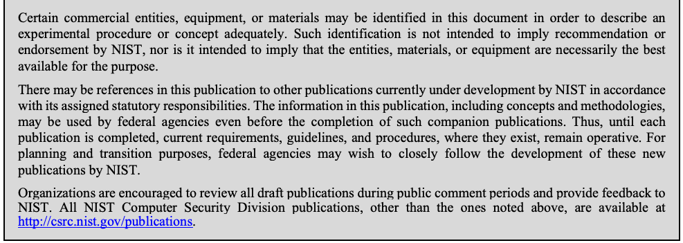
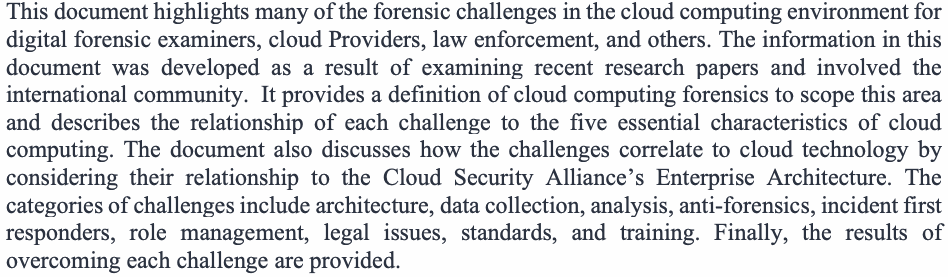
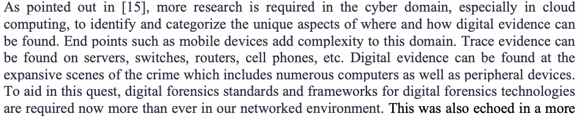

NIST IR 8006 日本語訳
英語タイトル : NIST Cloud Computing Forensic Science Challenges日本語タイトル : NIST クラウドコンピューティングにおけるフォレンジックサイエンスの課題
公開日 : 2020-08-25
原文URL : https://csrc.nist.gov/pubs/ir/8006/final
翻訳編集 : 自動生成（有志による非公式の日本語訳）, 原文取得日 : 2026-10-31, 訳文 : 403 / 404 ブロック
[要約] NIST IR 8006 は、NIST クラウドコンピューティング・フォレンジックサイエンス作業部会のメンバーが実施した調査を要約し、クラウドコンピューティングのエコシステムで発生したインシデントに対応する際に専門家が直面するフォレンジック上の課題を、集約・分類したうえで論じる文書です。課題は、それらに言及している関連文献とともに示され、クラウドコンピューティングの 5 つの基本特性や Cloud Security Alliance のエンタープライズアーキテクチャとの関係が分析されています。課題のカテゴリには、アーキテクチャ、データ収集、分析、アンチフォレンジック、インシデントのファーストレスポンダー、役割管理、法的問題、標準、トレーニングがあります。本書の当面の目標はフォレンジックサイエンスの懸念事項について対話を始めることであり、長期的な目標はそれらの課題への理解を深め、緩和できる技術と標準を特定することです。
NISTIR 8006
NISTIR 8006
NIST Cloud Computing Forensic Science Challenges
NIST クラウドコンピューティングにおけるフォレンジックサイエンスの課題
Martin Herman
Michaela Iorga
Ahsen Michael Salim
Robert H. Jackson
Mark R. Hurst
Ross Leo
Richard Lee
Nancy M. Landreville
Anand Kumar Mishra
Yien Wang
Rodrigo Sardinas
Martin Herman
Michaela Iorga
Ahsen Michael Salim
Robert H. Jackson
Mark R. Hurst
Ross Leo
Richard Lee
Nancy M. Landreville
Anand Kumar Mishra
Yien Wang
Rodrigo Sardinas
This publication is available free of charge from:
本刊行物は、次の場所から無料で入手できます:
https://doi.org/10.6028/NIST.IR.8006
https://doi.org/10.6028/NIST.IR.8006
NISTIR 8006
NISTIR 8006
NIST Cloud Computing Forensic Science Challenges
NIST クラウドコンピューティングにおけるフォレンジックサイエンスの課題
Martin Herman
Information Access Division
Information Technology Laboratory
Martin Herman
情報アクセス部門
情報技術研究所
Richard Lee
Citizens Financial Group
Johnston, RI
Richard Lee
Citizens Financial Group
Johnston, RI
Michaela Iorga
Computer Security Division
Information Technology Laboratory
Michaela Iorga
コンピュータセキュリティ部門
情報技術研究所
Nancy M. Landreville
MELE Associates (Germantown, MD)
and Univ. of Maryland, GC (Adelphi, MD)
Nancy M. Landreville
MELE Associates (Germantown, MD)
および Univ. of Maryland, GC (Adelphi, MD)
Ahsen Michael Salim
American Data Technology, Inc.
Research Triangle Park, NC
Ahsen Michael Salim
American Data Technology, Inc.
Research Triangle Park, NC
Anand Kumar Mishra
Malaviya National Institute of Technology
Jaipur, India
Anand Kumar Mishra
Malaviya National Institute of Technology
Jaipur, India
Robert H. Jackson
Mark R. Hurst
SphereCom Enterprises Inc.
Marshall, VA
Robert H. Jackson
Mark R. Hurst
SphereCom Enterprises Inc.
Marshall, VA
Yien Wang
Rodrigo Sardinas
Auburn University
Auburn, AL
Yien Wang
Rodrigo Sardinas
Auburn University
Auburn, AL
Ross Leo
University of Houston-Clear Lake CyberSecurity Institute
Houston, TX
Ross Leo
University of Houston-Clear Lake CyberSecurity Institute
Houston, TX
This publication is available free of charge from:
本刊行物は、次の場所から無料で入手できます:
https://doi.org/10.6028/NIST.IR.8006
https://doi.org/10.6028/NIST.IR.8006
August 2020
2020年8月
U.S. Department of Commerce Wilbur L. Ross, Jr., Secretary
米国商務省 Wilbur L. Ross, Jr. 長官
National Institute of Standards and Technology
国立標準技術研究所（National Institute of Standards and Technology）
Walter Copan, NIST Director and Under Secretary of Commerce for Standards and Technology
Walter Copan、NIST 所長兼商務次官（標準・技術担当）
National Institute of Standards and Technology Interagency or Internal Report 8006 87 pages (August 2020)
国立標準技術研究所 省庁間報告書または内部報告書 8006、87 ページ（2020年8月）
This publication is available free of charge from: https://doi.org/10.6028/NIST.IR.8006
本刊行物は、次の場所から無料で入手できます: https://doi.org/10.6028/NIST.IR.8006
Certain commercial entities, equipment, or materials may be identified in this document in order to describe an experimental procedure or concept adequately. Such identification is not intended to imply recommendation or endorsement by NIST, nor is it intended to imply that the entities, materials, or equipment are necessarily the best available for the purpose.
原本PDFの抜粋画像

本書では、実験手順や概念を適切に説明するために、特定の商業的な事業体、機器、資材に言及している場合があります。そのような言及は、NIST による推奨や推薦を意味するものではなく、それらの事業体、資材、機器がその目的に利用可能なものの中で必ずしも最良であることを意味するものでもありません。
There may be references in this publication to other publications currently under development by NIST in accordance with its assigned statutory responsibilities. The information in this publication, including concepts and methodologies, may be used by federal agencies even before the completion of such companion publications. Thus, until each publication is completed, current requirements, guidelines, and procedures, where they exist, remain operative. For planning and transition purposes, federal agencies may wish to closely follow the development of these new publications by NIST.
本刊行物には、NIST が法令で定められた責務に従って策定中の他の刊行物への言及が含まれている場合があります。概念や方法論を含め、本刊行物の情報は、そうした関連刊行物の完成前であっても、連邦機関が利用してかまいません。したがって、各刊行物が完成するまでは、現行の要件、ガイドライン、手順が存在する場合には、それらが引き続き有効です。計画および移行のため、連邦機関は、NIST によるこれらの新しい刊行物の策定状況を注意深く追うことを検討してもよいです。
Organizations are encouraged to review all draft publications during public comment periods and provide feedback to NIST. All NIST Computer Security Division publications, other than the ones noted above, are available at http://csrc.nist.gov/publications.
各組織は、パブリックコメントの期間中にすべてのドラフト刊行物を確認し、NIST にフィードバックを提供することが推奨されています。上記以外の NIST コンピュータセキュリティ部門の刊行物はすべて、http://csrc.nist.gov/publications で入手できます。
Comments on this publication may be submitted to:
本刊行物へのコメントは、次の宛先に提出できます:
National Institute of Standards and Technology Attn: Computer Security Division, Information Technology Laboratory 100 Bureau Drive (Mail Stop 8930) Gaithersburg, MD 20899-8930 Email: nistir8006@nist.gov
National Institute of Standards and Technology Attn: Computer Security Division, Information Technology Laboratory 100 Bureau Drive (Mail Stop 8930) Gaithersburg, MD 20899-8930 Email: nistir8006@nist.gov
All comments are subject to release under the Freedom of Information Act (FOIA).
すべてのコメントは、情報自由法（FOIA）に基づいて公開される場合があります。
Reports on Computer Systems Technology
コンピュータシステム技術に関する報告書
The Information Technology Laboratory (ITL) at the National Institute of Standards and Technology (NIST) promotes the U.S. economy and public welfare by providing technical leadership for the Nation’s measurement and standards infrastructure. ITL develops tests, test methods, reference data, proof of concept implementations, and technical analyses to advance the development and productive use of information technology. ITL’s responsibilities include the development of management, administrative, technical, and physical standards and guidelines for the cost-effective security and privacy of other than national security-related information in federal information systems.
米国国立標準技術研究所（NIST）の情報技術研究所（ITL）は、国の測定・標準のインフラストラクチャに技術的なリーダーシップを提供することにより、米国の経済と公共の福祉を促進しています。ITL は、情報技術の発展と生産的な利用を推進するため、テスト、テスト方法、参照データ、概念実証の実装、技術分析を開発しています。ITL の責務には、連邦情報システムにおける、国家安全保障に関するもの以外の情報について、費用対効果の高いセキュリティとプライバシーのための、管理面・運用面・技術面・物理面の標準とガイドラインの策定が含まれます。
Abstract
概要
This document summarizes research performed by the members of the NIST Cloud Computing Forensic Science Working Group and aggregates, categorizes, and discusses the forensics challenges faced by experts when responding to incidents that have occurred in a cloud-computing ecosystem. The challenges are presented along with the associated literature that references them. The immediate goal of the document is to begin a dialogue on forensic science concerns in cloud computing ecosystems. The long-term goal of this effort is to gain a deeper understanding of those concerns (challenges) and to identify technologies and standards that can mitigate them.
本書は、NIST クラウドコンピューティング・フォレンジックサイエンス作業部会のメンバーが実施した調査を要約し、クラウドコンピューティングのエコシステムで発生したインシデントに対応する際に専門家が直面するフォレンジック上の課題を、集約・分類したうえで論じています。課題は、それらに言及している関連文献とともに示されます。本書の当面の目標は、クラウドコンピューティングのエコシステムにおけるフォレンジックサイエンスの懸念事項について、対話を始めることです。この取り組みの長期的な目標は、それらの懸念事項（課題）についての理解を深め、それらを緩和できる技術と標準を特定することです。
Keywords
キーワード
cloud computing forensics; digital forensics; forensic science; forensics; forensics challenges.
クラウドコンピューティングフォレンジック、デジタルフォレンジック、フォレンジックサイエンス、フォレンジック、フォレンジック上の課題。
Acknowledgments
謝辞
This report is dedicated to the memory of our colleague, collaborator, and friend, Ernesto F. Rojas of Forensic & Security Services Inc., who passed away unexpectedly.
原本PDFの抜粋画像
本報告書は、予期せず亡くなった、同僚であり共同作業者であり友人であった Forensic & Security Services Inc. の Ernesto F. Rojas の追悼に捧げます。
Final Report
最終報告書
This publication was developed by the NIST Cloud Computing Forensic Science Working Group (NCC FSWG) chaired by Dr. Martin Herman and Dr. Michaela Iorga. NIST and the co-chairs wish to gratefully acknowledge and thank the members whose dedicated efforts contributed significantly to addressing the public comments to the June 2014 Draft report and to updating and enhancing the publication. We also thank Ramaswamy Chandramouli of NIST and Kim-Kwang Raymond Choo of the University of Texas at San Antonio for reviewing the document and providing feedback.
本刊行物は、Dr. Martin Herman と Dr. Michaela Iorga が議長を務める NIST クラウドコンピューティング・フォレンジックサイエンス作業部会（NCC FSWG）によって作成されました。NIST と共同議長は、2014年6月のドラフト報告書に寄せられたパブリックコメントへの対応と、本刊行物の更新および拡充に、献身的な努力で大きく貢献したメンバーの皆様に、心から感謝いたします。また、本書をレビューしフィードバックを提供してくださった NIST の Ramaswamy Chandramouli 氏と、テキサス大学サンアントニオ校の Kim-Kwang Raymond Choo 氏にも感謝いたします。
June 2014 Draft Report
2014年6月のドラフト報告書
NOTE: The following section acknowledges the initial collaborators and is reproduced exactly as it appeared in the June 2014 draft report.
注: 以下の節は、当初の共同作業者に謝意を示すものであり、2014年6月のドラフト報告書に掲載されたとおりに再掲しています。
This publication was developed by the NIST Cloud Computing Forensic Science Working Group (NCC FSWG), chaired by Dr. Michaela Iorga and Mr. Eric Simmon. The principal editors of this document are Dr. Martin Herman (NIST Senior Adviser) and Dr. Michaela Iorga. NIST, and the principal editors wish to gratefully acknowledge and thank the members whose dedicated efforts contributed significantly to the publication.
本刊行物は、Dr. Michaela Iorga と Mr. Eric Simmon が議長を務める NIST クラウドコンピューティング・フォレンジックサイエンス作業部会（NCC FSWG）によって作成されました。本書の主たる編集者は、Dr. Martin Herman（NIST シニアアドバイザー）と Dr. Michaela Iorga です。NIST と主たる編集者は、本刊行物に献身的な努力で大きく貢献したメンバーの皆様に、心から感謝いたします。
The following list (in alphabetical order by last name) includes contributors,1 internal reviewers of the document, and other active members who provided feedback and who have agreed to be acknowledged in this document.
次のリストは、姓のアルファベット順に、寄稿者1、本書の内部レビュー担当者、およびフィードバックを提供し本書での謝辞に同意したその他の積極的なメンバーを掲載しています。
CONTRIBUTORS (document and challenges aggregation):
寄稿者（文書および課題の集約）:
Josiah Dykstra, Ph.D., Department of Defense
Lon Gowen, Ph.D., United States Agency for International Development
Robert Jackson, SphereCom Enterprises Inc.
Otto Scot Reemelin, CBIZ
Ernesto F. Rojas, Forensic & Security Services Inc.
Keyun Ruan, Ph.D., Espion Group
Mike Salim, American Data Technology, Inc.
Ken E. Stavinoha, Ph.D., Cisco Systems
Laura P. Taylor, Relevant Technologies
Kenneth R. Zatyko, Forensics Technologies & Discovery Services, Ernst & Young LLP
Josiah Dykstra, Ph.D., Department of Defense
Lon Gowen, Ph.D., United States Agency for International Development
Robert Jackson, SphereCom Enterprises Inc.
Otto Scot Reemelin, CBIZ
Ernesto F. Rojas, Forensic & Security Services Inc.
Keyun Ruan, Ph.D., Espion Group
Mike Salim, American Data Technology, Inc.
Ken E. Stavinoha, Ph.D., Cisco Systems
Laura P. Taylor, Relevant Technologies
Kenneth R. Zatyko, Forensics Technologies & Discovery Services, Ernst & Young LLP
INTERNAL REVIEWERS:
内部レビュー担当者:
Nancy M. Landreville, University of Maryland University College & BRCTC
Kristy M. Westphal, Element Payment Services
Nancy M. Landreville, University of Maryland University College & BRCTC
Kristy M. Westphal, Element Payment Services
OTHER ACTIVE MEMBERS:
その他の積極的なメンバー:
Ragib Hasan, Ph.D., Assistant Prof., Dept. of Computer and Information Sciences, Univ. of Alabama at Birmingham
Mark Potter, Danya International
Anthony M. Rutkowski, Yaana Technologies
Ragib Hasan, Ph.D., Assistant Prof., Dept. of Computer and Information Sciences, Univ. of Alabama at Birmingham
Mark Potter, Danya International
Anthony M. Rutkowski, Yaana Technologies
NOTE: All views expressed in this document by the contributors are their personal opinions and not those of the organizations with which they are affiliated.
注: 本書において寄稿者が表明したすべての見解は、寄稿者個人の意見であり、所属する組織の見解ではありません。
Executive Summary
エグゼクティブサマリー
The National Institute of Standards and Technology (NIST) has been designated by the Federal Chief Information Officer (CIO) to accelerate the Federal Government’s secure adoption of cloud computing by leading efforts to develop standards and guidelines in close consultation and collaboration with standards bodies, the private sector, and other stakeholders.
米国国立標準技術研究所（NIST）は、連邦最高情報責任者（CIO）により、標準化団体、民間部門、その他の利害関係者と緊密に協議・協力しながら標準とガイドラインを策定する取り組みを主導し、連邦政府によるクラウドコンピューティングの安全な採用を加速する役割を担う機関に指定されています。
Consistent with NIST’s mission,1 the NIST Cloud Computing Program (NCCP) has developed the NIST Cloud Computing Standards Roadmap [1] as one of many mechanisms in support of the U.S. Government’s (USG’s) secure and effective adoption of cloud computing technology2 to reduce costs and improve services. Standards are critical to ensure cost-effective and easy migration, to ensure that mission-critical requirements can be met, and to reduce the risk that sizable investments may become prematurely technologically obsolete. Standards are key elements required to ensure a level playing field in the global marketplace. The importance of setting standards in close relation with private sector involvement is highlighted in a memorandum from the Office of Management and Budget (OMB), M-12-08 [2], dated January 17, 2012.
NIST の使命1に沿って、NIST クラウドコンピューティングプログラム（NCCP）は、費用を削減しサービスを向上させるための米国政府（USG）によるクラウドコンピューティング技術2の安全かつ効果的な採用を支援する多くの仕組みの一つとして、NIST Cloud Computing Standards Roadmap [1] を策定しました。標準は、費用対効果が高く容易な移行を確保し、ミッションクリティカルな要件を満たせるようにし、多額の投資が技術的に時期尚早に陳腐化するリスクを減らすために不可欠です。標準は、世界市場における公平な競争条件を確保するために必要な重要な要素でもあります。民間部門の関与と密接に関連づけて標準を策定することの重要性は、2012年1月17日付の行政管理予算局（OMB）の覚書 M-12-08 [2] で強調されています。
With the rapid adoption of cloud computing technology, a need has arisen for the application of digital forensic science to this domain. The validity and reliability of forensic science is crucial in this new context and requires new methodologies for identifying, collecting, preserving, and analyzing evidence in multi-tenant cloud3 environments that offer rapid provisioning, global elasticity, and broad network accessibility. This is necessary to support the U.S. criminal justice and civil litigation systems as well as to provide capabilities for security incident response and internal enterprise operations.
クラウドコンピューティング技術が急速に採用されたことで、この領域にデジタルフォレンジックサイエンスを適用する必要が生じています。この新しい状況では、フォレンジックサイエンスの妥当性と信頼性が極めて重要であり、迅速なプロビジョニング、グローバルな伸縮性、幅広いネットワークアクセス性を備えたマルチテナントのクラウド3環境において、証拠を識別、収集、保全、分析するための新しい方法論が必要です。これは、米国の刑事司法および民事訴訟の制度を支え、セキュリティインシデント対応と組織内のエンタープライズ運用のための能力を提供するために必要です。
The NIST Cloud Computing Forensic Science Working Group (NCC FSWG) was established to research forensic science challenges in the cloud environment and to develop plans for standards and technology research to mitigate the challenges that cannot be addressed by current technology and methods. The NCC FSWG has surveyed existing literature and defined a set of challenges related to cloud computing forensics. These challenges, along with associated literature, are presented in this document. The document also provides a preliminary analysis of these challenges by including: (1) the relationship between each challenge to the five essential characteristics of cloud computing as defined in the NIST cloud computing model [3], (2) how the challenges correlate to cloud technology, and (3) nine categories to which the challenges belong. In addition, the analysis considers logging data, data in media, and issues associated with time, location, and sensitive data.
NIST クラウドコンピューティング・フォレンジックサイエンス作業部会（NCC FSWG）は、クラウド環境におけるフォレンジックサイエンスの課題を調査し、現在の技術や方法では対処できない課題を緩和するための標準および技術研究の計画を策定する目的で設立されました。NCC FSWG は既存の文献を調査し、クラウドコンピューティングのフォレンジックに関する一連の課題を定義しました。これらの課題は、関連文献とともに本書で示されます。本書では、これらの課題について、予備的な分析も行っています。その内容は、(1) 各課題と、NIST クラウドコンピューティングモデル [3] で定義されたクラウドコンピューティングの5つの基本特性との関係、(2) 課題とクラウド技術との相関、(3) 課題が属する9つのカテゴリです。加えて、この分析では、ログデータ、媒体上のデータ、および時間、場所、機微なデータに関する問題を検討しています。
Table of Contents
目次
Table of Figures
図の一覧
Figure 1: CSA’s Enterprise Architecture — 78
図 1: CSA のエンタープライズアーキテクチャ — 78
Figure 2: Mind Map – Categories and Subcategories — 78
図 2: マインドマップ – カテゴリとサブカテゴリ — 78
Figure 3: Mind Map – Primary Categories — 79
図 3: マインドマップ – 主要カテゴリ — 79
Figure 4: Mind Map – Related Categories — 80
図 4: マインドマップ – 関連カテゴリ — 80
1 Introduction
1 はじめに
Cloud computing has revolutionized the methods by which digital data is stored, processed, and transmitted. One of the most daunting new challenges is how to perform digital forensics in various types of cloud computing environments. The challenges associated with conducting forensics in different cloud deployment models, which may cross geographic or legal boundaries, have become an issue.
クラウドコンピューティングは、デジタルデータの保存、処理、伝送の方法に革命をもたらしました。最も困難な新しい課題の一つは、さまざまな種類のクラウドコンピューティング環境でデジタルフォレンジックをどのように実施するかです。地理的または法的な境界をまたぐ場合があるさまざまなクラウド展開モデルでフォレンジックを実施することに伴う課題が、問題になっています。
NIST carries out many research activities related to forensic science. The goals of these activities are to improve the accuracy, reliability, and scientific validity of forensic science methods and practices through advances in its measurements and standards infrastructure. As part of these activities, the NIST Cloud Computing Forensic Science Working Group (NCC FSWG) is identifying emerging standards and technologies that would help solve challenges, that is, the most pressing problems fundamental to carrying out forensics in a cloud computing environment to lawfully obtain (e.g., via warrant or subpoena) all relevant artifacts, as well as to provide capabilities for security incident response and internal enterprise operations.
NIST は、フォレンジックサイエンスに関する多くの研究活動を行っています。これらの活動の目標は、測定と標準のインフラストラクチャの進歩を通じて、フォレンジックサイエンスの方法と実務の正確性、信頼性、科学的妥当性を向上させることです。こうした活動の一環として、NIST クラウドコンピューティング・フォレンジックサイエンス作業部会（NCC FSWG）は、課題、すなわちクラウドコンピューティング環境でフォレンジックを実施して、関連するすべてのアーティファクトを合法的に（例: 令状や召喚状によって）取得し、あわせてセキュリティインシデント対応や組織内のエンタープライズ運用のための能力を提供するうえで根本となる、最も差し迫った問題の解決に役立つ、新たな標準と技術を特定しています。
The cloud exacerbates many technological, organizational, and legal challenges already faced by digital forensic examiners. Several of these challenges—such as those associated with data replication, location transparency, and multi-tenancy—are somewhat unique to cloud computing forensics [4], [72]. The NCC FSWG has collected and aggregated a list of cloud forensic challenges (see Annex A) that are introduced and discussed in this document. Future work will involve identifying gaps in technology and standards related to the challenges that need to be addressed and developing possible technological and standards approaches to mitigate these challenges.
クラウドは、デジタルフォレンジックの調査官がすでに直面している技術的、組織的、法的な課題の多くを悪化させます。これらの課題のいくつか（データの複製、場所の透過性、マルチテナンシーに関連するものなど）は、クラウドコンピューティングのフォレンジックにやや固有のものです [4], [72]。NCC FSWG は、本書で紹介し論じるクラウドフォレンジックの課題の一覧（別添 A を参照）を収集して集約しました。今後の作業では、これらの課題に関連して対処が必要な技術と標準のギャップを特定し、これらの課題を緩和するための技術的アプローチおよび標準に基づくアプローチの可能性を策定します。
1.1 Document Goals
1.1 本書の目標
This document is intended to serve as a basis for a dialogue on forensic science concerns in cloud Ecosystems4 and as a starting point for understanding those concerns (challenges) with the intent of allowing the cloud computing community to identify the technologies and standards that can mitigate these challenges.
本書は、クラウドのエコシステム4におけるフォレンジックサイエンスの懸念事項についての対話の基礎となること、およびそれらの懸念事項（課題）を理解するための出発点となることを意図しています。その狙いは、クラウドコンピューティングのコミュニティが、これらの課題を緩和できる技術と標準を特定できるようにすることです。
1.2 Audience
1.2 想定読者
The primary audience for this document includes digital forensic examiners, developers and researchers, cloud security professionals, law enforcement officers, and cloud Auditors. However, given the breadth and depth of this topic, many other stakeholders—such as cloud policy makers, executives, and the general user population of cloud Consumers—may also be interested in certain aspects of this document.
本書の主な想定読者は、デジタルフォレンジックの調査官、開発者および研究者、クラウドセキュリティの専門家、法執行官、およびクラウドの監査者（Auditor）です。ただし、このテーマの幅広さと奥深さを考えると、クラウドの政策立案者、経営幹部、クラウドのコンシューマー（Consumer）の一般利用者層など、他の多くの利害関係者も、本書の特定の側面に関心を持つ可能性があります。
2 Overview
2 概要
This section discusses the characteristics of cloud computing forensic science, elaborates on why cloud computing challenges traditional digital forensics methods, and describes what constitutes a challenge for cloud forensics.
この節では、クラウドコンピューティング・フォレンジックサイエンスの特性を論じ、クラウドコンピューティングがなぜ従来のデジタルフォレンジックの手法に課題を突きつけるのかを詳しく説明し、クラウドフォレンジックにおける課題とみなすものを述べます。
2.1 Cloud Computing Forensic Science
2.1 クラウドコンピューティング・フォレンジックサイエンス
Many experts consider forensic science to be the application of a broad spectrum of sciences and technologies to the investigation and establishment of facts of interest in relation to criminal law, civil law, or regulatory issues. The rapid advance of cloud services requires the development of better forensic tools to keep pace. However, the resulting techniques may also be used for purposes other than legal and regulatory issues to reconstruct an event that has occurred.
多くの専門家は、フォレンジックサイエンスを、刑事法、民事法、または規制上の問題に関連する関心事の事実を調査し確定するために、広範な科学と技術を応用することと考えています。クラウドサービスの急速な進歩に歩調を合わせるには、より優れたフォレンジックツールの開発が必要です。ただし、そこから得られる技術は、法的・規制上の問題以外にも、発生した事象を再構成する目的で用いることができます。
Cloud computing forensic science is the application of scientific principles, technological practices, and derived and proven methods to reconstruct past cloud computing events through the identification, acquisition, preservation, examination, interpretation, and reporting of potential digital evidence.
クラウドコンピューティング・フォレンジックサイエンスとは、潜在的なデジタル証拠の識別、取得、保全、検査、解釈、報告を通じて、過去のクラウドコンピューティングの事象を再構成するために、科学的原則、技術的実務、および導出され実証された方法を適用することです。
NIST defines cloud computing as a model for enabling ubiquitous, convenient, on-demand network access to a shared pool of configurable computing resources (e.g., networks, servers, storage, applications, and services) that can be rapidly provisioned and released with minimal management effort or service Provider interaction. This cloud model is composed of five essential characteristics, three service models, and four deployment models [3]. Cloud forensics is a process applied to an implementation of this cloud model.
NIST は、クラウドコンピューティングを、設定変更可能なコンピューティングリソース（例: ネットワーク、サーバー、ストレージ、アプリケーション、サービス）の共有プールに対して、どこからでも、便利に、オンデマンドでネットワークアクセスできるようにするモデルであり、最小限の管理労力またはサービスプロバイダー（Provider）とのやり取りで、リソースを迅速にプロビジョニングおよび解放できるものと定義しています。このクラウドモデルは、5 つの基本特性、3 つのサービスモデル、4 つの展開モデルで構成されます [3]。クラウドフォレンジックは、このクラウドモデルの実装に適用されるプロセスです。
A number of researchers have defined cloud forensics as the application of digital forensic science in cloud environments [4], [72], [73]. Technically, it consists of a hybrid forensic approach (e.g., remote, virtual, network, live, large-scale, thin-client, thick-client, including end-point devices used to access cloud services) to the discovery of digital evidence. Organizationally, it involves interactions among cloud Actors (i.e., Provider, Consumer, Broker, Carrier, Auditor) for the purpose of facilitating both internal and external investigations. Legally, it often implies multi-jurisdictional and multi-tenant situations.
多くの研究者が、クラウドフォレンジックを、クラウド環境へのデジタルフォレンジックサイエンスの適用と定義しています [4], [72], [73]。技術的には、デジタル証拠の発見に対するハイブリッドなフォレンジックのアプローチ（例: リモート、仮想、ネットワーク、ライブ、大規模、シンクライアント、シッククライアント。クラウドサービスへのアクセスに使われるエンドポイントデバイスを含む）で構成されます。組織的には、内部調査と外部調査の双方を円滑にする目的で、クラウドのアクター（すなわち、プロバイダー、コンシューマー、ブローカー、キャリア、監査者）間のやり取りを伴います。法的には、複数の法域とマルチテナントにまたがる状況を意味することが多くあります。
Various process models have been developed for digital forensics, including the following eight distinctive steps and attributes [5]:
デジタルフォレンジックにはさまざまなプロセスモデルが開発されており、その中には次の 8 つの特徴的なステップと属性が含まれます [5]:
1.Search authority. Legal authority is required to conduct a search and/or seizure of data.
1.捜索の権限。データの捜索または押収（あるいはその両方）を行うには、法的権限が必要です。
2.Chain of custody. In legal contexts, chronological documentation of access and handling of evidentiary items is required to avoid allegations of evidence tampering or misconduct.
2.保管の連鎖（チェーン・オブ・カストディ）。法的な文脈では、証拠の改ざんや不正行為の主張を避けるため、証拠物件へのアクセスと取り扱いを時系列で文書化することが必要です。
3.Imaging/hashing function. When items containing potential digital evidence are found, each should be carefully duplicated and then hashed to validate the integrity of the copy.
3.イメージング／ハッシュ化機能。潜在的なデジタル証拠を含む物件が見つかった場合は、それぞれを慎重に複製したうえでハッシュ化し、複製の完全性を検証すべきです。
4.Validated tools. When possible, tools used for forensics should be validated to ensure reliability and correctness.
4.検証済みツール。可能な場合は、フォレンジックに用いるツールを検証し、信頼性と正確性を確保すべきです。
5.Analysis. Forensic analysis is the execution of investigative and analytical techniques to examine, analyze, and interpret the evidentiary artifacts retrieved.
5.分析。フォレンジック分析とは、回収された証拠のアーティファクトを検査、分析、解釈するために、調査的・分析的な技法を実行することです。
6.Repeatability and reproducibility (quality assurance). The procedures and conclusions of forensic analysis should be repeatable and reproducible by the same or other forensic analysts [6].
6.反復可能性と再現可能性（品質保証）。フォレンジック分析の手順と結論は、同じフォレンジック分析者または他のフォレンジック分析者が、反復し再現できるようにすべきです [6]。
7.Reporting. The forensic analyst must document his or her analytical procedure and conclusions for use by others.
7.報告。フォレンジック分析者は、他者が利用できるように、自らの分析手順と結論を文書化しなければなりません。
8.Presentation. In most cases, the forensic analyst will present his or her findings and conclusions to a court or other audience.
8.提示。ほとんどの場合、フォレンジック分析者は、自らの所見と結論を、裁判所またはその他の聴衆に提示します。
In order to carry out digital forensic investigations in the cloud, these steps need to be applied or adapted to the cloud context. Many of them pose significant challenges. This document is focused on the forensic analysis of artifacts retrieved from a cloud environment. A related discipline, which is not addressed here, focuses on carrying out the forensic process using a cloud environment. This involves using the cloud to perform examination and analysis of digital evidence [6]
クラウドでデジタルフォレンジック調査を実施するには、これらのステップをクラウドの文脈に適用または適合させる必要があります。その多くは重大な課題を伴います。本書は、クラウド環境から回収されたアーティファクトのフォレンジック分析に焦点を当てています。ここでは扱わない関連分野として、クラウド環境を用いてフォレンジックプロセスを実施することに焦点を当てたものがあります。これには、クラウドを用いてデジタル証拠の検査と分析を行うことが含まれます [6]
2.2 Defining What Constitutes a Challenge for Cloud Computing Forensics
2.2 クラウドコンピューティングのフォレンジックにおける課題とみなすものの定義
The numerous challenges for the various stakeholders who share an interest in forensic analysis of cloud computing environments can be broadly categorized into technical, legal, and organizational5 challenges. These challenges occur when identification and acquisition tasks become impeded or when examination and interpretation by a digital forensic examiner is prevented.
クラウドコンピューティング環境のフォレンジック分析に関心を共有するさまざまな利害関係者にとっての数多くの課題は、技術的課題、法的課題、組織的5課題に大別できます。これらの課題は、識別と取得のタスクが妨げられるとき、またはデジタルフォレンジックの調査官による検査と解釈が妨げられるときに生じます。
Compared to the challenges of traditional digital forensics, those of cloud forensics are considered to either be unique to the cloud environment or exacerbated by the cloud environment [4]. While the goals of first responders and forensic examiners may be the same in the cloud context as in traditional, large-scale computer and network forensics, distinctive features of cloud computing—such as segregation of duties among cloud Actors, inability to acquire system and network logs, multi-tenancy, and rapid elasticity—introduce unique scenarios to digital investigations. On the other hand, challenges associated with, for example, virtualization, large-scale data processing, and the proliferation of mobile devices and other endpoints are exacerbated in the cloud.
従来のデジタルフォレンジックの課題と比べると、クラウドフォレンジックの課題は、クラウド環境に固有のものか、クラウド環境によって悪化するもののいずれかと考えられます [4]。ファーストレスポンダーとフォレンジックの調査官の目標は、クラウドの文脈でも、従来の大規模なコンピュータおよびネットワークのフォレンジックと同じかもしれませんが、クラウドアクター間の職務の分離、システムログやネットワークログを取得できないこと、マルチテナンシー、迅速な伸縮性といったクラウドコンピューティングの特徴は、デジタル調査に固有のシナリオをもたらします。一方、たとえば仮想化、大規模データ処理、モバイルデバイスやその他のエンドポイントの急増に関連する課題は、クラウドでは悪化します。
Cloud forensic challenges cannot be solved by technological, legal, or organizational principles alone. Many of the challenges need solutions from all three areas, and scholars and practitioners have been discussing these challenges. This report focuses more on the technical challenges (which need to be understood in order to develop technology) and standards-based mitigation approaches.
クラウドフォレンジックの課題は、技術的、法的、組織的な原則のいずれか一つだけでは解決できません。課題の多くは、これら 3 つの領域すべてからの解決策を必要としており、研究者や実務者がこれらの課題を議論してきました。本報告書は、技術的課題（技術を開発するために理解する必要があるもの）と、標準に基づく緩和アプローチにより重点を置いています。
3 Cloud Forensic Challenges
3 クラウドフォレンジックの課題
This section discusses how the NCC FSWG collected and aggregated the challenges and provides an analysis and categorization of those challenges.
この節では、NCC FSWG が課題をどのように収集し集約したかを論じ、それらの課題の分析と分類を示します。
3.1 Collection and Aggregation of Forensic Science Challenges
3.1 フォレンジックサイエンスの課題の収集と集約
The first step in identifying the challenges that cloud forensic examiners face was to study the existing literature and gather available data on this topic. The data was then aggregated as a collective group effort by the active participants of the NCC FSWG6 in a meaningful way that allowed for further analysis. The methodology for gathering the data was as follows:
クラウドフォレンジックの調査官が直面する課題を特定する最初のステップは、既存の文献を調べ、このテーマについて入手可能なデータを集めることでした。その後、NCC FSWG6の活動中の参加者が集団で取り組み、さらなる分析が可能となる意味のある形でデータを集約しました。データを集める方法は次のとおりです:
•Perform a literature search. Most of these sources are listed in the References Section (Section 8).
•文献調査を行います。これらの情報源の大半は、参考文献の節（第 8 節）に掲載されています。
•Obtain input from a variety of stakeholders in the group.
•グループ内のさまざまな利害関係者から意見を得ます。
•Have various group discussions among the participants through scheduled conference calls as well as emails.
•予定された電話会議と電子メールを通じて、参加者間でさまざまなグループ討議を行います。
The data gathered was inserted into two tables (shown in Annex A) that currently list 62 challenges, including challenge descriptions, results of overcoming the challenges, relevance of cloud computing essential characteristics [3], correlations between challenges and functional-capabilities, categories of the challenges, and relevant references in the literature.
集めたデータは 2 つの表（別添 A に掲載）に挿入されており、現時点で 62 の課題が一覧化されています。表には、課題の説明、課題を克服した場合に得られる結果、クラウドコンピューティングの基本特性 [3] との関連性、課題と機能的能力との相関、課題のカテゴリ、文献中の関連文献が含まれます。
The major objectives of these tables are to:
これらの表の主な目的は次のとおりです:
•Identify the major challenges in conducting digital forensics procedures where the evidence resides in a cloud computing environment. While there are challenges in conducting any digital forensics procedure, the essential characteristics of cloud computing systems enumerated in Section 3.2 provide many challenges that are not encountered or are encountered to a lesser degree in more traditional computing models.
•証拠がクラウドコンピューティング環境にある場合に、デジタルフォレンジックの手順を実施する際の主要な課題を特定します。どのようなデジタルフォレンジックの手順にも課題はありますが、第 3.2 節に列挙するクラウドコンピューティングシステムの基本特性によって、より従来型のコンピューティングモデルでは遭遇しない、または遭遇する度合いが小さい多くの課題が生じます。
•Create an ongoing dialogue among stakeholders to define potential technology- and standards-based approaches to the mitigation of forensic challenges faced in the cloud computing environment. The challenges identified in the Cloud Forensic Challenges tables (Annex A) are certainly not comprehensive and will continue to evolve. The long-term objectives are to identify technology and standards gaps related to the challenges that need to be addressed and to develop possible technological and standards approaches to mitigate those challenges.
•クラウドコンピューティング環境で直面するフォレンジック上の課題の緩和に向けて、技術と標準に基づくアプローチの可能性を定義するために、利害関係者間で継続的な対話を生み出します。クラウドフォレンジックの課題の表（別添 A）で特定した課題は、決して網羅的ではなく、今後も変化し続けます。長期的な目標は、これらの課題に関連して対処が必要な技術と標準のギャップを特定し、それらを緩和するための技術的アプローチおよび標準に基づくアプローチの可能性を策定することです。
Taken as a whole, the items identified by the Cloud Forensic Challenges tables represent many of the major challenges that arise while performing digital forensics in the cloud environment based on the collective experience of the NCC FSWG. The NCC FSWG hopes that by initiating this dialogue, the experience of other professionals can be drawn upon to further refine and update this information.
全体として、クラウドフォレンジックの課題の表で特定した項目は、NCC FSWG の集合的な経験に基づいて、クラウド環境でデジタルフォレンジックを行う際に生じる主要な課題の多くを表しています。NCC FSWG は、この対話を始めることで、他の専門家の経験を活用し、この情報をさらに洗練し更新できることを期待しています。
3.2 Analysis and Categorization of the Challenges
3.2 課題の分析と分類
Once the forensic science challenges were collected and aggregated, a multi-dimensional analysis and categorization of these challenges were performed to identify each one’s cloud-based root cause and to organize them in categories that are agnostic to cloud Providers or cloud service models.
フォレンジックサイエンスの課題を収集し集約した後、それぞれの課題のクラウドに起因する根本原因を特定し、クラウドプロバイダーやクラウドのサービスモデルに依存しないカテゴリに整理するため、課題の多次元的な分析と分類を行いました。
3.2.1 Relevance of Essential Cloud Characteristics
3.2.1 クラウドの基本特性との関連性
The NCC FSWG intended to keep the challenges generic and, therefore, disregarded the myriad architectural differences among the many cloud computing family of offerings when analyzing the aggregated challenges.
NCC FSWG は、課題を汎用的なものにとどめることを意図していたため、集約した課題を分析する際、クラウドコンピューティング系の多くの提供形態の間にある無数のアーキテクチャ上の違いを考慮しませんでした。
Additionally, the team targeted only the digital forensic challenges unique to or exacerbated by the cloud environment. To assist in filtering out the challenges that do not have a cloud-based root cause, the team analyzed each challenge through the lens of the five essential characteristics of the cloud computing model as defined in The NIST Definition of Cloud Computing [3]. These characteristics are used to identify whether a challenge has a cloud-based root cause. Table 2 of Annex A captures this analysis in the third column, which identifies the characteristics most relevant to each challenge. The essential characteristics of the cloud computing model are reproduced below:
加えて、このチームは、クラウド環境に固有の、またはクラウド環境によって悪化するデジタルフォレンジックの課題だけを対象としました。クラウドに起因する根本原因を持たない課題を除外しやすくするため、チームは、The NIST Definition of Cloud Computing [3] で定義されたクラウドコンピューティングモデルの 5 つの基本特性の観点から、各課題を分析しました。これらの特性は、課題がクラウドに起因する根本原因を持つかどうかを識別するために用いられます。別添 A の表 2 は、この分析を第 3 列に記録しており、そこには各課題に最も関連する特性が示されています。クラウドコンピューティングモデルの基本特性を以下に再掲します:
•On-demand self-service: A Consumer can automatically and unilaterally provision computing capabilities, such as server time and network storage, as needed without requiring human interaction with each cloud service Provider.
•オンデマンド・セルフサービス: コンシューマーは、各クラウドサービスプロバイダーとのやり取りを必要とせずに、サーバー時間やネットワークストレージなどのコンピューティング能力を、必要に応じて自動的かつ一方的にプロビジョニングできます。
•Broad network access: Capabilities are available over the network and accessed through standard mechanisms that promote use by heterogeneous thin or thick client platforms (e.g., mobile phones, tablets, laptops, and workstations).
•幅広いネットワークアクセス: 能力はネットワーク経由で利用でき、標準的な仕組みを通じてアクセスされるため、異種のシンクライアントまたはシッククライアントのプラットフォーム（例: 携帯電話、タブレット、ノート PC、ワークステーション）での利用が促進されます。
•Resource pooling: The Provider’s computing resources are pooled to serve multiple Consumers using a multi-tenant model with different physical and virtual resources dynamically assigned and reassigned according to consumer demand. There is a sense of location independence in that the Consumer generally has no control over or knowledge of the exact location of the provided resources but may be able to specify location at a higher level of abstraction (e.g., country, state, or data center). Examples of resources include storage, processing, memory, and network bandwidth.
•リソースのプール化: プロバイダーのコンピューティングリソースはプールされ、マルチテナントモデルを用いて複数のコンシューマーにサービスを提供します。物理リソースと仮想リソースは、コンシューマーの需要に応じて動的に割り当てられ、再割り当てされます。場所に依存しないという性質があり、コンシューマーは一般に、提供されるリソースの正確な場所を制御することも知ることもできませんが、より高い抽象度（例: 国、州、データセンター）で場所を指定できる場合があります。リソースの例には、ストレージ、処理、メモリ、ネットワーク帯域幅があります。
•Rapid elasticity: Capabilities can be elastically provisioned and released, in some cases automatically, to rapidly scale outward and inward commensurate with demand. To the Consumer, the capabilities available for provisioning often appear to be unlimited and can be appropriated in any quantity at any time.
•迅速な伸縮性: 能力は、場合によっては自動的に、伸縮自在にプロビジョニングおよび解放でき、需要に見合うよう迅速に拡大・縮小できます。コンシューマーにとって、プロビジョニングに利用できる能力は無制限に見えることが多く、いつでも任意の量を確保できます。
•Measured service: Cloud systems automatically control and optimize resource use by leveraging a metering capability at some level of abstraction appropriate to the type of service (e.g., storage, processing, bandwidth, and active user accounts). Resource usage can be monitored, controlled, and reported, providing transparency for both the Provider and Consumer of the utilized service.
•従量制サービス: クラウドシステムは、サービスの種類に適した何らかの抽象度（例: ストレージ、処理、帯域幅、アクティブなユーザーアカウント）で従量計測機能を活用することにより、リソースの使用を自動的に制御し最適化します。リソースの使用状況は監視、制御、報告でき、利用されたサービスのプロバイダーとコンシューマーの双方に透明性をもたらします。
3.2.2 Correlation Between Cloud Technology and Forensic Science Challenges
3.2.2 クラウド技術とフォレンジックサイエンスの課題との相関
To better understand the correlation between the cloud forensic science challenges and their cloud-based root cause, the NCC FSWG analyzed each challenge’s relationship to the cloud functional capabilities (cloud processes or solutions) identified in the Cloud Security Alliance’s (CSA’s) Enterprise Architecture (EA) [9]and leveraged by the NIST Cloud Security Reference Architecture (CSRA) [10].
クラウドのフォレンジックサイエンスの課題と、それらのクラウドに起因する根本原因との相関をよりよく理解するため、NCC FSWG は、Cloud Security Alliance（CSA）のエンタープライズアーキテクチャ（EA）[9] で特定され、NIST Cloud Security Reference Architecture（CSRA）[10] が活用しているクラウドの機能的能力（クラウドのプロセスまたはソリューション）との関係を、各課題について分析しました。
The CSA’s EA, reproduced in Annex C, Fig. 1, covers the following domains:
別添 C の図 1 に再掲した CSA の EA は、次のドメインを対象としています:
a.Business Operations and Support (BOSS) – has capabilities associated with cloud IT services to support an organization’s business needs.
a.Business Operations and Support（BOSS）– 組織の事業ニーズを支えるクラウド IT サービスに関連する能力を持ちます。
b.Information Technology Operation & Support (ITOS) – has capabilities associated with managing the cloud IT services of an organization.
b.Information Technology Operation & Support（ITOS）– 組織のクラウド IT サービスを管理することに関連する能力を持ちます。
c.Security and Risk Management (S & RM) – has capabilities associated with safeguarding cloud IT assets and detecting, assessing, and monitoring cloud IT risks.
c.Security and Risk Management（S & RM）– クラウド IT 資産の保護、およびクラウド IT リスクの検知、評価、監視に関連する能力を持ちます。
The CSA’s EA also identifies the corresponding data grouping into the following service layers:
CSA の EA は、対応するデータのグループ化として、次のサービス層も特定しています:
d.Presentation Services – has capabilities associated with the end user interacting with a cloud IT solution.
d.Presentation Services – エンドユーザーがクラウド IT ソリューションとやり取りすることに関連する能力を持ちます。
e.Application Services – has capabilities associated with the development and use of cloud applications provided by an organization.
e.Application Services – 組織が提供するクラウドアプリケーションの開発と使用に関連する能力を持ちます。
f.Information Services – has capabilities associated with storage and the use of cloud information and data.
f.Information Services – クラウドの情報とデータの保存および使用に関連する能力を持ちます。
g.Infrastructure Services – has capabilities associated with core functions that support the cloud IT infrastructure, such as facilities, hardware, networks, and virtual environments.
g.Infrastructure Services – 施設、ハードウェア、ネットワーク、仮想環境など、クラウド IT インフラストラクチャを支える中核的な機能に関連する能力を持ちます。
Altogether, there are 347 functional capabilities listed within these categories. The correlations between the forensic challenges and these functional capabilities were examined by determining the relationship between a particular forensic challenge and a particular functional capability (all possible pairs of challenges and capabilities were considered) and by labeling the challenge (as describe below) based on the functional capabilities affected. The relationship was determined by:
これらのカテゴリには、合計で 347 の機能的能力が挙げられています。フォレンジック上の課題とこれらの機能的能力との相関は、特定のフォレンジック上の課題と特定の機能的能力との関係を判定し（課題と能力のあらゆる組み合わせを検討しました）、影響を受ける機能的能力に基づいて課題にラベルを付ける（後述するように）ことで調べました。関係は次のようにして判定しました:
1.Clarifying what it means for a challenge to be overcome (see Annex A, Table 1, column 5 that identifies what would be the result if the challenge were, in fact, overcome?) and
1.課題が克服されるとはどういうことかを明確にすること（別添 A の表 1 の第 5 列を参照してください。課題が実際に克服された場合に何が結果となるかを示しています）。
2.Answering the question, If the challenge were overcome, would that make it easier to conduct a cloud forensic investigation on the considered functional capability?7
2.「課題が克服された場合、検討対象の機能的能力についてクラウドフォレンジック調査を行いやすくなるか」という問いに答えること。7
Analysis of the correlation between the forensic science challenges and the functional capabilities constitutes the foundation for labeling each challenge based on the functional capabilities affected by the challenge. Each challenge is labeled along a generic-to-specific axis (see Annex A, Table 2, column 4). A challenge is labeled generic if it applies to most of the capabilities. A challenge is labeled specific if it applies to a limited set of capabilities. A challenge is labeled quasi if it falls somewhere between generic and specific.
フォレンジックサイエンスの課題と機能的能力との相関の分析は、課題が影響を及ぼす機能的能力に基づいて各課題にラベルを付けるための基礎となります。各課題には、汎用から特定までの軸（別添 A の表 2 の第 4 列を参照）に沿ってラベルが付けられます。課題がほとんどの能力に当てはまる場合、その課題には generic のラベルが付けられます。課題が限られた能力にのみ当てはまる場合は、specific のラベルが付けられます。課題が generic と specific の中間に位置する場合は、quasi のラベルが付けられます。
3.2.3 Categorization of Challenges
3.2.3 課題の分類
A review of the Annex A challenges reveals that a majority of the issues are technical in nature with a major secondary group that is framed by legal and organizational issues. The technical issues revolve around the differences between the operating framework of cloud computing and traditional data center computing. The legal and organizational issues primarily reflect the crossing of national borders and legal jurisdictions by the manner in which cloud Providers store cloud Consumer’s information for operational redundancy, cost, and reliability.
別添 A の課題を確認すると、問題の大半は技術的な性質のものであり、それに次ぐ主要なグループとして、法的問題と組織的問題によって特徴づけられるものがあることがわかります。技術的な問題は、クラウドコンピューティングの運用の枠組みと、従来のデータセンターコンピューティングの運用の枠組みとの違いを中心としています。法的・組織的な問題は、主に、クラウドプロバイダーが運用上の冗長性、コスト、信頼性のためにクラウドコンシューマーの情報を保存する方法によって、国境や法域をまたぐことを反映しています。
To facilitate a more detailed understanding and analysis of the identified challenges, they have been organized into the mind map shown in Annex C. The mind map provides a graphic depiction of the relationship between challenges and was used to structure and classify them into categories. The highest level of the mind map (presented in blue text) represents the complete set of challenges that are identified in Annex A.
特定された課題をより詳しく理解し分析しやすくするため、課題は別添 C に示すマインドマップに整理されています。マインドマップは、課題間の関係を図で表したもので、課題を構造化してカテゴリに分類するために用いられました。マインドマップの最上位（青い文字で表示）は、別添 A で特定された課題の全体を表します。
To assist in a meaningful analysis, the challenges are categorized into the following nine major groups (presented in red text in the mind map). The categories and associated descriptions below provide a summary of the contents of Annex A. Some of the challenges lie in more than one category because, as will be described, a challenge may be part of a primary category and also part of a different related category. Refer to Annex A, Table 2 for the details.
意味のある分析に役立てるため、課題は次の 9 つの主要グループ（マインドマップでは赤い文字で表示）に分類されています。以下のカテゴリとそれに関連する説明は、別添 A の内容の要約です。後述するように、課題は主要カテゴリの一部であると同時に、別の関連カテゴリの一部でもある場合があるため、一部の課題は複数のカテゴリに属しています。詳細は別添 A の表 2 を参照してください。
•Architecture (e.g., diversity, complexity, provenance, multi-tenancy, data segregation). Architecture challenges in cloud forensics include:
•アーキテクチャ（例: 多様性、複雑性、来歴、マルチテナンシー、データの分離）。クラウドフォレンジックにおけるアーキテクチャの課題には、次のものがあります:
•Dealing with variability in cloud architectures between Providers
•プロバイダー間でのクラウドアーキテクチャのばらつきへの対処
•Tenant data compartmentalization and isolation during resource provisioning
•リソースのプロビジョニング時におけるテナントデータの区分化と分離
•Proliferation of systems, locations, and endpoints that can store data
•データを保存できるシステム、場所、エンドポイントの急増
•Accurate and secure provenance for maintaining and preserving chain of custody
•保管の連鎖を維持・保全するための、正確で安全な来歴
•Data collection (e.g., data integrity, data recovery, data location, imaging). Data collection challenges in cloud forensics include:
•データ収集（例: データの完全性、データ復旧、データの場所、イメージング）。クラウドフォレンジックにおけるデータ収集の課題には、次のものがあります:
•Locating forensic artifacts in large, distributed, and dynamic systems
•大規模で分散した動的なシステムでのフォレンジックのアーティファクトの所在の特定
•Locating and collecting volatile data
•揮発性データの所在の特定と収集
•Data collection from virtual machines
•仮想マシンからのデータ収集
•Data integrity in a multi-tenant environment where data is shared among multiple computers in multiple locations and accessible by multiple parties
•データが複数の場所にある複数のコンピュータで共有され、複数の関係者がアクセスできるマルチテナント環境でのデータの完全性
•Inability to image all of the forensic artifacts in the cloud
•クラウド内のすべてのフォレンジックのアーティファクトをイメージングできないこと
•Accessing the data of one tenant without breaching the confidentiality of other tenants
•他のテナントの機密性を侵害せずに、あるテナントのデータにアクセスすること
•Recovery of deleted data in a shared and distributed virtual environment
•共有され分散した仮想環境での、削除されたデータの復旧
•Analysis (e.g., correlation, reconstruction, time synchronization, logs, metadata, timelines). Analysis challenges in cloud forensics include:
•分析（例: 相関、再構成、時刻同期、ログ、メタデータ、タイムライン）。クラウドフォレンジックにおける分析の課題には、次のものがあります:
•Correlation of forensic artifacts across and within cloud Providers
•クラウドプロバイダー間および各プロバイダー内でのフォレンジックのアーティファクトの相関
•Reconstruction of events from virtual images or storage
•仮想イメージまたはストレージからの事象の再構成
•Integrity of metadata
•メタデータの完全性
•Timeline analysis of log data, including synchronization of timestamps
•タイムスタンプの同期を含む、ログデータのタイムライン分析
•Anti-forensics (e.g., obfuscation, data hiding, malware). Anti-forensics are a set of techniques used specifically to prevent or mislead forensic analysis. Anti-forensic challenges in cloud forensics include:
•アンチフォレンジック（例: 難読化、データ隠蔽、マルウェア）。アンチフォレンジックとは、フォレンジック分析を妨げる、または誤らせることを特に目的として用いられる一連の技法です。クラウドフォレンジックにおけるアンチフォレンジックの課題には、次のものがあります:
•The use of obfuscation, malware, data hiding, or other techniques to compromise the integrity of evidence
•証拠の完全性を損なうための、難読化、マルウェア、データ隠蔽などの技法の使用
•Malware may circumvent virtual machine isolation methods
•マルウェアが仮想マシンの分離方式を回避する可能性
•Incident first responders (e.g., trustworthiness of cloud Providers, response time, reconstruction). Incident first responder challenges in cloud forensics include:
•インシデントのファーストレスポンダー（例: クラウドプロバイダーの信頼性、対応時間、再構成）。クラウドフォレンジックにおけるインシデントのファーストレスポンダーの課題には、次のものがあります:
•Confidence, competence, and trustworthiness of the cloud Providers to act as first responders and perform data collection
•クラウドプロバイダーがファーストレスポンダーとして行動しデータ収集を行うことに対する、信頼、能力、信頼性
•Difficulty in performing initial triage
•初期のトリアージの実施の困難さ
•Processing a large volume of collected forensic artifacts
•収集された大量のフォレンジックのアーティファクトの処理
•Role management (e.g., data owners, identity management, users, access control). Role management challenges in cloud forensics include:
•役割管理（例: データ所有者、アイデンティティ管理、ユーザー、アクセス制御）。クラウドフォレンジックにおける役割管理の課題には、次のものがあります:
•Uniquely identifying the owner of an account
•アカウントの所有者を一意に識別すること
•Decoupling between cloud user credentials and physical users
•クラウドのユーザー認証情報と実在のユーザーとの切り離し
•Ease of anonymity and creating fictitious identities online
•匿名性の容易さと、オンラインでの架空のアイデンティティの作成
•Determining exact ownership of data
•データの正確な所有者の判定
•Authentication and access control
•認証とアクセス制御
•Legal (e.g., jurisdictions, laws, service level agreements, contracts, subpoenas, international cooperation, privacy, ethics). Legal challenges in cloud forensics include:
•法的事項（例: 法域、法律、サービス水準合意書、契約、召喚状、国際協力、プライバシー、倫理）。クラウドフォレンジックにおける法的な課題には、次のものがあります:
•Identifying and addressing issues of jurisdictions for legal access to data
•データへの合法的なアクセスに関する法域の問題の特定と対処
•Lack of effective channels for international communication and cooperation during an investigation
•調査中の国際的なコミュニケーションと協力のための、有効なチャネルの欠如
•Data acquisition that relies on the cooperation of cloud Providers, as well as their competence and trustworthiness
•クラウドプロバイダーの協力、およびその能力と信頼性に依存するデータ取得
•Missing terms in contracts and service level agreements
•契約やサービス水準合意書における条項の欠落
•Issuing subpoenas without knowledge of the physical location of data
•データの物理的な場所を知らないままでの召喚状の発行
•Standards (e.g., standard operating procedures, interoperability, testing, validation). Standards challenges in cloud forensics include:
•標準（例: 標準作業手順、相互運用性、テスト、検証）。クラウドフォレンジックにおける標準の課題には、次のものがあります:
•Lack of even minimum/basic SOPs, practices, and tools
•最低限・基本的な SOP、実務、ツールすらないこと
•Lack of interoperability among cloud Providers
•クラウドプロバイダー間の相互運用性の欠如
•Lack of test and validation procedures
•テストおよび検証手順の欠如
•Training (e.g., forensic investigators, cloud Providers, qualification, certification). Training challenges in cloud forensics include:
•トレーニング（例: フォレンジック調査官、クラウドプロバイダー、資格、認証）。クラウドフォレンジックにおけるトレーニングの課題には、次のものがあります:
•Misuse of digital forensic training materials that are not applicable to cloud forensics
•クラウドフォレンジックに適用できないデジタルフォレンジックのトレーニング教材の誤用
•Lack of cloud forensic training and expertise for both investigators and instructors
•調査官と講師の双方における、クラウドフォレンジックのトレーニングと専門知識の欠如
•Limited knowledge by record-keeping personnel in cloud Providers about evidence
•クラウドプロバイダーの記録保持担当者による、証拠についての限られた知識
Once the challenges were grouped into their primary categories, it was determined that several challenges could logically be grouped into subcategories (presented in green text on the mind map). For example, Data Integrity and Data Recovery were determined to be two important subcategories of the Data Collection category because multiple data collection challenges could logically be grouped into these subcategories. Annex C.1 is the mind map that represents these categories and subcategories. Once all of the categories and subcategories were identified, each of the challenges in Annex A was analyzed in relationship to the other challenges and mapped into the appropriate category (and subcategory, if appropriate). These challenges (presented in black text on the mind map) are the end nodes for each path through the mind map.
課題が主要カテゴリにグループ化された後、いくつかの課題は論理的にサブカテゴリ（マインドマップでは緑の文字で表示）にグループ化できると判断されました。たとえば、データの完全性とデータ復旧は、データ収集カテゴリの 2 つの重要なサブカテゴリであると判断されました。複数のデータ収集の課題をこれらのサブカテゴリに論理的にグループ化できるためです。別添 C.1 は、これらのカテゴリとサブカテゴリを表すマインドマップです。すべてのカテゴリとサブカテゴリが特定された後、別添 A の各課題は、他の課題との関係で分析され、適切なカテゴリ（および、該当する場合はサブカテゴリ）に対応づけられました。これらの課題（マインドマップでは黒い文字で表示）は、マインドマップのどの経路でも末端のノードになります。
During this preliminary analysis, it was also discovered that while every challenge could be logically grouped into a primary category, many of the challenges overlapped into other categories. Within Table 2 in Annex A, the latter challenges are identified as belonging to one or more related categories. The primary and related category information is represented in the mind maps shown in Annex C. Different node background colors were selected for primary and related categories. A challenge’s primary category is depicted by a green node background (Annex C.2 shows the primary categories), while a challenge’s related category is depicted by an orange background (Annex C.3 shows the related categories).
この予備的な分析では、すべての課題を主要カテゴリに論理的にグループ化できる一方で、多くの課題が他のカテゴリにも重なっていることも判明しました。別添 A の表 2 では、後者の課題は 1 つ以上の関連カテゴリに属するものとして特定されています。主要カテゴリと関連カテゴリの情報は、別添 C に示すマインドマップで表されています。主要カテゴリと関連カテゴリには、異なるノード背景色が選ばれました。課題の主要カテゴリは緑のノード背景で表され（別添 C.2 が主要カテゴリを示します）、課題の関連カテゴリはオレンジの背景で表されます（別添 C.3 が関連カテゴリを示します）。
4 Additional Analysis of the Challenges
4 課題の追加分析
The study examined challenges related to cloud computing forensics, and this section provides additional insight into the nature of these challenges.
本調査では、クラウドコンピューティングのフォレンジックに関連する課題を検討しました。この節では、これらの課題の性質についてさらなる知見を示します。
In traditional computer forensics, the centralized nature of IT systems allows investigators to have full control over the forensic artifacts (e.g., router logs, process logs, hard disks). However, in a cloud Ecosystem, the distributed nature of IT systems dictates that control over the functional layers varies among cloud Actors depending on the cloud service model. Therefore, investigators have a lower level of visibility and control over the forensic artifacts. For example, cloud Consumers have the highest level of control over the functional stack in an Infrastructure as a Service (IaaS) model and the least level of control in a Software as a Service (SaaS) model. Because of this difference in control, evidence collection varies according to the service model [11].
従来のコンピュータフォレンジックでは、IT システムが集中型であるため、調査官はフォレンジックのアーティファクト（例: ルーターのログ、プロセスのログ、ハードディスク）を完全に制御できます。しかし、クラウドのエコシステムでは、IT システムが分散型であるため、機能層の制御は、クラウドのサービスモデルに応じてクラウドのアクターごとに異なります。そのため、調査官がフォレンジックのアーティファクトを可視化し制御できる度合いは低くなります。たとえば、クラウドのコンシューマーは、Infrastructure as a Service（IaaS）モデルでは機能スタックに対する制御の度合いが最も高く、Software as a Service（SaaS）モデルでは最も低くなります。この制御の違いにより、証拠の収集はサービスモデルによって異なります [11]。
Important sources of forensic analysis are logs, many of which may be available in cloud computing environments but may be hard to access or aggregate due to the segregation of duties among Actors and the lack of transparency of log data for the Consumer. Three examples of such logs are audit, security, and application logs. Audit logs are the records of interactions between services and the underlying operating system. Security logs trace users to actions by identifying the particular user who took an action on a particular date at a particular time. Application logs record activity generated by the applications along with errors and other operational faults of the applications.
フォレンジック分析の重要な情報源はログです。その多くはクラウドコンピューティング環境で入手できる可能性がありますが、アクター間の職務の分離や、コンシューマーにとってのログデータの透明性の欠如により、アクセスや集約が困難な場合があります。そのようなログの例として、監査ログ、セキュリティログ、アプリケーションログの 3 つがあります。監査ログは、サービスと基盤となるオペレーティングシステムとのやり取りの記録です。セキュリティログは、特定の日時にある行為を行った特定のユーザーを識別することで、ユーザーを行為に結び付けます。アプリケーションログは、アプリケーションが生成した活動を、アプリケーションのエラーやその他の運用上の障害とともに記録します。
When there is a potential need for forensic artifacts at the hypervisor/virtual machine monitor (VMM) layers in cloud computing, additional complexities arise from the architecture of the cloud Ecosystem. Just as there can be significant differences in how Windows, Linux, and other operating systems create and handle events, there are different architectures and configurations for hypervisors/VMMs from different manufacturers, and each has its own event definition and logging (or lack thereof). Another level of variability and complexity is added by the fact that the quantity and quality of log data for cloud products are often configurable by the cloud Providers and/or Consumers [6]. Cloud computing can present a challenge to the acquisition of artifacts if, for example, the creation and migration of a virtual path or virtual asset needs to be ascertained across several virtual platforms or cloud Providers.
クラウドコンピューティングにおいて、ハイパーバイザー／仮想マシンモニター（VMM）層のフォレンジックのアーティファクトが必要になる可能性がある場合には、クラウドのエコシステムのアーキテクチャに起因する複雑さがさらに生じます。Windows、Linux、その他のオペレーティングシステムでイベントの生成や処理の方法に大きな違いがあり得るのと同様に、製造者ごとにハイパーバイザー／VMM のアーキテクチャや構成は異なり、それぞれが独自のイベント定義とログ記録（またはその欠如）を持っています。さらに、クラウド製品のログデータの量と質は、クラウドプロバイダーまたはコンシューマー（あるいはその両方）によって設定できることが多く [6]、このことがばらつきと複雑さの別の段階を加えています。たとえば、複数の仮想プラットフォームやクラウドプロバイダーにまたがる仮想パスや仮想資産の作成と移行を突き止める必要がある場合、クラウドコンピューティングはアーティファクトの取得に課題をもたらすことがあります。
To perform forensic analysis using logs with integrity on which all stakeholders can rely, the logs must be trusted [12]. Differences in log formats, decentralization of logs among different layers, lack of accessibility to logs, the multi-tenancy nature of clouds, and the need to preserve the chain of custody make log analysis challenging in clouds. Additionally, the use of logs in hypervisors is not well-understood and presents a significant challenge to cloud forensics.
すべての利害関係者が依拠できる完全性を備えたログを用いてフォレンジック分析を行うには、ログが信頼できるものでなければなりません [12]。ログ形式の違い、異なる層にまたがるログの分散、ログへのアクセス性の欠如、クラウドのマルチテナンシーという性質、保管の連鎖を維持する必要性により、クラウドでのログ分析は困難になります。加えて、ハイパーバイザーにおけるログの使用は十分に理解されておらず、クラウドフォレンジックにとって重大な課題となっています。
The identification, collection, and preservation of media can be particularly challenging in a cloud computing environment because of several possible factors, including:
媒体の識別、収集、保全は、次のようないくつかの要因が考えられるため、クラウドコンピューティング環境では特に困難になる可能性があります:
1.The identification of the cloud Provider and its partners, which is needed to better understand the environment and thus address the factors below
1.クラウドプロバイダーとそのパートナーの識別。環境をよりよく理解し、以下の要因に対処するために必要です
2.The ability to conclusively identify the proper accounts held within the cloud by a Consumer, especially if different identities are used
2.コンシューマーがクラウド内で保有する適切なアカウントを、とりわけ異なるアイデンティティが使われている場合に、確定的に識別できること
3.The ability of the forensic examiner to gain access to the desired media
3.フォレンジックの調査官が目的の媒体にアクセスできること
4.The ability to obtain assistance from the cloud infrastructure/application Provider service staff
4.クラウドインフラストラクチャ／アプリケーションのプロバイダーのサービス担当者から支援を得られること
5.An understanding of the topology, proprietary policies, and storage systems within the cloud.
5.クラウド内のトポロジー、独自のポリシー、ストレージシステムについての理解。
6.The examiner’s ability to complete a forensically sound image of the media once access is obtained
6.アクセスを得た後に、調査官が媒体のフォレンジック上適正なイメージを完成できること
7.The sheer volume of the media
7.媒体の量そのものの多さ
8.The ability to respond in a timely fashion to more than one physical location, if necessary
8.必要な場合に、複数の物理的な場所に適時に対応できること
9.E-discovery, log file collection, and privacy rights, given a multi-tenancy system (e.g., how does one collect the set of log files applicable for this matter versus extraneous information with possible privacy rights protections?)
9.マルチテナンシーのシステムにおける電子証拠開示、ログファイルの収集、プライバシー権（例: プライバシー権による保護の対象となり得る無関係な情報の中から、この案件に該当するログファイルの集合をどのように収集するか）
10.Validation of the forensic image
10.フォレンジックイメージの検証
11.The ability to perform analysis on encrypted data and the forensic investigator’s ability to obtain keys for decryption
11.暗号化されたデータを分析できること、およびフォレンジックの調査官が復号用の鍵を入手できること
12.The storage system no longer being local
12.ストレージシステムがもはやローカルではないこと
13.Often no way to link given evidence to a particular individual other than by relying on the cloud Provider’s word, although there may be evidence in the client endpoint that can link the individual to evidence in the cloud [6]
13.クライアントのエンドポイントに、個人をクラウド内の証拠に結び付けられる証拠がある場合もありますが、特定の証拠を特定の個人に結び付ける手段が、クラウドプロバイダーの言い分に頼る以外にないことが多いこと [6]
Standards and technologies need to be developed to address these challenges. For example, forensic protocols need to be developed that can be adopted by the major cloud Providers. These protocols must adequately address the needs of first responders, law enforcement, and court systems while assuring cloud Providers that there will be minimal or no disruption to their service(s). On the technology front, an example of a current need is the ability to lawfully perform remote digital forensics collections that will lower the cost of travel. In essence, this will involve electronically moving forensic images and metadata from the cloud Provider to a forensics lab. Potential approaches include a documented process for the remote, programmatic collection of evidential data like the one proposed in [6] or even performing the forensics in a scientifically sound manner in the cloud itself.
これらの課題に対処するため、標準と技術を策定する必要があります。たとえば、主要なクラウドプロバイダーが採用できるフォレンジックのプロトコルを策定する必要があります。これらのプロトコルは、ファーストレスポンダー、法執行機関、裁判制度のニーズに適切に対応しつつ、クラウドプロバイダーに対して、そのサービスへの中断が最小限または皆無であることを保証するものでなければなりません。技術面では、現在必要とされているものの例として、出張費用を削減できる、リモートでのデジタルフォレンジック収集を合法的に行える能力があります。本質的には、これはフォレンジックイメージとメタデータを、クラウドプロバイダーからフォレンジックラボへ電子的に移すことを伴います。考えられるアプローチには、[6] で提案されているような、証拠データをリモートでプログラムにより収集するための文書化されたプロセスや、さらにはクラウド内で科学的に適正な方法でフォレンジックを行うことがあります。
4.1 Additional Observations
4.1 追加の所見
During preliminary analysis, some common topics were identified in these challenges, each of which overlaps several of the categories enumerated in the mind map. These topics appear to be orthogonal to those categories and are included here to provide additional insight into the challenges.
予備的な分析の中で、これらの課題に共通するいくつかのトピックが特定されました。それぞれがマインドマップに列挙したカテゴリの複数にまたがっています。これらのトピックはそれらのカテゴリとは直交しているように見えるため、課題についてのさらなる知見を示すために、ここに含めています。
•Time – Time is frequently a critical issue as it relates to time synchronization and the possible disappearance of evidence that is not quickly found, as Zimmerman and Glavach [13] point out. Once the information source is identified, do all involved entities have the time synchronized using a consistent time source such as Network Time Protocol (NTP)? If a forensic expert has a difficult time convincing your legal counsel that the time stamps from client-side log files match time stamps on provider-side log files, the forensics will be difficult to defend. In addition to using NTP to ensure that all server time is synced, the issue of time zones used in timestamps must be addressed in cloud forensics. Not all systems use Coordinated Universal Time (UTC) timestamps; when recorded in local time, the time zone offset must be collected from the server. Additionally, if evidence is not found quickly enough, it may be overwritten or lost in some other manner. Some example challenges in Annex A related to time include FC-05 (Timestamp synchronization), FC-14 (Real-time investigation intelligence processes not possible), FC-30 (Data available for a limited time), and FC-53 (International cloud services).
•時間 – 時間は、Zimmerman と Glavach [13] が指摘するように、時刻同期や、速やかに見つからない証拠が消失する可能性に関連して、重大な問題になることが頻繁にあります。情報源が特定されたら、関係するすべての主体は、ネットワークタイムプロトコル（NTP）などの一貫した時刻源を使って時刻を同期しているでしょうか。フォレンジックの専門家が、クライアント側のログファイルのタイムスタンプとプロバイダー側のログファイルのタイムスタンプが一致することをあなたの法律顧問に納得させるのに苦労すれば、そのフォレンジックを擁護することは困難になります。すべてのサーバー時刻の同期を確保するために NTP を使うことに加えて、クラウドフォレンジックでは、タイムスタンプで使われるタイムゾーンの問題にも対処しなければなりません。すべてのシステムが協定世界時（UTC）のタイムスタンプを使うわけではありません。ローカル時刻で記録されている場合は、サーバーからタイムゾーンのオフセットを収集しなければなりません。さらに、証拠が十分に速やかに見つからないと、上書きされたり、他の方法で失われたりする場合があります。別添 A にある時間に関連する課題の例には、FC-05（タイムスタンプの同期）、FC-14（リアルタイムの調査インテリジェンスのプロセスが不可能）、FC-30（限られた時間しか利用できないデータ）、FC-53（国際的なクラウドサービス）があります。
•Location – Locating digital media can be a time-consuming process in cloud environment cases. Both backup and redundant storage are important, and an understanding of the topology will aid in identifying physical locations of media storage. Locating the evidence can be a big hurdle. As pointed out by Zimmerman and Glavach [13], before network or computer forensics can begin, the network or computer must be ‘found.’ There may only be traces of a virtual machine (VM) because the VM may reside on dispersed, internationally-located physical drives. When forensic data is collected on a physical resource, the justification for collecting that data on that particular resource must be shown by showing the validity of the logical to physical mapping. This is critical since all components – computing, network and storage are virtualized in the cloud. Some example challenges in Annex A related to location include FC-17 (Multiple venues and geo-locations), FC-25 (Decreased access and data control), FC-27 (Locating evidence), FC-37 (Additional evidence collection), FC-48 (Physical data location), and FC-60 (Decoupling user credentials & physical location).
•場所 – デジタル媒体の所在を特定することは、クラウド環境の事案では時間のかかるプロセスになり得ます。バックアップストレージと冗長ストレージはどちらも重要であり、トポロジーを理解すれば、媒体の保管場所の物理的な所在を特定しやすくなります。証拠の所在の特定は大きなハードルになり得ます。Zimmerman と Glavach [13] が指摘するように、ネットワークフォレンジックやコンピュータフォレンジックを始める前に、そのネットワークやコンピュータを「見つけ」なければなりません。仮想マシン（VM）が国際的に分散した物理ドライブ上に存在する可能性があるため、VM の痕跡しか残っていない場合もあります。物理リソース上でフォレンジックデータを収集する場合は、論理と物理の対応付けの妥当性を示すことによって、その特定のリソース上でそのデータを収集する正当性を示さなければなりません。クラウドではコンピューティング、ネットワーク、ストレージのすべての構成要素が仮想化されているため、これは重要です。別添 A にある場所に関連する課題の例には、FC-17（複数の場所と地理的位置）、FC-25（アクセスとデータ制御の低下）、FC-27（証拠の所在の特定）、FC-37（追加の証拠収集）、FC-48（データの物理的な場所）、FC-60（ユーザー認証情報と物理的な場所の切り離し）があります。
•Sensitive data – Sensitive data theft cases (insider, outsider, and both working together) are an important issue. According to CIO.com [14], the U.S. Commission on Intellectual Property estimates over $300 billion in annual losses to U.S. companies due to theft. The pervasive personal use of cloud computing environments by employees could heighten the risk of insider theft given the low-cost storage arrays available and low-cost, high-speed bandwidth to move data. The intrusion threat has grown for all systems connected to the internet. Some example challenges in Annex A related to sensitive data include FC-39 (Selective data acquisition), FC-56 (Confidentiality and Personally Identifiable Information [PII]), FC-61 (Authentication and access control), and FC-07 (Use of metadata).
•機微なデータ – 機微なデータの窃取の事案（内部者、外部者、およびその両者が協力する場合）は重要な問題です。CIO.com [14] によると、米国知的財産委員会は、窃取による米国企業の年間損失額を 3,000 億ドル超と見積もっています。従業員によるクラウドコンピューティング環境の私的利用が広がっていることは、低コストのストレージアレイや、データを移動するための低コストで高速な帯域幅が利用できることを踏まえると、内部者による窃取のリスクを高める可能性があります。インターネットに接続されたすべてのシステムで、侵入の脅威は増大しています。別添 A にある機微なデータに関連する課題の例には、FC-39（選択的なデータ取得）、FC-56（機密性と個人を特定できる情報［PII］）、FC-61（認証とアクセス制御）、FC-07（メタデータの使用）があります。
5 Conclusions
5 結論
This document highlights many of the forensic challenges in the cloud computing environment for digital forensic examiners, cloud Providers, law enforcement, and others. The information in this document was developed as a result of examining recent research papers and involved the international community. It provides a definition of cloud computing forensics to scope this area and describes the relationship of each challenge to the five essential characteristics of cloud computing. The document also discusses how the challenges correlate to cloud technology by considering their relationship to the Cloud Security Alliance’s Enterprise Architecture. The categories of challenges include architecture, data collection, analysis, anti-forensics, incident first responders, role management, legal issues, standards, and training. Finally, the results of overcoming each challenge are provided.
原本PDFの抜粋画像

本書は、デジタルフォレンジックの調査官、クラウドプロバイダー、法執行機関などにとっての、クラウドコンピューティング環境におけるフォレンジック上の課題の多くを明らかにしています。本書の情報は、最近の研究論文を調べた結果として作成されたもので、国際的なコミュニティも関与しました。本書は、この分野の範囲を定めるためにクラウドコンピューティングフォレンジックの定義を示し、各課題とクラウドコンピューティングの 5 つの基本特性との関係を説明しています。また、課題が Cloud Security Alliance のエンタープライズアーキテクチャとどのような関係にあるかを考慮することで、課題がクラウド技術とどのように相関するかも論じています。課題のカテゴリには、アーキテクチャ、データ収集、分析、アンチフォレンジック、インシデントのファーストレスポンダー、役割管理、法的問題、標準、トレーニングがあります。最後に、各課題を克服した場合の結果を示しています。
As pointed out in [15], more research is required in the cyber domain, especially in cloud computing, to identify and categorize the unique aspects of where and how digital evidence can be found. End points such as mobile devices add complexity to this domain. Trace evidence can be found on servers, switches, routers, cell phones, etc. Digital evidence can be found at the expansive scenes of the crime which includes numerous computers as well as peripheral devices. To aid in this quest, digital forensics standards and frameworks for digital forensics technologies are required now more than ever in our networked environment. This was also echoed in a more recent literature survey [74], which also identified a number of cloud forensic research and operational challenges, such as the need for a forensic-by-design framework that allows integration of forensic tools into the development of cloud physical system to mitigate risks and enable forensic capabilities.
原本PDFの抜粋画像

[15] で指摘されているように、デジタル証拠がどこで、どのように見つかるかという固有の側面を特定し分類するには、サイバー領域、とりわけクラウドコンピューティングでさらなる研究が必要です。モバイルデバイスなどのエンドポイントは、この領域に複雑さを加えます。痕跡証拠は、サーバー、スイッチ、ルーター、携帯電話などで見つかることがあります。デジタル証拠は、多数のコンピュータや周辺機器を含む広範囲に及ぶ犯罪現場で見つかることがあります。この探求を支援するため、ネットワーク化された環境では今、デジタルフォレンジックの標準と、デジタルフォレンジック技術のフレームワークがこれまで以上に必要とされています。このことは、より最近の文献調査 [74] でも指摘されており、そこでは、リスクを緩和しフォレンジック能力を可能にするために、フォレンジックツールをクラウドの物理システムの開発に統合できる、フォレンジック・バイ・デザインのフレームワークの必要性など、クラウドフォレンジックの研究上および運用上の課題が多数特定されています。
The NCC FSWG will continue its efforts and initiate more dialogue among stakeholders. The next steps include: (1) further analyzing the cloud forensic challenges, (2) prioritizing the challenges, (3) developing a Cloud Forensics Reference Architecture, (4) choosing the highest priority challenges and determining the corresponding gaps in technology and standards that need to be addressed, and (5) developing a roadmap to address these gaps.
NCC FSWG は取り組みを継続し、利害関係者間でさらなる対話を開始します。次のステップは、(1) クラウドフォレンジックの課題のさらなる分析、(2) 課題の優先順位づけ、(3) Cloud Forensics Reference Architecture の策定、(4) 優先度が最も高い課題の選定と、対処が必要な技術および標準の対応するギャップの特定、(5) これらのギャップに対処するためのロードマップの策定です。
References
参考文献
[1] Hogan M, Liu F, Sokol A, Tong J (2011) NIST Cloud Computing Standards Roadmap. (National Institute of Standards and Technology, Gaithersburg, MD), NIST Special Publication (SP) 500-291. https://tsapps.nist.gov/publication/get_pdf.cfm?pub_id=909024
[1] Hogan M, Liu F, Sokol A, Tong J (2011) NIST Cloud Computing Standards Roadmap. (National Institute of Standards and Technology, Gaithersburg, MD), NIST Special Publication (SP) 500-291. https://tsapps.nist.gov/publication/get_pdf.cfm?pub_id=909024
[2] Executive Office of the President (2012), Principles for Federal Engagement in Standards Activities to Address National Priorities, January 17, 2012 https://www.whitehouse.gov/sites/whitehouse.gov/files/omb/memoranda/2012/m-12-08_1.pdf
[2] Executive Office of the President (2012), Principles for Federal Engagement in Standards Activities to Address National Priorities, January 17, 2012 https://www.whitehouse.gov/sites/whitehouse.gov/files/omb/memoranda/2012/m-12-08_1.pdf
[3] Mell P, Grance T (2011) The NIST Definition of Cloud Computing. (National Institute of Standards and Technology, Gaithersburg, MD), NIST Special Publication (SP) 800-145. https://doi.org/10.6028/NIST.SP.800-145
[3] Mell P, Grance T (2011) The NIST Definition of Cloud Computing. (National Institute of Standards and Technology, Gaithersburg, MD), NIST Special Publication (SP) 800-145. https://doi.org/10.6028/NIST.SP.800-145
[4] Ruan K, Carthy J, Kechadi T, Crosbie M (2011) Cloud Forensics. 7th IFIP Advances in Digital Forensics VII, G. Peterson and S. Shenoi (eds), vol. 361, pp. 35-46.
[4] Ruan K, Carthy J, Kechadi T, Crosbie M (2011) Cloud Forensics. 7th IFIP Advances in Digital Forensics VII, G. Peterson and S. Shenoi (eds), vol. 361, pp. 35-46.
[5] Zatyko K (2007) Commentary: Defining Digital Forensics. Forensic Magazine, January 2, 2007.
[5] Zatyko K (2007) Commentary: Defining Digital Forensics. Forensic Magazine, January 2, 2007.
[6] Martini B, Choo KR, (2014) Remote Programmatic vCloud Forensics: A Six-Step Collection Process and a Proof of Concept. Proceedings of the 13th IEEE International Conference on Trust, Security and Privacy in Computing and Communications (TrustCom), 24–26 September 2014.
[6] Martini B, Choo KR, (2014) Remote Programmatic vCloud Forensics: A Six-Step Collection Process and a Proof of Concept. Proceedings of the 13th IEEE International Conference on Trust, Security and Privacy in Computing and Communications (TrustCom), 24–26 September 2014.
[7] Buchanan W, Graves J, Bose N, Macfarlane R, Davison B, Ludwiniak R, (2011) Performance and student perception evaluation of cloud-based virtualized security and digital forensics labs. In HEA ICS Conference.
[7] Buchanan W, Graves J, Bose N, Macfarlane R, Davison B, Ludwiniak R, (2011) Performance and student perception evaluation of cloud-based virtualized security and digital forensics labs. In HEA ICS Conference.
[8] Liu F, Tong J, Mao J, Bohn RB, Messina JV, Badger ML, Leaf DM (2011) NIST Cloud Computing Reference Architecture (National Institute of Standards and Technology, Gaithersburg, MD), NIST Special Publication (SP) 500-292. https://doi.org/10.6028/NIST.SP.500-292
[8] Liu F, Tong J, Mao J, Bohn RB, Messina JV, Badger ML, Leaf DM (2011) NIST Cloud Computing Reference Architecture (National Institute of Standards and Technology, Gaithersburg, MD), NIST Special Publication (SP) 500-292. https://doi.org/10.6028/NIST.SP.500-292
[9] Cloud Security Alliance, Trusted Cloud Initiative, Enterprise Reference Architecture, https://downloads.cloudsecurityalliance.org/initiatives/tci/TCI_Reference_Architecture_v2.0.pdf
[9] Cloud Security Alliance, Trusted Cloud Initiative, Enterprise Reference Architecture, https://downloads.cloudsecurityalliance.org/initiatives/tci/TCI_Reference_Architecture_v2.0.pdf
[10] NIST SP 500-299: Cloud Security Reference Architecture (draft 1) , renumbered to NIST SP 800-200 (draft 2): https://github.com/usnistgov/CloudSecurityArchitectureTool-CSAT/blob/master/Documents/NIST%20SP%20800-200-SRA_DRAFT_20180414.pdf
[10] NIST SP 500-299: Cloud Security Reference Architecture (draft 1) , renumbered to NIST SP 800-200 (draft 2): https://github.com/usnistgov/CloudSecurityArchitectureTool-CSAT/blob/master/Documents/NIST%20SP%20800-200-SRA_DRAFT_20180414.pdf
[11] Zawoad S, Hasan R, (2013) Digital Forensics in the Cloud, The Journal of Defense Software Engineering (CrossTalk), Vol. 26, No 5, pp. 17-20, Sept 2013.
[11] Zawoad S, Hasan R, (2013) Digital Forensics in the Cloud, The Journal of Defense Software Engineering (CrossTalk), Vol. 26, No 5, pp. 17-20, Sept 2013.
[12] Zawoad S, Hasan R, (2012) Towards Building Proofs of Past Data Possession in Cloud Forensics, Academy of Science and Engineering Journal, Vol. 1, Issue 4, pp. 195-207.
[12] Zawoad S, Hasan R, (2012) Towards Building Proofs of Past Data Possession in Cloud Forensics, Academy of Science and Engineering Journal, Vol. 1, Issue 4, pp. 195-207.
[13] Zimmerman S, Glavach D, (2011) Cyber Forensics in the Cloud. Information Assurance Technology Analysis Center (IATAC), IA newsletter, Vol 14, No 1, Winter 2011.
[13] Zimmerman S, Glavach D, (2011) Cyber Forensics in the Cloud. Information Assurance Technology Analysis Center (IATAC), IA newsletter, Vol 14, No 1, Winter 2011.
[14] Corbin K, (2013) Economic Impact of Cyber Espionage and IP Theft Hits U.S. Businesses Hard, CIO.com, July 2013. http://www.cio.com/article/736132/Economic_Impact_of_Cyber_Espionage_and_IP_Theft_Hits_U.S._Businesses_Hard
[14] Corbin K, (2013) Economic Impact of Cyber Espionage and IP Theft Hits U.S. Businesses Hard, CIO.com, July 2013. http://www.cio.com/article/736132/Economic_Impact_of_Cyber_Espionage_and_IP_Theft_Hits_U.S._Businesses_Hard
[15] Zatyko K, Bay J, (2012) The Digital Forensics Cyber Exchange Principle, Forensics Magazine. 81. 13-15.
[15] Zatyko K, Bay J, (2012) The Digital Forensics Cyber Exchange Principle, Forensics Magazine. 81. 13-15.
[16] SWGDE Digital and Multimedia Evidence (Digital Forensics) as a Forensic Science Discipline, Version 2.0, September 5, 2014. https://drive.google.com/file/d/1OBux0n7VZQe7HSgObwAtmhz5LgwvX0oY/view
[16] SWGDE Digital and Multimedia Evidence (Digital Forensics) as a Forensic Science Discipline, Version 2.0, September 5, 2014. https://drive.google.com/file/d/1OBux0n7VZQe7HSgObwAtmhz5LgwvX0oY/view
[17] SWGDE Digital and Multimedia Evidence Glossary, Version 3.0, June 23, 2016. https://drive.google.com/file/d/1ZZwOqgVOWo6qDeoJqv6VKafY2i1RJI2B/view
[17] SWGDE Digital and Multimedia Evidence Glossary, Version 3.0, June 23, 2016. https://drive.google.com/file/d/1ZZwOqgVOWo6qDeoJqv6VKafY2i1RJI2B/view
[18] Computer Forensics: Digital Forensic Analysis Methodology. January 2008, Volume 56, number 1, Department of Justice, USA. https://www.justice.gov/sites/default/files/usao/legacy/2008/02/04/usab5601.pdf
[18] Computer Forensics: Digital Forensic Analysis Methodology. January 2008, Volume 56, number 1, Department of Justice, USA. https://www.justice.gov/sites/default/files/usao/legacy/2008/02/04/usab5601.pdf
[19] ISO/IEC 2382-1, Information technology - Vocabulary - Part 1: Fundamental terms, 1993. https://www.iso.org/standard/7229.html
[19] ISO/IEC 2382-1, Information technology - Vocabulary - Part 1: Fundamental terms, 1993. https://www.iso.org/standard/7229.html
[20] Scarfone K, Souppaya M, Hoffman P (2011) Guide to Security for Full Virtualization Technologies. (National Institute of Standards and Technology, Gaithersburg, MD), NIST Special Publication (SP) 800-125. https://doi.org/10.6028/NIST.SP.800-125
[20] Scarfone K, Souppaya M, Hoffman P (2011) Guide to Security for Full Virtualization Technologies. (National Institute of Standards and Technology, Gaithersburg, MD), NIST Special Publication (SP) 800-125. https://doi.org/10.6028/NIST.SP.800-125
[21] Carrier BD, (2006) Risks of live digital forensic analysis. Communications of the ACM Volume 49, No 2, , 56-61, Feb. 2006, http://doi.acm.org/10.1145/1113034.1113069.
[21] Carrier BD, (2006) Risks of live digital forensic analysis. Communications of the ACM Volume 49, No 2, , 56-61, Feb. 2006, http://doi.acm.org/10.1145/1113034.1113069.
[22] Bilby D, (2006) Low Down and Dirty: Anti-Forensic Rootkits. Fourth Annual RuxCon Conference (RuxCon 2006), Sydney, Australia.
[22] Bilby D, (2006) Low Down and Dirty: Anti-Forensic Rootkits. Fourth Annual RuxCon Conference (RuxCon 2006), Sydney, Australia.
[23] Lu R, Lin X, Liang X, Shen XS, (2010) Secure provenance: the essential of bread and butter of data forensics in cloud computing. In Proceedings of the 5th ACM Symposium on Information, Computer and Communications Security (ASIACCS 10), ACM, pp. 282–292.
[23] Lu R, Lin X, Liang X, Shen XS, (2010) Secure provenance: the essential of bread and butter of data forensics in cloud computing. In Proceedings of the 5th ACM Symposium on Information, Computer and Communications Security (ASIACCS 10), ACM, pp. 282–292.
[24] Ruan K, (2013) Cloud forensics definitions and critical criteria for cloud forensic capability: an overview of survey results, Digital Investigation, March 2013.
[24] Ruan K, (2013) Cloud forensics definitions and critical criteria for cloud forensic capability: an overview of survey results, Digital Investigation, March 2013.
[25] Spyridopoulos T, Katos V, (2012) Data Recovery Strategies for Cloud Environments, Cybercrime and Cloud Forensics: Applications for Investigation Processes, Ed. Ruan K, IGI Global, December 2012.
[25] Spyridopoulos T, Katos V, (2012) Data Recovery Strategies for Cloud Environments, Cybercrime and Cloud Forensics: Applications for Investigation Processes, Ed. Ruan K, IGI Global, December 2012.
[26] Fowler B, (2009) Securing a Virtual Environment, http://www.infosecwriters.com/text_resources/pdf/BFowler_VIrtual_Environment.pdf
[26] Fowler B, (2009) Securing a Virtual Environment, http://www.infosecwriters.com/text_resources/pdf/BFowler_VIrtual_Environment.pdf
[27] Gonsowski D, (2012) Compliance in the Cloud and Implications on Electronic Discovery, Cybercrime and Cloud Forensics: Applications for Investigation Processes, Ed. Ruan K, IGI Global, December 2012.
[27] Gonsowski D, (2012) Compliance in the Cloud and Implications on Electronic Discovery, Cybercrime and Cloud Forensics: Applications for Investigation Processes, Ed. Ruan K, IGI Global, December 2012.
[28] Grivas SG, Kumar TU, Wache H, (2010) Cloud Broker: Bringing Intelligence into the Cloud - An Event-based Approach, IEEE 3rd International Conference on Cloud Computing, pp. 544-545.
[28] Grivas SG, Kumar TU, Wache H, (2010) Cloud Broker: Bringing Intelligence into the Cloud - An Event-based Approach, IEEE 3rd International Conference on Cloud Computing, pp. 544-545.
[29] Ruan K, Carthy J, (2012) Cloud Computing Reference Architecture and its Forensic Implications: a Preliminary Analysis, Proceedings of the 4th International Conference on Digital Forensics & Cyber Crime, Springer Lecture Notes, October 25-26, 2012 Lafayette, Indiana, USA.
[29] Ruan K, Carthy J, (2012) Cloud Computing Reference Architecture and its Forensic Implications: a Preliminary Analysis, Proceedings of the 4th International Conference on Digital Forensics & Cyber Crime, Springer Lecture Notes, October 25-26, 2012 Lafayette, Indiana, USA.
[30] Mapping the Forensic Standard ISO/IEC 27037 to Cloud Computing, Cloud Security Alliance, Incident Management and Forensics Working Group, June 2013. https://downloads.cloudsecurityalliance.org/initiatives/imf/Mapping-the-Forensic-Standard-ISO-IEC-27037-to-Cloud-Computing.pdf
[30] Mapping the Forensic Standard ISO/IEC 27037 to Cloud Computing, Cloud Security Alliance, Incident Management and Forensics Working Group, June 2013. https://downloads.cloudsecurityalliance.org/initiatives/imf/Mapping-the-Forensic-Standard-ISO-IEC-27037-to-Cloud-Computing.pdf
[31] Ruan K, James IJ, Carthy J, Kechadi T, (2012) Key Terms for Service Level Agreement to Support Cloud Forensics, Advances in Digital Forensics VIII, Springer, pp. 201-212.
[31] Ruan K, James IJ, Carthy J, Kechadi T, (2012) Key Terms for Service Level Agreement to Support Cloud Forensics, Advances in Digital Forensics VIII, Springer, pp. 201-212.
[32] Cohen F, (2012) Challenges to Digital Forensic Evidence in the Cloud, Cybercrime and Cloud Forensics: Applications for Investigation Processes, Ed. Ruan K, IGI Global, December 2012.
[32] Cohen F, (2012) Challenges to Digital Forensic Evidence in the Cloud, Cybercrime and Cloud Forensics: Applications for Investigation Processes, Ed. Ruan K, IGI Global, December 2012.
[33] Grispos G, Storer T, Glisson W, (2012) Calm before the storm: the challenges of cloud computing in digital forensics. International Journal of Digital Crime and Forensics, 4 (2), pp. 28-48.
[33] Grispos G, Storer T, Glisson W, (2012) Calm before the storm: the challenges of cloud computing in digital forensics. International Journal of Digital Crime and Forensics, 4 (2), pp. 28-48.
[34] Marty R, (2011) Cloud application logging for forensics, ACM Proc., Symposium on Applied Computing (SAC11), Taichung, Taiwan. ACM, pp. 178–184, March 2011.
[34] Marty R, (2011) Cloud application logging for forensics, ACM Proc., Symposium on Applied Computing (SAC11), Taichung, Taiwan. ACM, pp. 178–184, March 2011.
[35] Reilly D, Wren C, Berry T, (2011) Cloud Computing: Pros and Cons for Computer Forensic Investigators. International Journal Multimedia and Image Processing (IJMIP), Volume 1, Issue 1, March 2011.
[35] Reilly D, Wren C, Berry T, (2011) Cloud Computing: Pros and Cons for Computer Forensic Investigators. International Journal Multimedia and Image Processing (IJMIP), Volume 1, Issue 1, March 2011.
[36] Ruan K, (2013) Designing a Forensic-enabling Cloud Ecosystem, Cybercrime and Cloud Forensics: Applications for Investigation Processes, Ed. Ruan K, IGI Global, December 2013.
[36] Ruan K, (2013) Designing a Forensic-enabling Cloud Ecosystem, Cybercrime and Cloud Forensics: Applications for Investigation Processes, Ed. Ruan K, IGI Global, December 2013.
[37] Anderson J, Rainie L, (2010) The future of cloud computing, Pew Research Center, https://www.pewresearch.org/internet/2010/06/11/the-future-of-cloud-computing.
[37] Anderson J, Rainie L, (2010) The future of cloud computing, Pew Research Center, https://www.pewresearch.org/internet/2010/06/11/the-future-of-cloud-computing.
[38] Almulla S, Iraqi Y, Jones A, (2013) Cloud forensics: A research perspective, 9th International Conference on Innovations in Information Technology (IIT).
[38] Almulla S, Iraqi Y, Jones A, (2013) Cloud forensics: A research perspective, 9th International Conference on Innovations in Information Technology (IIT).
[39] Crosbie M, (2013) Hack the Cloud: Ethical Hacking and Cloud Forensics, Cybercrime and Cloud Forensics: Applications for Investigation Processes, Ed. Ruan K, IGI Global, December 2013.
[39] Crosbie M, (2013) Hack the Cloud: Ethical Hacking and Cloud Forensics, Cybercrime and Cloud Forensics: Applications for Investigation Processes, Ed. Ruan K, IGI Global, December 2013.
[40] Anderson R, Barton C, Bohme R, Clayton R, van Eeten JG, Levi M, Moore T, Savage S, (2012) Measuring the Cost of Cybercrime, Workshop on the Economics of Information Security (WEIS). http://weis2012.econinfosec.org/papers/Anderson_WEIS2012.pdf
[40] Anderson R, Barton C, Bohme R, Clayton R, van Eeten JG, Levi M, Moore T, Savage S, (2012) Measuring the Cost of Cybercrime, Workshop on the Economics of Information Security (WEIS). http://weis2012.econinfosec.org/papers/Anderson_WEIS2012.pdf
[41] EC Council (2017) Ethical Hacking and Countermeasures: Attack Phases. 2nd Edition. EC-Council Press.
[41] EC Council (2017) Ethical Hacking and Countermeasures: Attack Phases. 2nd Edition. EC-Council Press.
[42] Lemos R, (2010) Cloud-Based Denial Of Service Attacks Looming, Researchers Say, DEFCON 2010. https://www.darkreading.com/attacks-breaches/cloud-based-denial-of-service-attacks-looming-researchers-say/d/d-id/1134121
[42] Lemos R, (2010) Cloud-Based Denial Of Service Attacks Looming, Researchers Say, DEFCON 2010. https://www.darkreading.com/attacks-breaches/cloud-based-denial-of-service-attacks-looming-researchers-say/d/d-id/1134121
[43] Ruan K, Carthy J, (2012) Cloud Forensic Maturity Model, Proceedings of the 4th International Conference on Digital Forensics & Cyber Crime, Springer Lecture Notes, October 25-26, Lafayette, Indiana, USA.
[43] Ruan K, Carthy J, (2012) Cloud Forensic Maturity Model, Proceedings of the 4th International Conference on Digital Forensics & Cyber Crime, Springer Lecture Notes, October 25-26, Lafayette, Indiana, USA.
[44] Decker M, Kruse W, Long B, Kelly G, (2011) Dispelling Common Myths of “Live Digital Forensics,” http://dfcb.org/wp-content/uploads/2018/05/myth-of-live-forensics.pdf
[44] Decker M, Kruse W, Long B, Kelly G, (2011) Dispelling Common Myths of “Live Digital Forensics,” http://dfcb.org/wp-content/uploads/2018/05/myth-of-live-forensics.pdf
[45] Barrett D, (2013) Security Architecture and Forensic Awareness in Virtualized Environments, Cybercrime and Cloud Forensics: Applications for Investigation Processes, Ed. Ruan K, IGI Global, December 2013.
[45] Barrett D, (2013) Security Architecture and Forensic Awareness in Virtualized Environments, Cybercrime and Cloud Forensics: Applications for Investigation Processes, Ed. Ruan K, IGI Global, December 2013.
[46] Kortchinsky K, (2009) CLOUDBURST: A VMware Guest to Host Escape Story, BlackHat USA 2009, Las Vegas, https://www.blackhat.com/presentations/bh-usa-09/KORTCHINSKY/BHUSA09-Kortchinsky-Cloudburst-SLIDES.pdf
[46] Kortchinsky K, (2009) CLOUDBURST: A VMware Guest to Host Escape Story, BlackHat USA 2009, Las Vegas, https://www.blackhat.com/presentations/bh-usa-09/KORTCHINSKY/BHUSA09-Kortchinsky-Cloudburst-SLIDES.pdf
[47] Adams R, (2012) The Emergence of Cloud Storage and Need for a New Digital Forensic Process Model, Cybercrime and Cloud Forensics: Applications for Investigation Processes, Ed., IGI Global, 2012.
[47] Adams R, (2012) The Emergence of Cloud Storage and Need for a New Digital Forensic Process Model, Cybercrime and Cloud Forensics: Applications for Investigation Processes, Ed., IGI Global, 2012.
[48] Chen Y, Paxson V, Katz RH, (2010) What’s new about cloud computing security. Electrical Engineering and Computer Sciences, University of California at Berkeley, Technical Report No. UCB/EECS-2010-5, January 20, 2010, http://www.eecs.berkeley.edu/Pubs/TechRpts/2010/EECS-2010-5.html
[48] Chen Y, Paxson V, Katz RH, (2010) What’s new about cloud computing security. Electrical Engineering and Computer Sciences, University of California at Berkeley, Technical Report No. UCB/EECS-2010-5, January 20, 2010, http://www.eecs.berkeley.edu/Pubs/TechRpts/2010/EECS-2010-5.html
[49] Dykstra J, Sherman AT, (2011) Understanding Issues in Cloud Forensics: Two Hypothetical Case Studies. Proceedings of the ADFSL Conference on Digital Forensics Security and Law, ASDFL, pp. 191–206.
[49] Dykstra J, Sherman AT, (2011) Understanding Issues in Cloud Forensics: Two Hypothetical Case Studies. Proceedings of the ADFSL Conference on Digital Forensics Security and Law, ASDFL, pp. 191–206.
[50] Choo KR, (2010) Cloud computing: Challenges and future directions. Trends & Issues in Crime and Criminal Justice, No 400: 1–6, Canberra: Australian Institute of Criminology. https://www.aic.gov.au/publications/tandi/tandi400
[50] Choo KR, (2010) Cloud computing: Challenges and future directions. Trends & Issues in Crime and Criminal Justice, No 400: 1–6, Canberra: Australian Institute of Criminology. https://www.aic.gov.au/publications/tandi/tandi400
[51] Kaufman L, (2010) Can public-cloud security meet its unique challenges? Security Privacy, IEEE 8, 4, pp. 55–57, July-Aug 2010.
[51] Kaufman L, (2010) Can public-cloud security meet its unique challenges? Security Privacy, IEEE 8, 4, pp. 55–57, July-Aug 2010.
[52] Orton I, Alva A, Endicott-Popovsky B, (2013) Legal Process and Requirements for Cloud Forensic Investigations, Cybercrime and Cloud Forensics: Applications for Investigation Processes, Ed. Ruan K, IGI Global, December 2013.
[52] Orton I, Alva A, Endicott-Popovsky B, (2013) Legal Process and Requirements for Cloud Forensic Investigations, Cybercrime and Cloud Forensics: Applications for Investigation Processes, Ed. Ruan K, IGI Global, December 2013.
[53] Dykstra J, Sherman AT, (2013) Design and implementation of FROST: Digital forensic tools for the OpenStack cloud computing platform, Digital Investigation, Volume 10, Supplement, pp. S87-S95, August 2013, https://www.sciencedirect.com/science/article/pii/S174228761300056X
[53] Dykstra J, Sherman AT, (2013) Design and implementation of FROST: Digital forensic tools for the OpenStack cloud computing platform, Digital Investigation, Volume 10, Supplement, pp. S87-S95, August 2013, https://www.sciencedirect.com/science/article/pii/S174228761300056X
[54] Dykstra J, (2012) Seizing Electronic Evidence from Cloud Computing Environments, Cybercrime and Cloud Forensics: Applications for Investigation Processes, IGI Global, December 2012.
[54] Dykstra J, (2012) Seizing Electronic Evidence from Cloud Computing Environments, Cybercrime and Cloud Forensics: Applications for Investigation Processes, IGI Global, December 2012.
[55] Dykstra J, Riehl D, (2012) Forensic Collection of Electronic Evidence from Infrastructure-as-a-Service Cloud Computing, Richmond Journal of Law and Technology, http://jolt.richmond.edu/wordpress/?p=463 .
[55] Dykstra J, Riehl D, (2012) Forensic Collection of Electronic Evidence from Infrastructure-as-a-Service Cloud Computing, Richmond Journal of Law and Technology, http://jolt.richmond.edu/wordpress/?p=463 .
[56] Muniswamy-Reddy K, Macko P, Seltzer M, (2010) Provenance for the cloud. In Proceedings of the 8th USENIX conference on File and storage technologies (FAST10). USENIX Association, Berkeley, CA, USA, 15-14, 2010.
[56] Muniswamy-Reddy K, Macko P, Seltzer M, (2010) Provenance for the cloud. In Proceedings of the 8th USENIX conference on File and storage technologies (FAST10). USENIX Association, Berkeley, CA, USA, 15-14, 2010.
[57] Hay B, Nance, K Bishop, M. Storm clouds rising: Security challenges for IaaS cloud computing. 44th Hawaii International Conference on system Sciences–HICSS 2011, Kauai, Hawaii USA, pp. 1–7, 2011.
[57] Hay B, Nance, K Bishop, M. Storm clouds rising: Security challenges for IaaS cloud computing. 44th Hawaii International Conference on system Sciences–HICSS 2011, Kauai, Hawaii USA, pp. 1–7, 2011.
[58] Birk D, Wegener C, (2011) Technical Issues of Forensic Investigations in Cloud Computing Environments, IEEE Sixth International Workshop on Systematic Approaches to Digital Forensic Engineering (SADFE), pp.1-10, 26 May 2011.
[58] Birk D, Wegener C, (2011) Technical Issues of Forensic Investigations in Cloud Computing Environments, IEEE Sixth International Workshop on Systematic Approaches to Digital Forensic Engineering (SADFE), pp.1-10, 26 May 2011.
[59] Kirsten, FB, Convery N, (2011) Storing Information in the Cloud – A Research Project. Journal of the Society of Archivists, 32:2, 221-239, https://www.tandfonline.com/doi/abs/10.1080/00379816.2011.619693
[59] Kirsten, FB, Convery N, (2011) Storing Information in the Cloud – A Research Project. Journal of the Society of Archivists, 32:2, 221-239, https://www.tandfonline.com/doi/abs/10.1080/00379816.2011.619693
[60] Dykstra J, Sherman AT, (2012) Acquiring Forensic Evidence from Infrastructure-as-a-Service Cloud Computing: Exploring and Evaluating Tools, Trust, and Techniques, Digital Investigation; 9, Supplement: S90–S98. The Proceedings of the Twelfth Annual DFRWS C.
[60] Dykstra J, Sherman AT, (2012) Acquiring Forensic Evidence from Infrastructure-as-a-Service Cloud Computing: Exploring and Evaluating Tools, Trust, and Techniques, Digital Investigation; 9, Supplement: S90–S98. The Proceedings of the Twelfth Annual DFRWS C.
[61] James JI, Shosha AF, Gladyshev P, (2013) Digital Forensic Investigation and Cloud Computing, Cybercrime and Cloud Forensics: Applications for Investigation Processes, Ed. Ruan K, IGI Global, December 2013.
[61] James JI, Shosha AF, Gladyshev P, (2013) Digital Forensic Investigation and Cloud Computing, Cybercrime and Cloud Forensics: Applications for Investigation Processes, Ed. Ruan K, IGI Global, December 2013.
[62] Grobauer B, Schreck T, (2010) Towards Incident Handling in the Cloud: Challenges and Approaches, CCSW '10: Proceedings of the 2010 ACM workshop on Cloud computing security workshop October 2010, 77–86 https://doi.org/10.1145/1866835.1866850
[62] Grobauer B, Schreck T, (2010) Towards Incident Handling in the Cloud: Challenges and Approaches, CCSW '10: Proceedings of the 2010 ACM workshop on Cloud computing security workshop October 2010, 77–86 https://doi.org/10.1145/1866835.1866850
[63] Anthes G, (2010) Security in the cloud, Communications of the ACM 53(11): 16-18, November 2010, DOI: 10.1145/1839676.1839683
[63] Anthes G, (2010) Security in the cloud, Communications of the ACM 53(11): 16-18, November 2010, DOI: 10.1145/1839676.1839683
[64] Creeger M, (2010) Moving to the Edge: A CTO Roundtable on Network Virtualization. Communications of the ACM, August 2010. https://doi.org/10.1145/1787234.1787251
[64] Creeger M, (2010) Moving to the Edge: A CTO Roundtable on Network Virtualization. Communications of the ACM, August 2010. https://doi.org/10.1145/1787234.1787251
[65] Convery N, (2010) Cloud computing toolkit: guidance for outsourcing information storage to the cloud. http://www.archives.org.uk/images/documents/Cloud_Computing_Toolkit-2.pdf
[65] Convery N, (2010) Cloud computing toolkit: guidance for outsourcing information storage to the cloud. http://www.archives.org.uk/images/documents/Cloud_Computing_Toolkit-2.pdf
[66] CIO Council & Chief Acquisition Officers Council, (2012) Creating Effective Cloud Computing Contracts for the Federal Government. https://s3.amazonaws.com/sitesusa/wp-content/uploads/sites/1151/2016/10/cloudbestpractices.pdf
[66] CIO Council & Chief Acquisition Officers Council, (2012) Creating Effective Cloud Computing Contracts for the Federal Government. https://s3.amazonaws.com/sitesusa/wp-content/uploads/sites/1151/2016/10/cloudbestpractices.pdf
[67] Cloud Security Alliance, Legal Information Center, (2013) What Rules Apply to Government Access to Data Held by US Cloud Service Providers. https://cloudsecurityalliance.org/artifacts/government-access-to-data-held-by-us-cloud-service-providers/
[67] Cloud Security Alliance, Legal Information Center, (2013) What Rules Apply to Government Access to Data Held by US Cloud Service Providers. https://cloudsecurityalliance.org/artifacts/government-access-to-data-held-by-us-cloud-service-providers/
[68] Hooper C, Martini B, Choo KR, (2013) Cloud computing and its implications for cybercrime investigations. In: Australia, Computer Law and Security Review 29(2): 152–163.
[68] Hooper C, Martini B, Choo KR, (2013) Cloud computing and its implications for cybercrime investigations. In: Australia, Computer Law and Security Review 29(2): 152–163.
[69] Cisco Visual Networking Index: Global Mobile Data Traffic Forecast Update 2015-2020, February 2016. https://www.cisco.com/c/dam/m/en_in/innovation/enterprise/assets/mobile-white-paper-c11-520862.pdf.
[69] Cisco Visual Networking Index: Global Mobile Data Traffic Forecast Update 2015-2020, February 2016. https://www.cisco.com/c/dam/m/en_in/innovation/enterprise/assets/mobile-white-paper-c11-520862.pdf.
[70] Pearson S, Yee G, (2012) Privacy, Security and Trust in Cloud Computing, In: Privacy and Security for Cloud Computing, Computer Communications and Networks, Springer.
[70] Pearson S, Yee G, (2012) Privacy, Security and Trust in Cloud Computing, In: Privacy and Security for Cloud Computing, Computer Communications and Networks, Springer.
[71] Ferguson-Boucher K, Endicott-Popovsky B, (2013) Forensic Readiness in the Cloud: Integrating Records Management and Digital Forensics. Cybercrime and Cloud Forensics: Applications for Investigation Processes, IGI Global, https://www.igi-global.com/chapter/forensic-readiness-cloud-frc/73960
[71] Ferguson-Boucher K, Endicott-Popovsky B, (2013) Forensic Readiness in the Cloud: Integrating Records Management and Digital Forensics. Cybercrime and Cloud Forensics: Applications for Investigation Processes, IGI Global, https://www.igi-global.com/chapter/forensic-readiness-cloud-frc/73960
[72] Quick Q, Martini B, Choo KR, (2014) Cloud Storage Forensics, Syngress Publishing / Elsevier.
[72] Quick Q, Martini B, Choo KR, (2014) Cloud Storage Forensics, Syngress Publishing / Elsevier.
[73] Martini B, Choo KR, (2011) An integrated conceptual digital forensic framework for cloud computing, Digital Investigation 9(2), pp. 71-80.
[73] Martini B, Choo KR, (2011) An integrated conceptual digital forensic framework for cloud computing, Digital Investigation 9(2), pp. 71-80.
[74] Manral B, Somani G, Choo KR, Conti M, Gaur MS, (2020) A Systematic Survey on Cloud Forensics Challenges, Solutions, and Future Directions, ACM Computing Surveys 52(6): 124:1-124:38, https://doi.org/10.1145/3361216
[74] Manral B, Somani G, Choo KR, Conti M, Gaur MS, (2020) A Systematic Survey on Cloud Forensics Challenges, Solutions, and Future Directions, ACM Computing Surveys 52(6): 124:1-124:38, https://doi.org/10.1145/3361216
Appendix A: Acronyms
附属書 A: 略語
Selected acronyms and abbreviations used in the document are defined below.
本書で使用している主な略語と略称を、以下に定義します。
API
Application Programming Interface
API
アプリケーションプログラミングインタフェース（Application Programming Interface）
BNA
Broad Network Access
BNA
幅広いネットワークアクセス（Broad Network Access）
BOSS
Business Operation Support Services
BOSS
ビジネス運用サポートサービス（Business Operation Support Services）
CIO
Chief Information Officer
CIO
最高情報責任者（Chief Information Officer）
DDoS
Distributed Denial of Service
DDoS
分散型サービス拒否（Distributed Denial of Service）
DHCP
Dynamic Host Configuration Protocol
DHCP
動的ホスト構成プロトコル（Dynamic Host Configuration Protocol）
EC2
Elastic Compute Cloud
EC2
Elastic Compute Cloud
FC
Forensic Challenge
FC
フォレンジック上の課題（Forensic Challenge）
G
Generic
G
汎用（Generic）
G8
Group of Eight
G8
主要 8 か国（Group of Eight）
IaaS
Infrastructure as a Service
IaaS
Infrastructure as a Service
IATAC
Information Assurance Technology Analysis Center
IATAC
情報保証技術分析センター（Information Assurance Technology Analysis Center）
IEEE
Institute of Electrical and Electronics Engineers
IEEE
米国電気電子学会（Institute of Electrical and Electronics Engineers）
INTERPOL
International Criminal Police Organization
INTERPOL
国際刑事警察機構（International Criminal Police Organization）
IP
Internet Protocol
IP
インターネットプロトコル（Internet Protocol）
ITL
Information Technology Laboratory
ITL
情報技術研究所（Information Technology Laboratory）
ITOS
Information Technology Operation and Support
ITOS
情報技術運用サポート（Information Technology Operation and Support）
MS
Measured Service
MS
従量制サービス（Measured Service）
N/A
Not Applicable
N/A
該当なし（Not Applicable）
NCC FSWG
NIST Cloud Computing Forensic Science Working Group
NCC FSWG
NIST クラウドコンピューティング・フォレンジックサイエンス作業部会（NIST Cloud Computing Forensic Science Working Group）
NCCP
NIST Cloud Computing Program
NCCP
NIST クラウドコンピューティングプログラム（NIST Cloud Computing Program）
NIST
National Institute of Standards and Technology
NIST
米国国立標準技術研究所（National Institute of Standards and Technology）
NISTIR
NIST Interagency or Internal Report
NISTIR
NIST 省庁間報告書または内部報告書（NIST Interagency or Internal Report）
NTP
Network Time Protocol
NTP
ネットワークタイムプロトコル（Network Time Protocol）
NTTAA
National Technology Transfer and Advancement Act
NTTAA
全米技術移転促進法（National Technology Transfer and Advancement Act）
OD
On-Demand Self-Service
OD
オンデマンド・セルフサービス（On-Demand Self-Service）
OMB
Office of Management and Budget
OMB
行政管理予算局（Office of Management and Budget）
PaaS
Platform as a Service
PaaS
Platform as a Service
PII
Personally Identifiable Information
PII
個人を特定できる情報（Personally Identifiable Information）
PSK
Pre-Shared Key
PSK
事前共有鍵（Pre-Shared Key）
Q
Quasi
Q
準（Quasi）
RAM
Random Access Memory
RAM
ランダムアクセスメモリ（Random Access Memory）
RE
Rapid Elasticity
RE
急速な伸縮性（Rapid Elasticity）
RP
Resource Pooling
RP
リソースのプール化（Resource Pooling）
S
Specific
S
特定（Specific）
SaaS
Software as a Service
SaaS
Software as a Service
S&RM
Security and Risk Management
S&RM
セキュリティおよびリスク管理（Security and Risk Management）
SOP
Standard Operating Procedure
SOP
標準作業手順（Standard Operating Procedure）
SP
Special Publication
SP
特別刊行物（Special Publication）
SPAN
Switched Port Analyzer
SPAN
スイッチドポートアナライザ（Switched Port Analyzer）
SRA
Security Reference Architecture
SRA
セキュリティ参照アーキテクチャ（Security Reference Architecture）
TAPS
Test Access Port
TAPS
テストアクセスポート（Test Access Port）
TCP
Transmission Control Protocol
TCP
伝送制御プロトコル（Transmission Control Protocol）
US
United States
US
米国（United States）
USB
Universal Serial Bus
USB
ユニバーサルシリアルバス（Universal Serial Bus）
USG
United States Government
USG
米国政府（United States Government）
UTC
Coordinated Universal Time
UTC
協定世界時（Coordinated Universal Time）
VM
Virtual Machine
VM
仮想マシン（Virtual Machine）
VMM
Virtual Machine Monitor
VMM
仮想マシンモニター（Virtual Machine Monitor）
WPA
Wi-Fi Protected Access
WPA
Wi-Fi Protected Access
Appendix B: Glossary
附属書 B: 用語集
Challenge
For this paper, a currently difficult or impossible task that is either unique to cloud computing or exacerbated by it
Challenge
本書では、クラウドコンピューティングに固有の、またはクラウドコンピューティングによって悪化する、現時点で困難または不可能なタスク
Cloud Auditor
A party that can conduct an independent assessment of cloud services, information system operations, performance, and security of the cloud implementation [8]
Cloud Auditor
クラウドサービス、情報システムの運用、パフォーマンス、およびクラウド実装のセキュリティについて、独立した評価を行える当事者 [8]
Cloud Broker
An entity that manages the use, performance, and delivery of cloud services and negotiates relationships between Cloud Providers and Cloud Consumers [8]
Cloud Broker
クラウドサービスの利用、パフォーマンス、提供を管理し、クラウドプロバイダーとクラウドコンシューマーとの関係を調整する主体 [8]
Cloud Carrier
An intermediary that provides connectivity and transport of cloud services from Cloud Providers to Cloud Consumers [8]
Cloud Carrier
クラウドプロバイダーからクラウドコンシューマーへのクラウドサービスの接続と輸送を提供する仲介者 [8]
Cloud computing
A model for enabling ubiquitous, convenient, on-demand network access to a shared pool of configurable computing resources (e.g., networks, servers, storage, applications, and services) that can be rapidly provisioned and released with minimal management effort or service Provider interaction. This cloud model is composed of five essential characteristics, three service models, and four deployment models [3]
Cloud computing
設定変更可能なコンピューティングリソース（例: ネットワーク、サーバー、ストレージ、アプリケーション、サービス）の共有プールに対して、どこからでも便利にオンデマンドでネットワークアクセスできるようにするモデルです。リソースは、最小限の管理労力またはサービスプロバイダーとのやり取りで迅速にプロビジョニングおよび解放できます。このクラウドモデルは、5 つの基本特性、3 つのサービスモデル、4 つの展開モデルで構成されます [3]
Cloud Consumer
A person or organization that maintains a business relationship with and uses service from Cloud Providers [8]
Cloud Consumer
クラウドプロバイダーとの間で業務関係を維持し、そのサービスを利用する個人または組織 [8]
Cloud Provider
The entity (a person or an organization) responsible for making a service available to interested parties [8]
Cloud Provider
関心のある当事者にサービスを利用可能にする責任を負う主体（個人または組織）[8]
Digital forensics
The process used to acquire, preserve, analyze, and report on evidence using scientific methods that are demonstrably reliable, accurate, and repeatable such that it may be used in judicial proceedings [16]
Digital forensics
司法手続で使用できるよう、実証可能な形で信頼性、正確性、反復可能性を備えた科学的方法を用いて、証拠を取得、保全、分析し、報告するために用いられるプロセス [16]
First responder
A person who provides a rapid initial response to any IT incident or event that may require further investigation. Examples of such events include security threats, cyber-attacks and other illegal activities.
First responder
さらなる調査を必要とする可能性のある IT インシデントまたは事象に対して、迅速に初動対応を行う人。そのような事象の例には、セキュリティ脅威、サイバー攻撃、その他の違法行為があります。
Forensic science
The use or application of scientific knowledge to a point of law, especially as it applies to the investigation of crime [16]
Forensic science
科学的知識を法律上の論点、特に犯罪捜査に関して用いること、または適用すること [16]
Forensic examiner
A person who is an expert in acquiring, preserving, analyzing, and presenting digital evidence from computers and other digital media. This evidence may be related to computer-based and non-cyber crimes, including security threats, cyber-attacks, and other illegal activities.
Forensic examiner
コンピュータやその他のデジタル媒体からのデジタル証拠の取得、保全、分析、提示に関する専門家である人。この証拠は、セキュリティ脅威、サイバー攻撃、その他の違法行為を含む、コンピュータに基づく犯罪やサイバー以外の犯罪に関連する場合があります。
Imaging
The process used to obtain a bit by bit copy of data residing on the original electronic media; allows the investigator to review a duplicate of the original evidence while preserving that evidence [18]
Imaging
元の電子媒体上にあるデータのビット単位の複製を得るために用いられるプロセス。調査官は、元の証拠を保全したまま、その複製を確認できる [18]
Virtual machine
A virtual data processing system that appears to be at the disposal of a particular user but whose functions are accomplished by sharing the resources of a real data processing system [19]
Virtual machine
特定のユーザーの自由になるように見えるが、その機能が実際のデータ処理システムのリソースを共有することで実現される、仮想のデータ処理システム [19]
Virtualization
The simulation of the software and/or hardware upon which other software runs; this simulated environment is called a virtual machine (Adapted from [20])
Virtualization
他のソフトウェアが動作する基盤となるソフトウェアまたはハードウェア（あるいはその両方）のシミュレーション。このシミュレートされた環境は仮想マシンと呼ばれる（[20] から改変）
Annex A: Cloud Forensic Challenges
別添 A: クラウドフォレンジックの課題
Table 1: Cloud forensic challenges
表 1: クラウドフォレンジックの課題
The following table captures, in no particular order, the cloud-specific forensic challenges identified through extensive literature research.
次の表は、広範な文献調査を通じて特定された、クラウド特有のフォレンジック上の課題を、順不同で示したものです。
| FC ID | Short Title | Challenge | Description | Result of Overcoming Challenge |
|---|---|---|---|---|
| FC-01 | Deletion in the cloud | Recovering data deleted from the cloud (by either the Provider, Consumer, or attacker) and attributing that data to a specific user | Deletion in the cloud is often based on the deletion of nodes pointing to information in virtual instances. Pathways for retrieval of the deleted information are dependent on cloud Providers offering sufficiently sophisticated mechanisms for access. Once the data is recovered, it remains a challenge to attribute specific data items to an individual user given the fact that cloud-based storage is a shared service in a multi-tenant environment. | If this challenge were overcome, it would be easier to recover deleted data and to attribute that recovered data to a specific user. |
| FC-02 | Recovering overwritten data | Recovery of deleted data that has been overwritten by another user in a shared virtual environment | Recovery of data marked as deleted (i.e., for which the nodes pointing to it are deleted) is difficult if the data is overwritten by another user in a shared virtual environment. Note: Data can be overwritten by the same user or another user. If the latter, attributing ownership is difficult. | If this challenge were overcome, it would be easier to recover deleted data that has been overwritten and to attribute that recovered data to a specific user. |
| FC-03 | Evidence correlation | Evidence correlation across cloud Providers | Correlation of activities across multiple cloud Providers is a challenge. A primary reason is lack of interoperability. | If this challenge were overcome, the investigator could correlate evidence from different cloud Providers. |
| FC-04 | Reconstructing virtual storage | Reconstruction of virtual storage in cloud environments from physical disk images | In some cloud environments, imaging of media has an added level of complexity that could cause damage to the original media. | If this challenge were overcome, an investigator could reconstruct virtual storage from all of the relevant physical disk images, making it easier to produce reliable forensic evidence associated with the data stored on the physical disks. |
| FC-05 | Timestamp synchronization | Synchronization of timestamps | Accurate time synchronization has always been an issue in network forensics and is made all the more challenging in a cloud environment since timestamps must be synchronized across multiple physical machines that are spread across multiple geographical regions between the cloud infrastructure and remote web clients, including numerous end points. | If this challenge were overcome, it would be possible to achieve timestamp synchronization across the cloud environment relevant to the investigation (as may be needed for, e.g., correlation of evidence and timeline determination). |
| FC-06 | Log format unification | Unification of log formats | Unified means of collecting and exporting log data have been a traditional issue in network forensics. This challenge is exacerbated in the cloud because it is extremely difficult to unify log formats or make them convertible to each other from the massive resources available in the cloud without a standardized interface and export format. Furthermore, proprietary or unusual log formats of one party can become major roadblocks in joint investigations. | If this challenge were overcome, the investigator could unify log formats (as may be needed for, e.g., evidence correlation or log analysis). |
| FC-07 | Use of metadata | Use of metadata | The use of metadata (as an authentication method) may be in peril since common fields (e.g., creation date, last modified date, last accessed date, etc.) may be changed as the data is migrated to and within the cloud. Metadata may also be changed during the collection process, giving rise to both authentication challenges and spoliation concerns. Entities that maintain information in the cloud should consider the impact of the cloud on metadata, understand what metadata the cloud Provider preserves, and identify whether it can be readily accessed for e-discovery purposes. However, cloud computing can offer additional metadata that would not be available in non-cloud cases (e.g., login events to the cloud environment, versioning information, and file integrity data). | If this challenge were overcome, an investigator would have access to persistent metadata fields (as may be needed to, e.g., highlight usage patterns, establish timelines, event correlation, and point to gaps in the data and events). Note: authentication is not appropriate for this challenge. |
| FC-08 | Log capture | Capture and timeline analysis of logs | Log capture is difficult in cloud environments and complicates forensic timeline analysis, review, and event correlation for DHCP log data. | If this challenge were overcome, the investigator could perform forensic timeline analysis of network logs involving dynamically assigned IP addresses. |
| FC-09 | Interoperability issues among Providers | No interoperability among Providers | Identifying commonalities and major differences between architectures can lead to more efficient, effective, and consistent collection of forensic evidence. | If this challenge were overcome, there would be validated standards and specifications that support interoperable forensic techniques and tools (i.e., interoperable across different Providers). This would provide more reliable, consistent, and comprehensive forensic tools. |
| FC-118 | No single source for criminals | No single point of failure for criminals | There is no single source that would allow criminals to be caught in a straightforward manner, no one computer in a group that holds all the data necessary for the forensic investigator to reconstruct the information about the crime. A criminal organization can choose one cloud Provider as a storage solution, obtain compute services from a second cloud Provider, and route all of their communications through a third Provider (e.g., an email provider). | If this challenge were overcome, the investigator can link all accounts of the same user on different clouds, allowing for the ability to acquire, combine, and analyze forensic data from multiple Providers used by the user. |
| FC-12 | Detection of the malicious act | Detection of the malicious act | Attacks on computer systems are typically performed through sequences of incremental steps where each step in an attack exploits what would appear to be a small vulnerability. This steppingstone approach to exploitation also applies to the cloud space. Forensic investigators will not find a single ah-ha moment where an attack is launched and a system is compromised. Instead, they will likely find a series of small changes made across dozens of systems and applications that enable an attacker to compromise the chosen target. | If this challenge were overcome, it would be easier and faster to detect a malicious act. |
| FC-13 | Criminals’ access to low-cost computing power | The cloud offers computing power that would otherwise be unavailable to criminals with small budgets and/or limited resources | Cloud computing offers computing power that would otherwise be unavailable to criminals with small budgets and/or limited resources. Google’s AppEngine was used as a command-and-control network for a botnet in 2009. Password cracking the cloud is already offered as a service by one security firm, and the Amazon EC2 computer service was used by a security researcher to crack WiFi WPA-PSK passwords. | If this challenge were overcome, criminals would not have easy access to cloud computing for criminal activities. |
| FC-14 | Real-time investigation intelligence processes not possible | Intelligence processes for real-time investigation are often not possible in the cloud environment | Data that is not stored in storage media cannot be seized; it can only be collected in real time by placing sensors into the real-time environment. The manner in which such evidence is identified must be different from that in which evidence resides in a desktop or within a disk. This sort of evidence must be identified by an intelligence process and, in many cases, special legal means must be applied to collect it. In most cloud environments, such intelligence is hard to come by, and most Providers do not want to reveal the specifics of their operations. Such operations often change quickly with time, and many parties may be involved. For example, a cloud infrastructure may be composed of leased time on hundreds of systems around the globe, owned and operated by scores of different Providers. With records spread across such an infrastructure, even knowing where to look to place sensors is enormously problematic. | If this challenge were overcome, the investigator could collect real-time intelligence about evidence, allowing the ability to perform real-time forensic investigation (i.e., collect data and forensic artifacts in a real-time, rapidly changing cloud environment). |
| FC-15 | Malicious code may circumvent VM isolation methods | Malicious code may circumvent virtual machine isolation methods and interfere with the hypervisor or other guest virtual machines | Vulnerabilities in server virtualization allow an attacker to escape from a guest virtual machine to another guest or to the hypervisor itself. Ensuring that a compromised virtual machine stays isolated requires comprehensive security in the hypervisor and the software that interacts with the virtual machine. | If this forensic challenge were overcome, it would make forensic investigations easier by effectively tracing the movement and isolating the location of malware that has transitioned from its original infection point to other areas of the virtual environment. |
| FC-16 | Errors in cloud management portal configurations | Configuration errors in cloud management portals may result in an unauthorized user being able to reconfigure or delete another user’s cloud computing platform | Vulnerabilities in management portal applications provided by cloud Providers may be exploited by an unauthorized individual to gain control, reconfigure, or delete another cloud tenant’s resources or applications. | If this challenge were overcome, it would be easier for investigators to confidently attribute all changes that originate from cloud management portal applications to a specific user, resulting in the investigator knowing when an unauthorized user has gained control, reconfigured, or deleted another tenant’s resources or applications. |
| FC-17 | Multiple venues and geolocations | Access to computer and network resources involve expanded scope and, possibly, more than one venue and geolocation | Geolocation unknowns can impact the chain of custody, finding evidence, and identifying resources that are required for access to the system. | If this challenge were overcome, knowing the location of the venues or geolocations would make it easier to find the evidence and identify resources to maintain the chain of custody. |
| FC-18 | Lack of transparency | Lack of transparency triggers lack of trust and difficulties of auditing | The cloud’s operational details (architecture and implementation) aren’t transparent to users. | If this challenge were overcome, the cloud’s operational details would become more transparent, making it easier to collect forensic evidence that is accurate, complete, traceable, auditable, and forensically sound. |
| FC-19 | Criminals can hide in the cloud | The distributed nature of cloud computing enables a criminal organization to maintain small cells of operation with no one cell knowing the identity of any others | Data partitioning allows each cell in the criminal organization to preserve its anonymity while still sharing information on likely victims and the results of any criminal activities. Thus, individual members of such an organization may be unaware of the identities of other members. | If this challenge were overcome, cells of the criminal organizations would be discoverable, making it easier for the forensic investigator to identify forensic evidence. |
| FC-219 | Potential evidence segregation | Segregation of potential evidence in a multi-tenant system | Segregation of forensic data in an infrastructure shared by multiple users (i.e., multi-tenant environment) is needed. Technologies used for provisioning and deprovisioning resources are constantly being improved. It is a challenge for cloud service Providers and law enforcement agencies to segregate resources during investigations without breaching the confidentiality of other tenants who share the infrastructure. | If this challenge were overcome, it would be easier for the investigator to access forensic evidence of one tenant in a way that preserves the confidentiality/privacy of other tenants. |
| FC-22 | Boundaries | Boundaries | Because of the elastic nature of cloud computing and the inherent complications of multi-tenant environments, system boundaries are often difficult to define. | If this challenge were overcome, it would be easier to focus the scope of the investigation within appropriate boundaries and ensure that the forensic information collected is relevant to the investigation. |
| FC-23 | Secure provenance | Secure provenance | Provenance is a record of the history of an item. In the context of cloud computing, secure provenance refers to establishing the chronology of ownership, custody, or location of data. Establishing these characteristics in a cloud environment is challenging due to multi-tenancy and the elastic nature of the cloud. | If this challenge were overcome, it would be easier for the investigator to guarantee the ownership, custody, location, or actions taken on forensic evidence. |
| FC-24 | Data chain of custody | Chain of custody of data | Because of the distributed, multi-layered nature of cloud computing, the chain of custody of data may be impossible to verify. Without strict controls, it may be impossible to determine exactly where the data was stored, who had access to it, and whether leakage or contamination of the data was possible. If data is stored in a cloud to which multiple users and cloud service Providers potentially have access, associating the data to the subject beyond a reasonable doubt is a challenge. | If this challenge were overcome, it would be easier for the investigator to verify who had continuous ownership and access to forensic evidence. |
| FC-25 | Decreased access and data control | Decreased access and control of data at all levels by cloud Consumers | In every combination of cloud service and deployment models, the cloud Consumer faces the challenge of decreased access to forensic data. Decreased access to forensic data means that cloud Consumers generally have little or no control—or even knowledge—of the physical locations of their data. In fact, they may only be able to specify location at a high level of abstraction, typically as an object or container. Cloud Providers abstract data locations from Consumers to facilitate data movement and replication. | If this challenge were overcome, it would be easier for investigators who work through cloud Consumer accounts to know and obtain access to physical locations of data in these accounts. |
| FC-26 | Chain of dependencies | Chain of dependencies in multiple cloud systems | Cloud Providers and most cloud applications often have dependencies on other cloud Providers. For example, a cloud Provider that provides an email application (SaaS) may depend on a third-party Provider to host log files (i.e., PaaS), which in turn may rely on a partner who provides the infrastructure to store log files (IaaS). A cloud forensic investigation thus requires investigations of each individual link in the dependency chain. | If this challenge were overcome, it would be easier for investigators to obtain evidence in situations involving multiple chains of dependencies through multiple cloud systems. |
| FC-27 | Locating evidence | Locating evidence in a large and changing system | E-discovery is a critical component in cloud computing and essential for locating data that may be requested in a subpoena. However, the time frame for responses and the thoroughness of the results are questionable due to the lack of knowledge of all locations of data storage. | If this challenge were overcome, it would be easier to quickly locate relevant data in response to an e-discovery request. |
| FC-28 | Data location | Data location | There are many uncertainties in dealing with transparency in the cloud and distribution boundaries for retrieval due to multiple tenants in multiple data centers. | If this challenge were overcome, data locations in multiple data centers would be discoverable, thus making it easier to retrieve that data. |
| FC-29 | Imaging, isolating, and collecting data | Locating and collecting cloud-based data for forensic investigations | The mirroring of large volumes of data over multiple machines in different jurisdictions and the lack of transparent, real-time information about data locations introduce difficulties in collecting data for forensic investigations. Complicating this challenge is the fact that the cloud Application Programming Interfaces (APIs) are often the only way to access certain data and metadata, and these APIs are not always developed with forensic use in mind. | If this challenge were overcome, it would be easier to locate and collect constantly moving cloud-based data for forensic investigations. |
| FC-30 | Data available for a limited time | Data associated with deallocated virtual machine (VM) instances may only be available for a limited time | It is difficult to identify the data associated with removed VM instances. If a new VM instance is created and either compromised or used to attack, evidential traces may be available in the VM. If the VM instance is then deallocated, investigators would not know whether evidential traces or the entire VM instance could be recovered. | If this challenge were overcome, it would be easier to collect evidential information from a deallocated VM. |
| FC-31 | Locating storage media | Identifying storage media where artifacts, log files, and other evidence may be found | In the cloud, a computer instance may not have local persistent storage since all storage occurs through an object store held remotely. | If this challenge were overcome, it would be easier to identify remote storage media where relevant evidence may be found. |
| FC-32 | Evidence identification | Sources/traces of evidence are generated differently compared to non-cloud environments and pose challenges for evidence identification | The first step in gathering evidence is identifying possible sources of evidence for collection. It is fairly common that identified evidence includes too little or too much information. If too much is identified, then court-mandated search and seizure limitations may be exceeded. If too little is identified, exculpatory or inculpatory evidence may be missed. Commonly missed evidence include network logs from related network components. In most cloud computing environments, most of the evidence and, in particular, most of the redundant traces are either not available or are not generated or stored in the same way as they would be in traditional non-cloud environments. User authentication and authorization data and procedures are typically in the application rather than in the operating system, so records tend to be limited to whatever the application designer decided to do. | If this challenge were overcome, it would be easier to locate all relevant forensic data in response to any forensic request. |
| FC-33 | Dynamic storage | Dynamic storage | Some cloud Providers dynamically allocate storage based on the current needs of the user. As data is deleted from the system, the storage is re-allocated to optimize data reads and storage use. | If this challenge were overcome, it would be easier to recover deleted data and overwritten deleted data. |
| FC-34 | Live forensics | Live forensics is common in cloud environments, but many challenges remain | When evidence is collected in a cloud environment, the suspect system is still running, and data is likely changing as it is being collected. Therefore, after acquisition, it is impossible for a third party to verify that the data collected is correct because the data is no longer the same as it was at the time of acquisition. When conducting live data forensics, the processes used in data acquisition will result in changes to the system. In order to collect volatile evidence, the suspect computer must remain on, and the suspect operating system must be used to access the needed data. For example, when retrieving information from RAM, a program must be loaded into the running memory, thereby changing its contents. Even inserting a USB key into a running suspect system will alter the system. Therefore, live data forensics usually rely on the suspect system, which [21] claims cannot be trusted. Rootkits or other malware in the suspect system can provide various anti-forensic functions, resulting in unreliable evidence [22]. Additionally, data residing in a VM is volatile since after terminating a VM, all the data may be lost. Volatile data of a VM includes all of the logs stored in that VM (e.g., SysLog, registry logs, and network logs). | If this challenge were overcome, it would be easier to establish the veracity and reliability of data collected in a volatile state from a live, running cloud computing system. |
| FC-35 | Resource abstraction | Resource abstraction | In cloud computing, abstract resources are made available to cloud Consumers. This is often desirable to Consumers who do not want to know how the cloud is implemented, but the lack of transparency makes forensics challenging. The forensic investigator may need to know what hardware, hypervisor, or file system is used in order to accurately understand the environment. | If this challenge were overcome, it would make the collection of evidence in forensic investigations easier by enabling the investigator to fully understand (with confidence) all of the logical and physical aspects of the system. |
| FC-36 | Application details are unavailable | Private and confidential details of cloud-based software/applications used to produce records are typically unavailable to the investigator | For example, in a particular criminal case involving email through cloud service Providers, the details of how drafts are turned into deliverable messages were unavailable, leading to an inability to prove whether or not a draft was ever sent (and, more obviously, whether it was ever transmitted or received). | If this challenge were overcome, the investigator would have access to the details of application processes, thus making it easier to obtain relevant evidence. |
| FC-37 | Additional evidence collection | Additional collection is often infeasible in the cloud | Relevant forensic information is often located in places not immediately evident from the original crime scene. In traditional digital forensics, for cases where evidence is stored for long periods and can be identified as missing in a timely fashion, the problem can usually be mitigated by additional collection. But in cloud environments, such collection is often infeasible since specific locations of content are unknown, the volumes may be very high, and the protocols and mechanisms used to exchange information may be non-standard and poorly or not documented. | If this challenge were overcome, collecting additional evidence after initial evidence collection or in areas not immediately evident from the original crime scene would be easier to perform. |
| FC-38 | Imaging the cloud | Imaging the cloud | Imaging all evidence in the cloud is impractical while partial imaging may have legal implications in the presentation to the court. This leads to the suggestion that forensic acquisition processes and tools should be an integrated part of the cloud functionality, instead of a bolt-on service. | If this challenge were overcome, it would make forensic investigations easier by simplifying the process for cloud imaging while also protecting the admissibility of evidence by establishing greater confidence in the imaging process. |
| FC-39 | Selective data acquisition | Selective data acquisition | Selective data acquisition implies a preliminary analysis or some prior knowledge to reduce the overall dataset in which an investigator is interested. Some investigators focus on data sources that they believe are likely to provide the richest sources of information, but justifiable exclusion remains a challenge. | If this challenge were overcome, it would be easier to use selective data acquisition techniques (thus saving time and resources) to acquire relevant forensic data. |
| FC-40 | Cryptographic key management | Cryptographic key management | Difficulties in identifying, maintaining, and effectively recovering keys makes it easier to lose the ability to decrypt forensic data stored in the cloud. | If this challenge were overcome, it would make forensic investigations easier by preserving cryptographic keys that are required in order to access encrypted forensic evidence. |
| FC-41 | Ambiguous trust boundaries | Ambiguous trust boundaries between users can cause questionable data integrity | The use of cloud services, especially of multi-tenant environments, may increase risk to the integrity of data, both at rest and during processing. | If this challenge were overcome, forensic data would be more reliable, complete, and attributable to the correct owner due to better trust boundaries between users. |
| FC-42 | Data integrity and evidence preservation | Responsibility for quality of evidence, evidence admissibility, faults and failures in data integrity, and digital preservation is shared among multiple Actors, and the opportunities for such faults and failures are higher in the cloud context | Digital evidence that is presented in court is admitted or rejected based on the relative weights of probative and prejudicial value. Faults can occur intentionally or accidentally and consist of missed content, contextual information, meaning of content, process elements, relationships, ordering, timing, location, corroborating content, consistencies, and inconsistencies. In the cloud, the faults may extend to multiple computers in multiple locations under the control of multiple parties. Thus, opportunities for faults and failures are extended in the cloud. | If this challenge were overcome, the faults and failures that contribute to the quality and integrity of evidence would decrease in the context of multiple parties, multiple computers, multiple locations, etc. |
| FC-43 | Root of trust | Root of trust | Cloud implementations have multiple layers of abstraction, from hardware to virtualization to guest operating systems. The integrity and trustworthiness of forensic data is dependent on the cumulative trustworthiness of the layers that could potentially manipulate or compromise data integrity. Further, users must now trust cloud Providers unless integrity can be guaranteed through some other means (e.g. cryptographic hashes, hardware roots of trust, etc.). | If this challenge were overcome, the integrity and trustworthiness of forensic data would be improved in the context of multiple layers of cloud abstraction and the cumulative trustworthiness of the layers. |
| FC-44 | Competence and trustworthiness | Competence and trustworthiness of the cloud Provider as an effective, immediate first responder | When an incident occurs on the side of the cloud Provider, the Provider may be more concerned with restoring service than with preserving evidence. Further, the Provider may begin its own investigation into an incident without taking proper precautions to ensure the integrity of potential evidence. In more severe cases, Providers may not report or cooperate in the investigation of incidents for fear of reputational damage. | If this challenge were overcome, it would make forensic investigations easier by ensuring that cloud Providers treat a compromised cloud environment as a crime scene in order to preserve the veracity, integrity, and admissibility of essential forensic evidence. |
| FC-45 | Missing terms in contract or SLA | Missing terms in contract or Service Level Agreement | Requirements that the cloud Provider maintain and/or produce pertinent evidence within specified time constraints may not be explicitly stated in the agreement. | If this challenge were overcome, it would make forensic investigations easier by clearly delineating cloud Provider responsibilities for preserving and providing timely access to relevant forensic information. |
| FC-46 | Limited investigative power | Limited investigative power | In civil cases, there may be limited investigative power given to investigators or consulting firms to legally obtain data under their respective jurisdictions. | If this challenge were overcome, it would improve the ability of investigators to obtain forensic data in varying jurisdictions. |
| FC-47 | Reliance on cloud Providers | Reliance on cloud Providers | Although data acquisition may frequently be done without assistance from the cloud Provider (e.g., with user credentials), it often relies on the cooperation of cloud Providers, typically in compliance with legal processes. However, since cooperation may be limited by the Provider’s resources and number of employees, an ever-increasing number of cooperation requests becomes a problem. | If this challenge were overcome, cloud Providers would be better equipped, in terms of physical and human resources, to provide assistance to forensic investigators in forensic data collection. |
| FC-48 | Physical data location | Physical data location | Because physical locations of data are unknown (due in part to lack of local storage and access to the hardware), there are difficulties in specifying and responding to subpoenas. This can inhibit collection of evidence by a first responder, particularly dynamic evidence. Therefore, acquisition of forensic images is preferred over seizure of servers from a data center, which is not feasible due to the conflict with privacy rights of other tenants. | If this challenge were overcome, physical data locations would be known, making it easier to specify subpoenas and collect complete evidence. |
| FC-49 | Port protection | Port protection | Because of the distributed nature of the cloud computing environment, identifying and accessing the ports to scan using SPAN or TAP is a challenge. | If this challenge were overcome, it would be easier for a forensic investigator to collect network traffic, which could contain relevant forensic evidence, in real time. |
| FC-50 | Transfer protocol | Transfer protocol | TCP/IP v6 dumps, Windows dumps, and TCP segment deciphering are important forensic tools that may be unavailable in some cloud environments. | If this challenge were overcome, it would be easier for a forensic investigator to have access to dumps of TCP/IP network traffic, which could contain relevant forensic artifacts. |
| FC-51 | e-discovery | e-discovery | The location of data in cloud environments is often uncertain. Therefore, completing e-discovery requests within a reasonable timeframe, as well as assuring that the requests have been completed, is often a challenge. | If this challenge were overcome, completion of the e-discovery request in a reasonable time frame would be assured. |
| FC-52 | Lack of international agreements & laws | Lack of international agreements and laws | There is a lack of international collaboration and legislative mechanisms in cross-nation data access and exchange. | If this challenge were overcome, it would be easier for the investigator to access and exchange data across international boundaries. |
| FC-53 | International cloud services | Lack of definition of the scope for acquiring data that is stored on a cloud service in a different country from that of the investigator | If the data is accessible, an investigator may save a considerable amount of time by acquiring the data from the connected service rather than waiting for international requests. However, authority on this matter is not always clear. A lack of definition of the scope of the acquisition of data in a foreign country via remote connections depends on the laws and regulations of the host country. This challenge limits the investigator’s ability to begin a live analysis of the suspect system. Requiring a formal international request to access data from another country may result in significant delays. | If this challenge were overcome, it would be easier and more straightforward for investigators to obtain live, real-time data on international cloud services. |
| FC-54 | Jurisdiction | Jurisdiction | Many cloud systems operate in multiple countries and regions, and each jurisdiction has specific legal frameworks governing the release, protection, and acceptable use of data. While various international bodies have attempted to adopt treaties for law enforcement to collect and exchange forensic data, there is no universal agreement between countries that addresses jurisdictional issues when cloud data is stored in multiple countries. | If this challenge were overcome, there would be mechanisms in place that provide agreements between jurisdictions, thereby empowering investigators and law enforcement officers to obtain necessary data pertaining to their investigations. |
| FC-55 | International communication | International communication | Cloud computing blurs physical, policy, and jurisdictional boundaries. However, law enforcement at a global level has yet to find effective, timely, and efficient international communication and cooperation channels. Conferences such as the International Symposium on Cybercrime Response specifically discuss international law enforcement communication and collaboration efforts. Global law enforcement communication channels, such as INTERPOL’s I-24/7 network or the G8 24/7 network, connect many countries but are limited by their structure and bureaucracy. Many officers have found the global networks to be somewhat effective if the request is not overly urgent. However, these networks have failed to address real-time requests for help from countries under DDoS attack. Often, law enforcement prefers faster, informal channels to begin an international investigation rather than traversing such networks. | If this challenge were overcome, investigators would achieve timely and effective communication and cooperation at an international level. |
| FC-56 | Confidentiality and PII | Concern for confidentiality and personally identifiable information (PII) | Cloud computing has significant implications for the privacy of personal information as well as for the confidentiality of business and governmental information. There is a lack of legislative mechanisms facilitating evidence retrieval involving confidential data. | If this challenge were overcome, access to confidential data pertaining to investigations would be available to investigators while also maintaining the privacy and confidentiality of all other tenants and businesses. |
| FC-5810 | Identifying account owner | Role management makes it difficult to identify suspect | Insufficient granularity of user/process identities and/or the lack of policy enforcement requiring the use of unique identities may inhibit the ability to positively identify a subject. | If this challenge were overcome, the investigator could link all of an individual’s accounts and positively identify the person as the owner of the account. |
| FC-59 | Fictitious identities | Criminals can create entire fictitious identities online to link to their cloud accounts, creating excess noise’ for the forensic investigator to analyze | Most cloud Providers will require a name, address, and credit card to register an account. A criminal can trivially obtain credit card numbers and create fake profiles on existing legitimate social media websites to make his/her cloud identity appear to have a corresponding equivalent in the real world. A forensic investigator is then faced with the daunting challenge of obtaining data on the criminal identity from multiple online entities, many of which are geographically spread around the world. | If this challenge were overcome, the investigator could link all of the accounts of an individual and positively identify the real person - the owner of the account. |
| FC-60 | Decoupling user credentials & physical location | Decoupling between cloud user credentials and physical users | Due to the decoupling between cloud user credentials and physical users, network-type metadata plays a significant role in the data acquisition process. A challenge is how to bind a cloud username to a physical entity in order to prove the physical ownership of the data attributed to the cloud username. | If the challenge were overcome, coupling of the cloud username and credentials to the physical person using the account would be resolved. In this way, the forensic investigator could verify the physical person using the username and the credentials. |
| FC-61 | Authentication and access control | Authentication and access control | Access control in cloud environments is somewhat difficult and may not meet data protection regulations. | If this challenge were overcome, it would be easier to implement data protection regulations that allow forensic investigators to determine whether the account was used by authorized or unauthorized entities. |
| FC-62 | Testability, validation, and scientific principles not standardized | Testability, validation, and scientific principles for cloud forensics tools have not been standardized across the industry | While various countries and standards bodies have attempted to create standards for computer-based forensic tools, test and validation processes for cloud forensic hardware, software, policies, and techniques have not been standardized. This lack of standardization brings into question the reliability and forensic soundness of the evidence acquired by these tools. | If this challenge were overcome, there would be more forensic techniques, tools, and methods validated for accuracy and repeatability. The result would be accurate and repeatable forensic methods that could be used by the investigator. |
| FC-63 | Lack of standard processes & models | Lack of standard processes and models | There is no single process for digital forensics. Although various process models have been proposed, there is no single accepted standard, and the majority of organizations are creating their own SOPs, which may or may not be based on an existing process model. | If this challenge were overcome, there would be more validated standard procedures and best practices, and it would be easier to perform sound forensic investigations that can be defended in courts. |
| FC-64 | Limited knowledge of logs and records | Custodians and individuals responsible for record keeping in cloud Provider companies might have limited knowledge of which logs and records might be sought after as evidence | Unlike a traditional computing environment to which the forensic examiner might have access to perform experiments, in the cloud, the details of what logs are produced, what other records are produced and/or kept, and where they might be found are opaque except through the testimony of representatives of the Provider. In many cases, these individuals are custodians of the records but do not have detailed knowledge of technologies or actual records that might be found if sought after. Indeed, companies benefit from not keeping such records or having custodians with only limited knowledge. | If this challenge were overcome, custodians in cloud Provider companies would have adequate knowledge about forensically meaningful data (logs and records) in their cloud systems and the relevance of such data to forensic investigations, thus making it easier to aggregate all forensic artifacts pertaining to an investigation. |
| FC-65 | Cloud training for investigators | Lack of training materials that educate investigators on cloud computing technology and cloud forensic operating policies and procedures | Most digital forensic training materials are outdated and not applicable to cloud environments. The lack of knowledge about cloud technology may interfere with remote investigations where systems are not physically accessible and where there is an absence of proper tools to effectively investigate the cloud computing environment. Operating system virtualization permits the implementation of many different operating systems that share the same underlying platform resources. This includes the sharing of operating system and security software as well as hardware. Moreover, few standard operating policies are in place for cloud forensics, which makes the nature of the approach more trial and error than scientific. | If the challenge were overcome, forensic investigators would have better training and the necessary cloud training materials to make their investigations easier and more sound. |
| FC ID | 短いタイトル | 課題 | 説明 | 課題を克服した場合の結果 |
|---|---|---|---|---|
| FC-01 | クラウドでの削除 | クラウドから（プロバイダー、コンシューマー、攻撃者のいずれかによって）削除されたデータを復旧し、そのデータを特定のユーザーに帰属させること | クラウドでの削除は、多くの場合、仮想インスタンス内の情報を指すノードの削除に基づいています。削除された情報を取得する経路は、クラウドプロバイダーが十分に高度なアクセス手段を提供するかどうかに依存します。 データを復旧できたとしても、クラウドベースのストレージがマルチテナント環境における共有サービスであるため、特定のデータ項目を個々のユーザーに帰属させることは依然として課題です。 | この課題が克服されれば、削除されたデータを復旧し、復旧したデータを特定のユーザーに帰属させることが容易になります。 |
| FC-02 | 上書きされたデータの復旧 | 共有仮想環境で別のユーザーによって上書きされた、削除済みデータの復旧 | 削除済みとマークされた（すなわち、それを指すノードが削除された）データを復旧することは、共有仮想環境で別のユーザーによってデータが上書きされている場合には困難です。 注: データは同じユーザーによっても別のユーザーによっても上書きされる可能性があります。後者の場合、所有者の帰属は困難です。 | この課題が克服されれば、上書きされた削除済みデータを復旧し、復旧したデータを特定のユーザーに帰属させることが容易になります。 |
| FC-03 | 証拠の相関 | クラウドプロバイダー間での証拠の相関 | 複数のクラウドプロバイダーにまたがる活動の相関は課題です。主な理由は、相互運用性の欠如です。 | この課題が克服されれば、調査官は異なるクラウドプロバイダーの証拠を相関させることができます。 |
| FC-04 | 仮想ストレージの再構成 | 物理ディスクイメージからの、クラウド環境における仮想ストレージの再構成 | 一部のクラウド環境では、媒体のイメージングに追加の複雑さがあり、元の媒体に損傷を与える可能性があります。 | この課題が克服されれば、調査官は関連するすべての物理ディスクイメージから仮想ストレージを再構成でき、物理ディスクに保存されたデータに関連する信頼できるフォレンジック証拠を作成しやすくなります。 |
| FC-05 | タイムスタンプの同期 | タイムスタンプの同期 | 正確な時刻同期は、ネットワークフォレンジックでは常に問題であり、クラウド環境ではなおさら困難になります。これは、タイムスタンプを、クラウドインフラストラクチャと、多数のエンドポイントを含むリモートの Web クライアントとの間で、複数の地理的地域にまたがる複数の物理マシン間で同期させる必要があるためです。 | この課題が克服されれば、調査に関連するクラウド環境全体でタイムスタンプの同期を達成できます（たとえば、証拠の相関やタイムラインの判定に必要となる場合があります）。 |
| FC-06 | ログ形式の統一 | ログ形式の統一 | ログデータを収集してエクスポートする統一的な手段は、ネットワークフォレンジックでは従来から問題でした。この課題はクラウドではさらに悪化します。標準化されたインタフェースとエクスポート形式がなければ、クラウドで利用できる膨大なリソースからのログ形式を統一したり、相互に変換できるようにしたりすることが極めて困難であるためです。さらに、ある当事者の独自の、または特殊なログ形式は、共同調査における大きな障害になり得ます。 | この課題が克服されれば、調査官はログ形式を統一できます（たとえば、証拠の相関やログ分析に必要となる場合があります）。 |
| FC-07 | メタデータの使用 | メタデータの使用 | （認証方法としての）メタデータの使用は、危ういものとなる可能性があります。作成日、最終更新日、最終アクセス日などの一般的なフィールドが、データがクラウドへ、またクラウド内で移行される際に変更される可能性があるためです。メタデータは収集プロセス中にも変更される可能性があり、認証上の課題と証拠毀損の懸念の両方を生じさせます。クラウドに情報を保持する主体は、クラウドがメタデータに及ぼす影響を考慮し、クラウドプロバイダーがどのメタデータを保全するかを把握し、それが電子証拠開示の目的で容易にアクセスできるかどうかを特定すべきです。一方で、クラウドコンピューティングは、クラウド以外の事案では得られない追加のメタデータ（例: クラウド環境へのログインイベント、バージョン情報、ファイルの完全性データ）を提供できる場合があります。 | この課題が克服されれば、調査官は永続的なメタデータフィールドにアクセスできるようになります（たとえば、利用パターンの強調、タイムラインの確立、事象の相関、データや事象のギャップの指摘に必要となる場合があります）。 注: この課題には認証は適切ではありません。 |
| FC-08 | ログの取得 | ログの取得とタイムライン分析 | クラウド環境ではログの取得が困難であり、DHCP ログデータに関するフォレンジックのタイムライン分析、レビュー、事象の相関が複雑になります。 | この課題が克服されれば、調査官は、動的に割り当てられた IP アドレスを含むネットワークログのフォレンジックのタイムライン分析を行えます。 |
| FC-09 | プロバイダー間の相互運用性の問題 | プロバイダー間の相互運用性がないこと | アーキテクチャ間の共通点と主要な相違点を特定することは、フォレンジック証拠の収集をより効率的、効果的、かつ一貫したものにすることにつながります。 | この課題が克服されれば、相互運用可能なフォレンジックの技法とツール（すなわち、異なるプロバイダー間で相互運用可能なもの）を支える、検証済みの標準と仕様が存在することになります。これにより、より信頼でき、一貫し、包括的なフォレンジックツールが提供されます。 |
| FC-118 | 犯罪者にとっての単一の情報源の不在 | 犯罪者にとっての単一障害点の不在 | 犯罪者を簡単に捕まえられるような単一の情報源はなく、グループ内に、フォレンジックの調査官が犯罪に関する情報を再構成するために必要なすべてのデータを保持している 1 台のコンピュータもありません。犯罪組織は、ストレージのソリューションとして 1 つのクラウドプロバイダーを選び、コンピュートサービスを第 2 のクラウドプロバイダーから得て、すべての通信を第 3 のプロバイダー（例: 電子メールプロバイダー）経由にすることができます。 | この課題が克服されれば、調査官は異なるクラウド上にある同一ユーザーのすべてのアカウントを結び付けることができ、そのユーザーが使用する複数のプロバイダーからフォレンジックデータを取得、結合、分析できるようになります。 |
| FC-12 | 悪意ある行為の検知 | 悪意ある行為の検知 | コンピュータシステムへの攻撃は、通常、段階的なステップの連続によって行われ、攻撃の各ステップは、小さな脆弱性に見えるものを悪用します。この足がかりを使った悪用のアプローチは、クラウド空間にも当てはまります。フォレンジックの調査官は、攻撃が開始されてシステムが危殆化される、決定的な瞬間を 1 つだけ見つけることはありません。むしろ、攻撃者が選んだ標的を危殆化することを可能にする、数十のシステムとアプリケーションにまたがって行われた一連の小さな変更を見つけることになるでしょう。 | この課題が克服されれば、悪意ある行為をより容易かつ迅速に検知できます。 |
| FC-13 | 犯罪者による低コストの計算能力へのアクセス | クラウドは、予算が少ない、またはリソースが限られている犯罪者には本来利用できない計算能力を提供する | クラウドコンピューティングは、予算が少ない、またはリソースが限られている犯罪者には本来利用できない計算能力を提供します。2009年には、Google の AppEngine がボットネットのコマンド＆コントロールネットワークとして使われました。クラウド上でのパスワード解読は、すでにあるセキュリティ企業によってサービスとして提供されており、Amazon EC2 のコンピュートサービスは、セキュリティ研究者によって WiFi の WPA-PSK パスワードを解読するために使われました。 | この課題が克服されれば、犯罪者が犯罪行為のためにクラウドコンピューティングへ容易にアクセスすることはできなくなります。 |
| FC-14 | リアルタイムの調査インテリジェンスのプロセスが不可能 | リアルタイム調査のためのインテリジェンスのプロセスは、クラウド環境では不可能なことが多い | ストレージ媒体に保存されていないデータは押収できず、リアルタイム環境にセンサーを設置することによってのみ、リアルタイムで収集できます。そのような証拠を特定する方法は、デスクトップやディスク内にある証拠の場合とは異なっていなければなりません。この種の証拠はインテリジェンスのプロセスによって特定されなければならず、多くの場合、その収集には特別な法的手段を適用する必要があります。 ほとんどのクラウド環境では、そのようなインテリジェンスは入手しにくく、ほとんどのプロバイダーは自らの運用の詳細を明らかにしたがりません。そうした運用は時間とともに急速に変化することが多く、多くの当事者が関与している場合があります。たとえば、クラウドインフラストラクチャが、世界中にある数百のシステムの借用時間で構成され、数十の異なるプロバイダーが所有・運用していることもあります。記録がこのようなインフラストラクチャ全体に分散していると、センサーをどこに設置すべきかを知ることさえ極めて困難です。 | この課題が克服されれば、調査官は証拠に関するリアルタイムのインテリジェンスを収集でき、リアルタイムのフォレンジック調査（すなわち、リアルタイムで急速に変化するクラウド環境でデータとフォレンジックのアーティファクトを収集すること）を行えるようになります。 |
| FC-15 | 悪意あるコードが VM の分離方式を回避する可能性 | 悪意あるコードが仮想マシンの分離方式を回避し、ハイパーバイザーや他のゲスト仮想マシンに干渉する可能性 | サーバー仮想化の脆弱性により、攻撃者はゲスト仮想マシンから別のゲストまたはハイパーバイザー自体へ脱出できます。危殆化した仮想マシンの分離を維持するには、ハイパーバイザーと、仮想マシンとやり取りするソフトウェアの包括的なセキュリティが必要です。 | このフォレンジック上の課題が克服されれば、当初の感染箇所から仮想環境の他の領域へ移行したマルウェアの動きを効果的に追跡し、その所在を特定できるため、フォレンジック調査が容易になります。 |
| FC-16 | クラウド管理ポータルの設定ミス | クラウド管理ポータルの設定ミスにより、権限のないユーザーが他のユーザーのクラウドコンピューティングプラットフォームを再構成または削除できてしまう可能性がある | クラウドプロバイダーが提供する管理ポータルアプリケーションの脆弱性は、権限のない個人によって悪用され、他のクラウドテナントのリソースやアプリケーションの制御権の取得、再構成、削除に利用される可能性があります。 | この課題が克服されれば、調査官は、クラウド管理ポータルアプリケーションに起因するすべての変更を、特定のユーザーに自信をもって帰属させやすくなり、権限のないユーザーが他のテナントのリソースやアプリケーションの制御権を取得、再構成、削除した時期を把握できるようになります。 |
| FC-17 | 複数の場所と地理的位置 | コンピュータおよびネットワークリソースへのアクセスは、範囲が拡大し、場合によっては複数の場所と地理的位置を伴う | 地理的位置が不明であることは、保管の連鎖、証拠の発見、システムへのアクセスに必要なリソースの特定に影響を及ぼす可能性があります。 | この課題が克服されれば、場所や地理的位置が分かることで、証拠を見つけ、保管の連鎖を維持するためのリソースを特定しやすくなります。 |
| FC-18 | 透明性の欠如 | 透明性の欠如は、信頼の欠如と監査の困難さを招く | クラウドの運用の詳細（アーキテクチャと実装）は、ユーザーに対して透明ではありません。 | この課題が克服されれば、クラウドの運用の詳細がより透明になり、正確で、完全で、追跡可能で、監査可能で、フォレンジック上適正なフォレンジック証拠を収集しやすくなります。 |
| FC-19 | 犯罪者はクラウドに身を隠せる | クラウドコンピューティングの分散性により、犯罪組織は、どのセルも他のセルの身元を知らない小さな活動セルを維持できる | データのパーティショニングにより、犯罪組織の各セルは、匿名性を保ちながら、被害者になりそうな者や犯罪活動の結果についての情報を共有できます。そのため、そのような組織の個々のメンバーは、他のメンバーの身元を知らないことがあります。 | この課題が克服されれば、犯罪組織のセルを発見できるようになり、フォレンジックの調査官がフォレンジック証拠を特定しやすくなります。 |
| FC-219 | 潜在的な証拠の分離 | マルチテナントシステムにおける潜在的な証拠の分離 | 複数のユーザーが共有するインフラストラクチャ（すなわち、マルチテナント環境）では、フォレンジックデータの分離が必要です。リソースのプロビジョニングとデプロビジョニングに使われる技術は、絶えず改善されています。クラウドサービスプロバイダーと法執行機関にとって、インフラストラクチャを共有する他のテナントの機密性を侵害せずに、調査中にリソースを分離することは課題です。 | この課題が克服されれば、調査官は、他のテナントの機密性やプライバシーを保護する方法で、あるテナントのフォレンジック証拠にアクセスしやすくなります。 |
| FC-22 | 境界 | 境界 | クラウドコンピューティングの伸縮性と、マルチテナント環境に固有の複雑さのため、システムの境界を定義することはしばしば困難です。 | この課題が克服されれば、調査の範囲を適切な境界内に絞り込み、収集したフォレンジック情報が調査に関連していることを確保しやすくなります。 |
| FC-23 | 安全な来歴 | 安全な来歴 | 来歴とは、ある項目の履歴の記録です。クラウドコンピューティングの文脈では、安全な来歴とは、データの所有、保管、または場所の時系列を確立することを指します。クラウド環境でこれらの特性を確立することは、マルチテナンシーとクラウドの伸縮性という性質のため、困難です。 | この課題が克服されれば、調査官は、フォレンジック証拠に対する所有、保管、場所、または実施された行為を保証しやすくなります。 |
| FC-24 | データの保管の連鎖 | データの保管の連鎖 | クラウドコンピューティングは分散型で多層的な性質を持つため、データの保管の連鎖を検証することが不可能な場合があります。厳格な管理がなければ、データが正確にどこに保存されていたか、誰がアクセスできたか、データの漏えいや汚染の可能性があったかどうかを判定することが不可能な場合があります。複数のユーザーとクラウドサービスプロバイダーがアクセスできる可能性のあるクラウドにデータが保存されている場合、そのデータを対象者に合理的な疑いを超えて結び付けることは課題です。 | この課題が克服されれば、調査官は、フォレンジック証拠を継続的に所有し、アクセスしていた者を検証しやすくなります。 |
| FC-25 | アクセスとデータ制御の低下 | クラウドコンシューマーによる、あらゆるレベルでのデータへのアクセスと制御の低下 | クラウドサービスと展開モデルのあらゆる組み合わせにおいて、クラウドコンシューマーは、フォレンジックデータへのアクセスの低下という課題に直面します。フォレンジックデータへのアクセスの低下とは、クラウドコンシューマーが一般に、自らのデータの物理的な場所をほとんど、またはまったく制御できず、知ることもできないことを意味します。実際には、高い抽象度、通常はオブジェクトやコンテナーとしてしか、場所を指定できない場合があります。クラウドプロバイダーは、データの移動と複製を容易にするために、データの場所をコンシューマーから抽象化しています。 | この課題が克服されれば、クラウドコンシューマーのアカウントを通じて作業する調査官は、これらのアカウント内のデータの物理的な場所を把握し、そこにアクセスしやすくなります。 |
| FC-26 | 依存関係の連鎖 | 複数のクラウドシステムにおける依存関係の連鎖 | クラウドプロバイダーとほとんどのクラウドアプリケーションは、他のクラウドプロバイダーに依存していることがよくあります。たとえば、電子メールアプリケーション（SaaS）を提供するクラウドプロバイダーが、ログファイルをホストするためにサードパーティのプロバイダー（すなわち PaaS）に依存し、そのプロバイダーがさらに、ログファイルを保存するインフラストラクチャ（IaaS）を提供するパートナーに依存している場合があります。そのため、クラウドフォレンジック調査では、依存関係の連鎖の個々のリンクそれぞれについて調査する必要があります。 | この課題が克服されれば、調査官は、複数のクラウドシステムを通じた複数の依存関係の連鎖が関わる状況でも、証拠を入手しやすくなります。 |
| FC-27 | 証拠の所在の特定 | 大規模で変化し続けるシステムでの証拠の所在の特定 | 電子証拠開示はクラウドコンピューティングの重要な構成要素であり、召喚状で要求される可能性のあるデータの所在を特定するために不可欠です。しかし、データ保管場所のすべてが把握されていないため、回答の期間と結果の網羅性には疑問があります。 | この課題が克服されれば、電子証拠開示の要求に応じて、関連するデータの所在を迅速に特定しやすくなります。 |
| FC-28 | データの場所 | データの場所 | 複数のデータセンターに複数のテナントが存在するため、クラウドの透明性や取得のための分散境界を扱ううえでは、多くの不確実性があります。 | この課題が克服されれば、複数のデータセンターにあるデータの場所を発見できるようになり、そのデータを取得しやすくなります。 |
| FC-29 | データのイメージング、分離、収集 | フォレンジック調査のためのクラウドベースのデータの所在の特定と収集 | 大量のデータが異なる法域の複数のマシンにミラーリングされていることと、データの場所に関する透明でリアルタイムな情報がないことから、フォレンジック調査のためのデータ収集には困難が生じます。この課題をさらに複雑にしているのは、特定のデータやメタデータにアクセスする唯一の方法がクラウドのアプリケーションプログラミングインタフェース（API）であることが多く、これらの API が必ずしもフォレンジックでの使用を念頭に置いて開発されていないことです。 | この課題が克服されれば、フォレンジック調査のために、絶えず移動するクラウドベースのデータの所在を特定し、収集しやすくなります。 |
| FC-30 | 限られた時間しか利用できないデータ | 割り当てを解除された仮想マシン（VM）インスタンスに関連するデータは、限られた時間しか利用できない場合がある | 削除された VM インスタンスに関連するデータを特定することは困難です。新しい VM インスタンスが作成され、危殆化されたか、攻撃に使われた場合、その VM に証拠の痕跡が残っている可能性があります。その後、その VM インスタンスの割り当てが解除されると、調査官は、証拠の痕跡や VM インスタンス全体を復旧できるかどうかを知ることができません。 | この課題が克服されれば、割り当てを解除された VM から証拠情報を収集しやすくなります。 |
| FC-31 | ストレージ媒体の所在の特定 | アーティファクト、ログファイル、その他の証拠が見つかる可能性のあるストレージ媒体の識別 | クラウドでは、すべてのストレージがリモートに保持されたオブジェクトストアを通じて行われるため、コンピュータインスタンスにローカルの永続ストレージがない場合があります。 | この課題が克服されれば、関連する証拠が見つかる可能性のあるリモートのストレージ媒体を識別しやすくなります。 |
| FC-32 | 証拠の識別 | 証拠の情報源／痕跡はクラウド以外の環境とは異なる方法で生成されるため、証拠の識別に課題が生じる | 証拠を収集する最初のステップは、収集の対象となり得る証拠の情報源を識別することです。識別された証拠に含まれる情報が少なすぎる、または多すぎるのは、かなりよくあることです。多すぎる情報が識別されると、裁判所が命じる捜索・押収の制限を超える可能性があります。少なすぎる情報が識別されると、無罪を示す証拠や有罪を示す証拠を見逃す可能性があります。よく見逃される証拠には、関連するネットワーク構成要素のネットワークログがあります。ほとんどのクラウドコンピューティング環境では、証拠の大部分、特に冗長な痕跡の大部分が、従来のクラウド以外の環境と同じようには利用できないか、生成も保存もされません。ユーザーの認証と認可のデータや手順は、通常、オペレーティングシステムではなくアプリケーション内にあるため、記録はアプリケーション設計者が決めた範囲に限られる傾向があります。 | この課題が克服されれば、あらゆるフォレンジックの要求に応じて、関連するすべてのフォレンジックデータの所在を特定しやすくなります。 |
| FC-33 | 動的ストレージ | 動的ストレージ | 一部のクラウドプロバイダーは、ユーザーの現在のニーズに基づいてストレージを動的に割り当てます。システムからデータが削除されると、データの読み取りとストレージの使用を最適化するために、ストレージが再割り当てされます。 | この課題が克服されれば、削除されたデータや、上書きされた削除済みデータを復旧しやすくなります。 |
| FC-34 | ライブフォレンジック | ライブフォレンジックはクラウド環境では一般的ですが、多くの課題が残る | クラウド環境で証拠を収集するとき、被疑システムはまだ稼働しており、収集中にもデータが変化している可能性が高くなります。したがって、取得後に第三者が、収集したデータが正しいことを検証することは不可能です。データはもはや取得時点と同じではないためです。ライブデータフォレンジックを行う際は、データ取得に用いるプロセスによってシステムに変更が生じます。揮発性の証拠を収集するには、被疑コンピュータを稼働させたままにし、被疑システムのオペレーティングシステムを使って必要なデータにアクセスしなければなりません。たとえば、RAM から情報を取得するときは、稼働中のメモリにプログラムをロードする必要があり、その内容が変わります。稼働中の被疑システムに USB キーを挿入するだけでも、システムは変化します。したがって、ライブデータフォレンジックは通常、被疑システムに依存しますが、[21] は、被疑システムは信頼できないと主張しています。被疑システム内のルートキットやその他のマルウェアは、さまざまなアンチフォレンジック機能を提供し得るため、証拠が信頼できなくなります [22]。さらに、VM 内にあるデータは揮発性です。VM を終了すると、すべてのデータが失われる可能性があるためです。VM の揮発性データには、その VM に保存されているすべてのログ（例: SysLog、レジストリログ、ネットワークログ）が含まれます。 | この課題が克服されれば、稼働中のライブのクラウドコンピューティングシステムから揮発状態で収集されたデータの真正性と信頼性を、確立しやすくなります。 |
| FC-35 | リソースの抽象化 | リソースの抽象化 | クラウドコンピューティングでは、抽象化されたリソースがクラウドコンシューマーに提供されます。これは、クラウドがどのように実装されているかを知りたくないコンシューマーにとってはしばしば望ましいことですが、透明性の欠如がフォレンジックを困難にします。フォレンジックの調査官は、環境を正確に理解するために、どのハードウェア、ハイパーバイザー、ファイルシステムが使われているかを知る必要がある場合があります。 | この課題が克服されれば、調査官がシステムの論理面と物理面のすべてを（自信をもって）十分に理解できるようになり、フォレンジック調査における証拠の収集が容易になります。 |
| FC-36 | アプリケーションの詳細が利用できない | 記録の作成に使われるクラウドベースのソフトウェア／アプリケーションの非公開で機密の詳細は、通常、調査官には利用できない | たとえば、クラウドサービスプロバイダーを介した電子メールが関わるある刑事事件では、下書きが配信可能なメッセージになる仕組みの詳細が利用できず、下書きが一度でも送信されたかどうか（さらに明白には、送信または受信されたかどうか）を証明できませんでした。 | この課題が克服されれば、調査官はアプリケーションのプロセスの詳細にアクセスでき、関連する証拠を入手しやすくなります。 |
| FC-37 | 追加の証拠収集 | クラウドでは追加の収集が実行不可能であることが多い | 関連するフォレンジック情報は、元の犯罪現場からはすぐには明らかでない場所にあることがよくあります。従来のデジタルフォレンジックでは、証拠が長期間保存され、欠落を適時に特定できる事案であれば、通常は追加の収集によって問題を緩和できます。しかしクラウド環境では、コンテンツの具体的な場所が分からず、量が非常に多い場合があり、情報の交換に使われるプロトコルや仕組みが非標準で、文書化が不十分または存在しない場合があるため、そのような収集は実行不可能であることが多くなります。 | この課題が克服されれば、最初の証拠収集の後や、元の犯罪現場からはすぐには明らかでない領域での追加の証拠収集を、実施しやすくなります。 |
| FC-38 | クラウドのイメージング | クラウドのイメージング | クラウド内のすべての証拠をイメージングするのは非現実的である一方、部分的なイメージングは、裁判所への提示において法的な影響を及ぼす可能性があります。このことから、フォレンジックの取得プロセスとツールは、後付けのサービスではなく、クラウド機能の統合された一部であるべきだという提案が導かれます。 | この課題が克服されれば、クラウドのイメージングのプロセスが簡素化されるとともに、イメージングのプロセスに対する信頼性が高まることで証拠の許容性も守られ、フォレンジック調査が容易になります。 |
| FC-39 | 選択的なデータ取得 | 選択的なデータ取得 | 選択的なデータ取得は、調査官が関心を持つデータセット全体を減らすための、予備的な分析または事前の知識を意味します。調査官の中には、最も豊富な情報源になると考えるデータソースに注力する人もいますが、正当な根拠のある除外は依然として課題です。 | この課題が克服されれば、関連するフォレンジックデータを取得するために、選択的なデータ取得の技法を（時間とリソースを節約しながら）使いやすくなります。 |
| FC-40 | 暗号鍵管理 | 暗号鍵管理 | 鍵の識別、維持、有効な復旧が困難であるため、クラウドに保存されたフォレンジックデータを復号する能力を失いやすくなります。 | この課題が克服されれば、暗号化されたフォレンジック証拠にアクセスするために必要な暗号鍵が保全され、フォレンジック調査が容易になります。 |
| FC-41 | 曖昧な信頼境界 | ユーザー間の曖昧な信頼境界は、データの完全性に疑義をもたらす可能性がある | クラウドサービス、特にマルチテナント環境を使用すると、保存時と処理中の両方で、データの完全性に対するリスクが高まる可能性があります。 | この課題が克服されれば、ユーザー間の信頼境界が改善されることにより、フォレンジックデータの信頼性と完全性が高まり、正しい所有者に帰属させやすくなります。 |
| FC-42 | データの完全性と証拠の保全 | 証拠の品質、証拠の許容性、データの完全性における欠陥と障害、およびデジタル保存に対する責任は、複数のアクター間で共有されており、クラウドの文脈ではこうした欠陥と障害が生じる機会が多い | 法廷で提示されるデジタル証拠は、証明価値と偏見価値の相対的な重みに基づいて、採用または却下されます。欠陥は意図的にも偶発的にも生じ得て、内容の見落とし、文脈情報、内容の意味、プロセスの要素、関係、順序、タイミング、場所、裏付けとなる内容、一貫性、不一貫性などから成ります。クラウドでは、欠陥は、複数の当事者の管理下にある複数の場所の複数のコンピュータに及ぶ場合があります。したがって、クラウドでは欠陥と障害の生じる機会が拡大します。 | この課題が克服されれば、複数の当事者、複数のコンピュータ、複数の場所などの文脈において、証拠の品質と完全性に影響を与える欠陥と障害が減少します。 |
| FC-43 | トラストルート | トラストルート | クラウドの実装には、ハードウェアから仮想化、ゲストオペレーティングシステムまで、複数の抽象化層があります。フォレンジックデータの完全性と信頼性は、データの完全性を操作または危殆化させる可能性のある各層の信頼性の累積に依存します。さらに、何らかの他の手段（例: 暗号ハッシュ、ハードウェアのトラストルートなど）で完全性を保証できない限り、ユーザーはクラウドプロバイダーを信頼しなければならなくなります。 | この課題が克服されれば、クラウドの複数の抽象化層と、各層の信頼性の累積という文脈で、フォレンジックデータの完全性と信頼性が向上します。 |
| FC-44 | 能力と信頼性 | 効果的で即時のファーストレスポンダーとしてのクラウドプロバイダーの能力と信頼性 | クラウドプロバイダー側でインシデントが発生したとき、プロバイダーは証拠の保全よりもサービスの復旧を重視する場合があります。さらに、プロバイダーは、潜在的な証拠の完全性を確保するための適切な予防措置を講じないまま、インシデントについて独自の調査を開始する場合があります。より深刻な場合、プロバイダーは、評判の低下を恐れて、インシデントを報告せず、調査にも協力しない場合があります。 | この課題が克服されれば、クラウドプロバイダーが危殆化したクラウド環境を犯罪現場として扱うことで、不可欠なフォレンジック証拠の真正性、完全性、許容性が保全され、フォレンジック調査が容易になります。 |
| FC-45 | 契約または SLA における条項の欠落 | 契約またはサービス水準合意書における条項の欠落 | クラウドプロバイダーに対して、関連する証拠を指定された期限内に維持または提出（あるいはその両方）することを求める要件が、契約書に明示されていない場合があります。 | この課題が克服されれば、関連するフォレンジック情報の保全とタイムリーなアクセスの提供に関するクラウドプロバイダーの責任が明確に規定され、フォレンジック調査が容易になります。 |
| FC-46 | 限られた調査権限 | 限られた調査権限 | 民事事件では、調査官やコンサルティング会社に、それぞれの法域でデータを合法的に入手するために与えられる調査権限が限られている場合があります。 | この課題が克服されれば、さまざまな法域でフォレンジックデータを入手する調査官の能力が向上します。 |
| FC-47 | クラウドプロバイダーへの依存 | クラウドプロバイダーへの依存 | データ取得は、（ユーザーの認証情報を使うなど）クラウドプロバイダーの支援なしに行えることも多くありますが、通常は法的手続に従った、クラウドプロバイダーの協力に依存することが多くあります。ただし、協力はプロバイダーのリソースと従業員数によって制限される可能性があるため、増え続ける協力要請の数が問題になります。 | この課題が克服されれば、クラウドプロバイダーは、物的・人的リソースの面でより十分な備えを持ち、フォレンジックデータの収集においてフォレンジックの調査官を支援できるようになります。 |
| FC-48 | データの物理的な場所 | データの物理的な場所 | データの物理的な場所が分からない（一因として、ローカルストレージやハードウェアへのアクセスがないことによる）ため、召喚状の特定とそれへの対応が困難です。これは、ファーストレスポンダーによる証拠の収集、特に動的な証拠の収集を妨げる可能性があります。そのため、フォレンジックイメージの取得が、データセンターからのサーバーの押収よりも好まれます。後者は、他のテナントのプライバシー権との衝突により実行不可能です。 | この課題が克服されれば、データの物理的な場所が分かり、召喚状を特定し、完全な証拠を収集しやすくなります。 |
| FC-49 | ポートの保護 | ポートの保護 | クラウドコンピューティング環境は分散型であるため、SPAN や TAP でスキャンするポートを識別してアクセスすることは課題です。 | この課題が克服されれば、フォレンジックの調査官は、関連するフォレンジック証拠を含む可能性のあるネットワークトラフィックを、リアルタイムで収集しやすくなります。 |
| FC-50 | 転送プロトコル | 転送プロトコル | TCP/IP v6 ダンプ、Windows ダンプ、TCP セグメントの解読は重要なフォレンジックツールですが、一部のクラウド環境では利用できない場合があります。 | この課題が克服されれば、フォレンジックの調査官は、関連するフォレンジックのアーティファクトを含む可能性のある TCP/IP ネットワークトラフィックのダンプにアクセスしやすくなります。 |
| FC-51 | 電子証拠開示 | 電子証拠開示 | クラウド環境ではデータの場所が不確かであることが多くあります。そのため、電子証拠開示の要求を妥当な期間内に完了させること、およびその要求が完了したことを保証することは、しばしば課題となります。 | この課題が克服されれば、電子証拠開示の要求を妥当な期間内に完了することが保証されます。 |
| FC-52 | 国際協定および法律の欠如 | 国際協定および法律の欠如 | 国境を越えたデータへのアクセスと交換について、国際的な協力と立法上の仕組みが欠如しています。 | この課題が克服されれば、調査官は国境を越えてデータにアクセスし、交換しやすくなります。 |
| FC-53 | 国際的なクラウドサービス | 調査官とは異なる国のクラウドサービスに保存されたデータを取得する範囲の定義の欠如 | データにアクセスできる場合、調査官は、国際的な要請を待つよりも、接続されたサービスからデータを取得することで、大幅に時間を節約できる可能性があります。しかし、この件に関する権限は必ずしも明確ではありません。リモート接続を介して外国でデータを取得する範囲が定義されていないことは、受け入れ国の法令に依存します。 この課題は、調査官が被疑システムのライブ分析を開始する能力を制限します。他国のデータにアクセスするために正式な国際的要請を必要とすると、大幅な遅延が生じる可能性があります。 | この課題が克服されれば、調査官は、国際的なクラウドサービスのライブのリアルタイムデータを、より容易かつ簡単に入手できます。 |
| FC-54 | 法域 | 法域 | 多くのクラウドシステムは複数の国と地域で運用されており、各法域には、データの開示、保護、許容される使用を規律する固有の法的枠組みがあります。さまざまな国際機関が、法執行機関がフォレンジックデータを収集・交換するための条約の採択を試みてきましたが、クラウドデータが複数の国に保存されている場合の法域の問題に対処する、国家間の普遍的な合意はありません。 | この課題が克服されれば、法域間の合意を定める仕組みが整い、調査官や法執行官が自らの調査に関連して必要なデータを入手できるようになります。 |
| FC-55 | 国際的なコミュニケーション | 国際的なコミュニケーション | クラウドコンピューティングは、物理的、ポリシー上、法域上の境界を曖昧にします。しかし、世界規模の法執行機関は、有効で、タイムリーで、効率的な国際的なコミュニケーションと協力のチャネルをまだ見いだせていません。International Symposium on Cybercrime Response などの会議では、国際的な法執行機関のコミュニケーションと協力の取り組みが具体的に議論されています。INTERPOL の I-24/7 ネットワークや G8 24/7 ネットワークなどのグローバルな法執行機関のコミュニケーションチャネルは、多くの国を結んでいますが、その構造と官僚主義によって制約されています。多くの職員は、要請があまり緊急でなければ、グローバルなネットワークはある程度有効だと感じています。しかし、これらのネットワークは、DDoS 攻撃を受けている国からのリアルタイムの支援要請には対応できていません。法執行機関は、国際的な調査を始めるために、そのようなネットワークを経由するよりも、より迅速な非公式のチャネルを好むことが多くあります。 | この課題が克服されれば、調査官は国際レベルで、タイムリーで有効なコミュニケーションと協力を達成できます。 |
| FC-56 | 機密性と PII | 機密性と個人を特定できる情報（PII）への懸念 | クラウドコンピューティングは、個人情報のプライバシーだけでなく、企業情報や政府情報の機密性にも重大な影響を及ぼします。機密データが関わる証拠の取得を円滑にする立法上の仕組みが欠如しています。 | この課題が克服されれば、調査官は、他のすべてのテナントと企業のプライバシーと機密性を維持しながら、調査に関連する機密データにアクセスできるようになります。 |
| FC-5810 | アカウント所有者の識別 | 役割管理により、被疑者の識別が困難になる | ユーザー／プロセスのアイデンティティの粒度が不十分であること、または一意のアイデンティティの使用を求めるポリシーの強制が欠如していることにより、対象者を確実に識別する能力が妨げられる可能性があります。 | この課題が克服されれば、調査官は個人のすべてのアカウントを結び付け、その人物をアカウントの所有者として確実に識別できます。 |
| FC-59 | 架空のアイデンティティ | 犯罪者は、自らのクラウドアカウントに結び付けるために、オンライン上で完全に架空のアイデンティティを作成でき、フォレンジックの調査官が分析すべき過剰な「ノイズ」を生み出す | ほとんどのクラウドプロバイダーは、アカウントの登録に氏名、住所、クレジットカードを求めます。犯罪者は、クレジットカード番号を容易に入手でき、既存の正規のソーシャルメディアサイトに偽のプロフィールを作成して、自らのクラウド上のアイデンティティに実世界での対応物があるように見せかけることができます。そのうえでフォレンジックの調査官は、犯罪者のアイデンティティに関するデータを、世界中に地理的に分散した複数のオンライン上の主体から入手するという、気の遠くなるような課題に直面します。 | この課題が克服されれば、調査官は個人のすべてのアカウントを結び付け、実在の人物、すなわちアカウントの所有者を確実に識別できます。 |
| FC-60 | ユーザー認証情報と物理的な場所の切り離し | クラウドのユーザー認証情報と実在のユーザーとの切り離し | クラウドのユーザー認証情報と実在のユーザーが切り離されているため、ネットワーク型のメタデータがデータ取得プロセスで重要な役割を果たします。課題は、クラウドのユーザー名に帰属するデータの物理的な所有を証明するために、クラウドのユーザー名を物理的な実体にどのように結び付けるかです。 | この課題が克服されれば、クラウドのユーザー名および認証情報と、そのアカウントを使用する実在の人物との結び付けの問題が解決されます。これにより、フォレンジックの調査官は、そのユーザー名と認証情報を使用する実在の人物を検証できます。 |
| FC-61 | 認証とアクセス制御 | 認証とアクセス制御 | クラウド環境でのアクセス制御はやや困難であり、データ保護規制を満たさない可能性があります。 | この課題が克服されれば、アカウントが認可された主体によって使われたか、認可されていない主体によって使われたかをフォレンジックの調査官が判定できるようにするデータ保護規制を、実装しやすくなります。 |
| FC-62 | テスト可能性、検証、科学的原則が標準化されていない | クラウドフォレンジックツールのテスト可能性、検証、科学的原則は、業界全体で標準化されていない | さまざまな国や標準化団体がコンピュータベースのフォレンジックツールの標準を作成しようとしてきましたが、クラウドフォレンジックのハードウェア、ソフトウェア、ポリシー、技法に対するテストと検証のプロセスは標準化されていません。この標準化の欠如により、これらのツールで取得された証拠の信頼性とフォレンジック上の適正性が疑問視されます。 | この課題が克服されれば、正確性と反復可能性について検証されたフォレンジックの技法、ツール、方法が増えます。その結果、調査官が利用できる、正確で反復可能なフォレンジックの方法が得られます。 |
| FC-63 | 標準的なプロセスとモデルの欠如 | 標準的なプロセスとモデルの欠如 | デジタルフォレンジックに単一のプロセスはありません。さまざまなプロセスモデルが提案されていますが、単一の受け入れられた標準はなく、大多数の組織は、既存のプロセスモデルに基づくかどうかを問わず、独自の SOP を作成しています。 | この課題が克服されれば、検証された標準的な手順とベストプラクティスが増え、法廷で擁護できる適正なフォレンジック調査を行いやすくなります。 |
| FC-64 | ログと記録に関する限られた知識 | クラウドプロバイダー企業の記録保持を担当する管理者や個人は、証拠として求められる可能性のあるログや記録についての知識が限られている場合がある | フォレンジックの調査官が実験を行うためにアクセスできる従来のコンピューティング環境とは異なり、クラウドでは、どのようなログが生成されるか、どのようなその他の記録が生成または保持（あるいはその両方）されるか、それらがどこにあるかという詳細は、プロバイダーの代表者の証言以外には不透明です。多くの場合、これらの個人は記録の管理者ですが、求められた場合に見つかる可能性のある技術や実際の記録についての詳しい知識を持っていません。実際、企業は、そのような記録を保持しないことや、限られた知識しか持たない管理者を置くことから利益を得ています。 | この課題が克服されれば、クラウドプロバイダー企業の管理者が、自社のクラウドシステムにあるフォレンジック上意味のあるデータ（ログと記録）と、そのデータのフォレンジック調査との関連性について十分な知識を持ち、調査に関連するすべてのフォレンジックのアーティファクトを集約しやすくなります。 |
| FC-65 | 調査官向けのクラウドトレーニング | クラウドコンピューティング技術と、クラウドフォレンジックの運用ポリシーおよび手順について調査官を教育するトレーニング教材の欠如 | デジタルフォレンジックのトレーニング教材の大半は古く、クラウド環境には適用できません。クラウド技術についての知識の欠如は、システムに物理的にアクセスできず、クラウドコンピューティング環境を効果的に調査するための適切なツールがない場合の、リモート調査の妨げになる可能性があります。オペレーティングシステムの仮想化により、同じ基盤プラットフォームのリソースを共有する、多くの異なるオペレーティングシステムを実装できます。これには、ハードウェアだけでなく、オペレーティングシステムとセキュリティソフトウェアの共有も含まれます。さらに、クラウドフォレンジックのための標準的な運用ポリシーはほとんどなく、そのアプローチの性質は、科学的というより試行錯誤的なものになっています。 | この課題が克服されれば、フォレンジックの調査官は、より優れたトレーニングと必要なクラウドトレーニング教材を得て、調査をより容易かつ適正なものにできます。 |
Table 2: Categorization of cloud forensic challenges
表 2: クラウドフォレンジックの課題の分類
Legend:
凡例:
| Cloud Essential Characteristics: | OD = On-demand self-service BNA = Broad network access RP = Resource pooling RE = Rapid elasticity MS = Measured service | Challenge/ | S = Specific Q = Quasi G = Generic |
|---|
| クラウドの基本特性: | OD = オンデマンド・セルフサービス BNA = 幅広いネットワークアクセス RP = リソースのプール化 RE = 迅速な伸縮性 MS = 従量制サービス | 課題と機能的能力との相関: | S = 特定（Specific） Q = 準（Quasi） G = 汎用（Generic） |
|---|
| FC ID | Short Title | Relevance of Essential Cloud Characteristics | Labeling of Challenge/ | Primary Category (Subcategory) | Related Category (Subcategory) | References |
|---|---|---|---|---|---|---|
| FC-01 | Deletion in the cloud | RP/MS | S (specific to capabilities where stored data needs to be both recovered and attributed to a user; also deals with a narrow aspect of forensics, namely deletion and attribution) | Architecture | Data Collection (Data Recovery) | [23] |
| FC-02 | Recovering overwritten data | OD/BNA/RP/RE | S (specific to capabilities where stored data needs to be both recovered and attributed to a user; also deals with a narrow aspect of forensics, namely deletion and attribution) | Architecture | Data Collection (Data Recovery) | [24], [4], [25], [26] |
| FC-03 | Evidence correlation | RE | S (specific to when evidence correlation across multiple Providers is involved) | Analysis | N/A | [24], [4], [27], [28] |
| FC-04 | Reconstructing virtual storage | OD/RP/RE | Q (can apply to many but not most or all capabilities) | Analysis | Incident First Responders (Reconstruction) | [4], [29], [25] |
| FC-05 | Timestamp synchronization | RP/RE/MS | S (only applies when multiple time sources are involved) | Analysis (Metadata Logs) | N/A | [24], [4], [30], [31], [32], [33] |
| FC-06 | Log format unification | RP/RE/MS | Q (applies when logs are involved, which is for many capabilities but not all or most) | Analysis (Metadata Logs) | N/A | [24], [4], [31], [28], [34] |
| FC-07 | Use of metadata | OD/BNA/RP/RE/MS | Q (applies only where metadata are involved and the persistence thereof is an issue) | Analysis (Metadata) | N/A | [27], [35] |
| FC-08 | Log capture | OD/BNA/RP/RE/MS | S (only applies to network logs involving dynamically assigned IP addresses) | Analysis (Metadata) | N/A | [24], [4], [34] |
| FC-09 | Interoperability issues among Providers | RE | G (applies to most capabilities) | Architecture | Standards (Interoperability) | [24], [4], [29], [36], [37], [38] |
| FC-11 | No single source for criminals | OD/BNA/RP/RE | S (only applies when multiple clouds are involved) | Architecture | Data Collection | [39], [40] |
| FC-12 | Detection of the malicious act | OD/BNA/RP/RE | Q (applicability is limited to capabilities that may be vulnerable to steppingstone attacks) | Architecture | N/A | [39], [41], [15] |
| FC-13 | Criminals access to low cost computing power | OD/BNA/RP/RE/MS | G | Architecture | N/A | [39], [42] |
| FC-14 | Real-time investigation intelligence processes not possible | OD/BNA/RP/RE | S (only applies when real-time forensics are employed) | Architecture | N/A | [24], [4], [29], [31], [36], [43], [44] |
| FC-15 | Malicious code may circumvent VM isolation methods | RP | S (applies only to hypervisor or guest-to-guest attacks) | Architecture | Anti-Forensics | [4], [29], [45], [25], [26], [46] |
| FC-16 | Errors in cloud management portal configurations | RP/MS | S (applies only to hypervisor management portal attacks) | Architecture (Multi-Tenancy) | Role Management (Identity Management) | |
| FC-17 | Multiple venues and geolocations | BNA/RP/RE/MS | G (forensics on most capabilities involves clouds with multiple geolocations) | Architecture | Data Collection | [24], [4], [29], [30], [31], [36], [32], [47], [15] |
| FC-18 | Lack of transparency | OD/RP/RE/MS | G (applies to most capabilities) | Architecture | Data Collection | [24], [4], [29], [31], [43], [48], [49] |
| FC-19 | Criminals can hide in cloud | OD/BNA/RP/RE | G (applies the same way to most capabilities regardless of the nature of the capability; however, it only applies when the attack is by a cell-based criminal organization) | Architecture | Legal (Contract / SLA) Role Management (Identity Management) | [39] |
| FC-21 | Potential evidence segregation | OD/RP/RE | G (applies the same way to most capabilities regardless of the nature of the capability) | Architecture (Data Segregation) (Multi-Tenancy) | Data Collection | [24], [4], [29], [36], [43], [50], [51] |
| FC-22 | Boundaries | OD/BNA/RP/RE | G (applies the same way to most capabilities regardless of the nature of the capability) | Architecture (Multi-Tenancy) | Data Collection | [48] |
| FC-23 | Secure provenance | OD/BNA/RP/RE | G (applies the same way to most capabilities regardless of the nature of the capability) | Architecture (Provenance) | N/A | [23] |
| FC-24 | Data chain of custody | OD/BNA/RP/RE/MS | G (applies the same way to most capabilities regardless of the nature of the capability) | Architecture (Provenance) | N/A | [24], [4], [29], [31], [36], [32], [52], [43] |
| FC-25 | Decreased access and data control | OD/BNA/RP/RE/MS | G (applies to most capabilities) | Data Collection | N/A | [24], [4], [31], [50], [53] |
| FC-26 | Chain of dependencies | OD/BNA/RP/RE/MS | Q (applies only to capabilities that could be spread across multiple Providers, usually involving applications [e.g., Netflix or Facebook]) | Data Collection | N/A | [24], [4], [31] |
| FC-27 | Locating evidence | OD/BNA/RE/RP/MS | S (deals with e-discovery) | Data Collection | N/A | [24], [4], [29], [31], [32], [54], [27], [48], [44], [55] |
| FC-28 | Data location | OD/RP/RE/MS | G (applies in much the same way regardless of the nature of the capability being investigated) | Data Collection | N/A | [24], [4], [29], [30], [31], [32], [47], [45], [54], [52], [27], [25], [43], [55] |
| FC-29 | Imaging, isolating, and collecting data | OD/BNA/RP/RE/MS | G (deals with any data in files and databases when system incorporates mirroring) | Data Collection | N/A | [24], [4], [56] |
| FC-30 | Data available for a limited time | OD/BNA/RP/RE/MS | S (deals specifically with deallocated VMs and recovery of information from them) | Data Collection | N/A | [25], [57], [6] |
| FC-31 | Locating storage media | OD/BNA/RP/RE/MS | Q (deals with remote storage media, which applies to many capabilities) | Data Collection | N/A | [24], [4], [29], [32], [47], [54], [52], [27], [25] |
| FC-32 | Evidence identification | OD/BNA/RP/RE/MS | G (identifying evidence applicable everywhere) | Data Collection | N/A | [32], [50], [58], [6] |
| FC-33 | Dynamic storage | OD/BNA/RP/RE/MS | S (refers specifically to recovering deleted data) | Data Collection | N/A | [48], [59] |
| FC-34 | Live forensics | OD/BNA/RP/RE/MS | S (deals specifically with volatile data and live forensics) | Data Collection | Architecture | [24], [4], [29], [31], [36], [43], [44], [60] |
| FC-35 | Resource abstraction | OD/BNA/RP/RE/MS | G (the need to know information about the cloud system to do forensics applies generically) | Data Collection | Architecture | [49], [6] |
| FC-36 | Application details are unavailable | MS | S (limited to applications) | Data Collection | Architecture | [32] |
| FC-37 | Additional evidence collection | OD/RP/RE/MS | G (also same issue in non-cloud) | Data Collection | Architecture | [32], [49] |
| FC-38 | Imaging the cloud | OD/BNA/RP/RE/MS | Q (applies to imaging, which is not general but can be more broad than specific) | Data Collection | Architecture | [24], [4], [30], [45], [25], [50], [60] |
| FC-39 | Selective data acquisition | OD/BNA/RP/RE/MS | G (could apply to almost any capability) | Data Collection | Incident First Responders | [61], [62] |
| FC-40 | Cryptographic key management | OD/BNA/RP/RE/MS | S | Data Collection | Legal (Privacy) | [24], [4], [29], [31], [43], [63] |
| FC-41 | Ambiguous trust boundaries | OD/BNA/RP/RE/MS | G (many ways that boundary of trust can be ambiguous) | Data Collection (Data Integrity) | N/A | [25], [64], [60] |
| FC-42 | Data integrity and evidence preservation | OD/BNA/RP/RE/MS | G (this can apply to nearly any capability with very few exceptions) | Data Collection (Data Integrity) | Architecture | [32], [11] |
| FC-43 | Root of trust | OD/BNA/RP/RE/MS | Q (only applies to capabilities that are affected by this abstraction) | Data Collection (Data Integrity) | Legal | [62], [48], [64], [60] |
| FC-44 | Competence and trustworthiness | OD/BNA/RE | G (could apply to almost any capability) | Incident First Responders | Legal (Contract / SLA) | [62], [48], [64], [65], [50], [60] |
| FC-45 | Missing terms in contract or SLA | OD/BNA/RP/RE/MS | Q (applicable only to capabilities where forensic data can be provided by Provider) | Legal (Contract / SLA) | N/A | [24], [4], [31], [66] |
| FC-46 | Limited investigative power | OD/BNA/RP/RE | Q (only applicable where jurisdiction is an issue; when it is an issue, this is generic) | Legal | N/A | [24], [4], [54], [55] |
| FC-47 | Reliance on cloud Providers | RP/RE/MS | G (could apply to almost any capability) | Legal | N/A | [24], [4], [29], [30], [54], [52], [62], [53] |
| FC-48 | Physical data location | RE | S (only applies where physical location is relevant and subpoenas are involved) | Legal | N/A | [24], [4], [29], [31], [47] |
| FC-49 | Port protection | BNA/RP/RE/MS | S (very specific) | Legal | Data Collection | |
| FC-50 | Transfer protocol | BNA/MS | S (same as FC49) | Legal | Data Collection | |
| FC-51 | e-discovery | OD/BNA/RP/RE/MS | S (applies to e-discovery only) | Legal | Data Collection | [24], [4], [27], [55] |
| FC-52 | Lack of international agreements & laws | OD/BNA/RP/RE/MS | Q (applicable only when international boundaries are an issue but generic otherwise) | Legal (Jurisdiction) | N/A | [24], [4], [36], [52], [67] |
| FC-53 | International cloud services | BNA/RP/RE/MS | S (only applies for live, real-time data across international boundaries) | Legal (Jurisdiction) | N/A | [62] |
| FC-54 | Jurisdiction | RP | Q (only applies when jurisdiction is an issue, and then it is generic) | Legal (Jurisdiction) | N/A | [24], [4], [29], [30], [31], [36], [32], [47], [54], [52], [43], [61], [55], [68] |
| FC-55 | International communication | OD/BNA/RP/RE/MS | Q (applicable only when international boundaries are an issue but generic otherwise) | Legal (Jurisdiction) | N/A | [24], [4], [29], [31], [32], [47], [52], [61], [69] |
| FC-56 | Confidentiality and PII | RP/MS | S (limited to PII, confidential, or sensitive data) | Legal (Privacy) | N/A | [36], [52], [70] |
| FC-58 | Identifying account owner | OD/BNA/RP/RE/MS | S (applicable only to capabilities which are concerned with account ownership) | Role Management (Identity Management) | N/A | [24], [4], [31], [43] |
| FC-59 | Fictitious identities | OD/BNA | S (applicable only to capabilities which are concerned with account ownership) | Role Management (Identity Management) | N/A | |
| FC-60 | Decoupling user credentials & physical location | BNA | S (applicable only to capabilities which are concerned with account ownership) | Role Management (Identity Management) | N/A | [25] |
| FC-61 | Authentication and access control | RP | S (applicable only to capabilities which are concerned with data classification and access control) | Role Management (Identity Management) | N/A | [24], [4], [29], [31], [43], [48] |
| FC-62 | Testability, validation, and scientific principles not standardized | OD/BNA/RP/RE/MS | G (applies to most capabilities) | Standards | N/A | |
| FC-63 | Lack of standard processes & models | OD/BNA/RP/RE/MS | G (applies to most capabilities) | Standards (No Single Process) | N/A | [24], [4], [36], [47], [43], [61] |
| FC-64 | Limited knowledge of logs and records | MS | Q (applies to many capabilities but not all or most [e.g., not as much applicability to BOSS]) | Training | N/A | [71] |
| FC-65 | Cloud training for investigators | OD/BNA/RP/RE/MS | G (applies to most capabilities) | Training (Qualification and Certification) | Standards (No Single Process) | [24], [4], [31], [32] |
| FC ID | 短いタイトル | クラウドの基本特性との関連性 | 課題と機能的能力との相関のラベル付け | 主要カテゴリ（サブカテゴリ） | 関連カテゴリ（サブカテゴリ） | 参考文献 |
|---|---|---|---|---|---|---|
| FC-01 | クラウドでの削除 | RP/MS | S（保存されたデータの復旧とユーザーへの帰属の両方が必要な能力に特有。また、フォレンジックの狭い側面、すなわち削除と帰属を扱う） | アーキテクチャ | データ収集（データ復旧） | [23] |
| FC-02 | 上書きされたデータの復旧 | OD/BNA/RP/RE | S（保存されたデータの復旧とユーザーへの帰属の両方が必要な能力に特有。また、フォレンジックの狭い側面、すなわち削除と帰属を扱う） | アーキテクチャ | データ収集（データ復旧） | [24], [4], [25], [26] |
| FC-03 | 証拠の相関 | RE | S（複数のプロバイダーにまたがる証拠の相関が関わる場合に特有） | 分析 | N/A | [24], [4], [27], [28] |
| FC-04 | 仮想ストレージの再構成 | OD/RP/RE | Q（多くの能力に当てはまりますが、大半またはすべての能力に当てはまるわけではありません） | 分析 | インシデントのファーストレスポンダー（再構成） | [4], [29], [25] |
| FC-05 | タイムスタンプの同期 | RP/RE/MS | S（複数の時刻源が関わる場合にのみ当てはまる） | 分析（メタデータ・ログ） | N/A | [24], [4], [30], [31], [32], [33] |
| FC-06 | ログ形式の統一 | RP/RE/MS | Q（ログが関わる場合に当てはまり、それは多くの能力に該当しますが、すべてや大半ではない） | 分析（メタデータ・ログ） | N/A | [24], [4], [31], [28], [34] |
| FC-07 | メタデータの使用 | OD/BNA/RP/RE/MS | Q（メタデータが関わり、その永続性が問題となる場合にのみ当てはまる） | 分析（メタデータ） | N/A | [27], [35] |
| FC-08 | ログの取得 | OD/BNA/RP/RE/MS | S（動的に割り当てられた IP アドレスが関わるネットワークログにのみ当てはまる） | 分析（メタデータ） | N/A | [24], [4], [34] |
| FC-09 | プロバイダー間の相互運用性の問題 | RE | G（ほとんどの能力に当てはまる） | アーキテクチャ | 標準（相互運用性） | [24], [4], [29], [36], [37], [38] |
| FC-11 | 犯罪者を特定する単一の情報源がない | OD/BNA/RP/RE | S（複数のクラウドが関わる場合にのみ当てはまる） | アーキテクチャ | データ収集 | [39], [40] |
| FC-12 | 悪意ある行為の検知 | OD/BNA/RP/RE | Q（適用範囲は、足がかりを使った攻撃に対して脆弱な可能性のある能力に限られる） | アーキテクチャ | N/A | [39], [41], [15] |
| FC-13 | 犯罪者による低コストの計算能力へのアクセス | OD/BNA/RP/RE/MS | G | アーキテクチャ | N/A | [39], [42] |
| FC-14 | リアルタイムの調査インテリジェンスのプロセスが不可能 | OD/BNA/RP/RE | S（リアルタイムのフォレンジックが用いられる場合にのみ当てはまる） | アーキテクチャ | N/A | [24], [4], [29], [31], [36], [43], [44] |
| FC-15 | 悪意あるコードが VM の分離方式を回避する可能性 | RP | S（ハイパーバイザーへの攻撃、またはゲスト間の攻撃にのみ当てはまる） | アーキテクチャ | アンチフォレンジック | [4], [29], [45], [25], [26], [46] |
| FC-16 | クラウド管理ポータルの設定ミス | RP/MS | S（ハイパーバイザーの管理ポータルへの攻撃にのみ当てはまる） | アーキテクチャ（マルチテナンシー） | 役割管理（アイデンティティ管理） | |
| FC-17 | 複数の場所と地理的位置 | BNA/RP/RE/MS | G（ほとんどの能力に対するフォレンジックは、複数の地理的位置にまたがるクラウドを伴う） | アーキテクチャ | データ収集 | [24], [4], [29], [30], [31], [36], [32], [47], [15] |
| FC-18 | 透明性の欠如 | OD/RP/RE/MS | G（ほとんどの能力に当てはまる） | アーキテクチャ | データ収集 | [24], [4], [29], [31], [43], [48], [49] |
| FC-19 | 犯罪者はクラウドに身を隠せる | OD/BNA/RP/RE | G（能力の性質にかかわらず、ほとんどの能力に同じように当てはまります。ただし、攻撃がセル型の犯罪組織によるものである場合にのみ当てはまる） | アーキテクチャ | 法的事項（契約／SLA） 役割管理（アイデンティティ管理） | [39] |
| FC-21 | 潜在的な証拠の分離 | OD/RP/RE | G（能力の性質にかかわらず、ほとんどの能力に同じように当てはまる） | アーキテクチャ（データの分離）（マルチテナンシー） | データ収集 | [24], [4], [29], [36], [43], [50], [51] |
| FC-22 | 境界 | OD/BNA/RP/RE | G（能力の性質にかかわらず、ほとんどの能力に同じように当てはまる） | アーキテクチャ（マルチテナンシー） | データ収集 | [48] |
| FC-23 | 安全な来歴 | OD/BNA/RP/RE | G（能力の性質にかかわらず、ほとんどの能力に同じように当てはまる） | アーキテクチャ（来歴） | N/A | [23] |
| FC-24 | データの保管の連鎖 | OD/BNA/RP/RE/MS | G（能力の性質にかかわらず、ほとんどの能力に同じように当てはまる） | アーキテクチャ（来歴） | N/A | [24], [4], [29], [31], [36], [32], [52], [43] |
| FC-25 | アクセスとデータ制御の低下 | OD/BNA/RP/RE/MS | G（ほとんどの能力に当てはまる） | データ収集 | N/A | [24], [4], [31], [50], [53] |
| FC-26 | 依存関係の連鎖 | OD/BNA/RP/RE/MS | Q（複数のプロバイダーにまたがり得る能力にのみ当てはまり、通常はアプリケーション［例: Netflix や Facebook］が関わる） | データ収集 | N/A | [24], [4], [31] |
| FC-27 | 証拠の所在の特定 | OD/BNA/RE/RP/MS | S（電子証拠開示を扱う） | データ収集 | N/A | [24], [4], [29], [31], [32], [54], [27], [48], [44], [55] |
| FC-28 | データの場所 | OD/RP/RE/MS | G（調査対象の能力の性質にかかわらず、ほぼ同じように当てはまる） | データ収集 | N/A | [24], [4], [29], [30], [31], [32], [47], [45], [54], [52], [27], [25], [43], [55] |
| FC-29 | データのイメージング、分離、収集 | OD/BNA/RP/RE/MS | G（システムがミラーリングを組み込んでいる場合の、ファイルやデータベース内のあらゆるデータを扱う） | データ収集 | N/A | [24], [4], [56] |
| FC-30 | 限られた時間しか利用できないデータ | OD/BNA/RP/RE/MS | S（割り当てを解除された VM と、そこからの情報の復旧を特に扱う） | データ収集 | N/A | [25], [57], [6] |
| FC-31 | ストレージ媒体の所在の特定 | OD/BNA/RP/RE/MS | Q（リモートのストレージ媒体を扱い、それは多くの能力に当てはまる） | データ収集 | N/A | [24], [4], [29], [32], [47], [54], [52], [27], [25] |
| FC-32 | 証拠の識別 | OD/BNA/RP/RE/MS | G（証拠の識別はあらゆる場面に当てはまる） | データ収集 | N/A | [32], [50], [58], [6] |
| FC-33 | 動的ストレージ | OD/BNA/RP/RE/MS | S（削除されたデータの復旧を特に指す） | データ収集 | N/A | [48], [59] |
| FC-34 | ライブフォレンジック | OD/BNA/RP/RE/MS | S（揮発性データとライブフォレンジックを特に扱う） | データ収集 | アーキテクチャ | [24], [4], [29], [31], [36], [43], [44], [60] |
| FC-35 | リソースの抽象化 | OD/BNA/RP/RE/MS | G（フォレンジックを行うためにクラウドシステムに関する情報を知る必要があることは、汎用的に当てはまる） | データ収集 | アーキテクチャ | [49], [6] |
| FC-36 | アプリケーションの詳細が利用できない | MS | S（アプリケーションに限られる） | データ収集 | アーキテクチャ | [32] |
| FC-37 | 追加の証拠収集 | OD/RP/RE/MS | G（クラウド以外でも同じ問題がある） | データ収集 | アーキテクチャ | [32], [49] |
| FC-38 | クラウドのイメージング | OD/BNA/RP/RE/MS | Q（イメージングに当てはまり、これは一般的ではありませんが、特定的というよりは広範になり得る） | データ収集 | アーキテクチャ | [24], [4], [30], [45], [25], [50], [60] |
| FC-39 | 選択的なデータ取得 | OD/BNA/RP/RE/MS | G（ほぼあらゆる能力に当てはまり得る） | データ収集 | インシデントのファーストレスポンダー | [61], [62] |
| FC-40 | 暗号鍵管理 | OD/BNA/RP/RE/MS | S | データ収集 | 法的事項（プライバシー） | [24], [4], [29], [31], [43], [63] |
| FC-41 | 曖昧な信頼境界 | OD/BNA/RP/RE/MS | G（信頼境界が曖昧になり得る方法は多数ある） | データ収集（データの完全性） | N/A | [25], [64], [60] |
| FC-42 | データの完全性と証拠の保全 | OD/BNA/RP/RE/MS | G（例外はごくわずかで、ほぼあらゆる能力に当てはまり得る） | データ収集（データの完全性） | アーキテクチャ | [32], [11] |
| FC-43 | トラストルート | OD/BNA/RP/RE/MS | Q（この抽象化の影響を受ける能力にのみ当てはまる） | データ収集（データの完全性） | 法的事項 | [62], [48], [64], [60] |
| FC-44 | 能力と信頼性 | OD/BNA/RE | G（ほぼあらゆる能力に当てはまり得る） | インシデントのファーストレスポンダー | 法的事項（契約／SLA） | [62], [48], [64], [65], [50], [60] |
| FC-45 | 契約または SLA における条項の欠落 | OD/BNA/RP/RE/MS | Q（プロバイダーがフォレンジックデータを提供できる能力にのみ適用できる） | 法的事項（契約／SLA） | N/A | [24], [4], [31], [66] |
| FC-46 | 限られた調査権限 | OD/BNA/RP/RE | Q（法域が問題となる場合にのみ適用でき、問題となる場合は汎用的である） | 法的事項 | N/A | [24], [4], [54], [55] |
| FC-47 | クラウドプロバイダーへの依存 | RP/RE/MS | G（ほぼあらゆる能力に当てはまり得る） | 法的事項 | N/A | [24], [4], [29], [30], [54], [52], [62], [53] |
| FC-48 | データの物理的な場所 | RE | S（物理的な場所が関係し、召喚状が関わる場合にのみ当てはまる） | 法的事項 | N/A | [24], [4], [29], [31], [47] |
| FC-49 | ポートの保護 | BNA/RP/RE/MS | S（非常に特定的） | 法的事項 | データ収集 | |
| FC-50 | 転送プロトコル | BNA/MS | S（FC49 と同じ） | 法的事項 | データ収集 | |
| FC-51 | 電子証拠開示 | OD/BNA/RP/RE/MS | S（電子証拠開示にのみ当てはまる） | 法的事項 | データ収集 | [24], [4], [27], [55] |
| FC-52 | 国際協定および法律の欠如 | OD/BNA/RP/RE/MS | Q（国境が問題となる場合にのみ適用でき、それ以外では汎用的である） | 法的事項（法域） | N/A | [24], [4], [36], [52], [67] |
| FC-53 | 国際的なクラウドサービス | BNA/RP/RE/MS | S（国境を越えるライブのリアルタイムデータにのみ当てはまる） | 法的事項（法域） | N/A | [62] |
| FC-54 | 法域 | RP | Q（法域が問題となる場合にのみ当てはまり、その場合は汎用的である） | 法的事項（法域） | N/A | [24], [4], [29], [30], [31], [36], [32], [47], [54], [52], [43], [61], [55], [68] |
| FC-55 | 国際的なコミュニケーション | OD/BNA/RP/RE/MS | Q（国境が問題となる場合にのみ適用でき、それ以外では汎用的である） | 法的事項（法域） | N/A | [24], [4], [29], [31], [32], [47], [52], [61], [69] |
| FC-56 | 機密性と PII | RP/MS | S（PII、機密データ、または機微なデータに限られる） | 法的事項（プライバシー） | N/A | [36], [52], [70] |
| FC-58 | アカウント所有者の識別 | OD/BNA/RP/RE/MS | S（アカウントの所有に関わる能力にのみ適用できる） | 役割管理（アイデンティティ管理） | N/A | [24], [4], [31], [43] |
| FC-59 | 架空のアイデンティティ | OD/BNA | S（アカウントの所有に関わる能力にのみ適用できる） | 役割管理（アイデンティティ管理） | N/A | |
| FC-60 | ユーザー認証情報と物理的な場所の切り離し | BNA | S（アカウントの所有に関わる能力にのみ適用できる） | 役割管理（アイデンティティ管理） | N/A | [25] |
| FC-61 | 認証とアクセス制御 | RP | S（データ分類とアクセス制御に関わる能力にのみ適用できる） | 役割管理（アイデンティティ管理） | N/A | [24], [4], [29], [31], [43], [48] |
| FC-62 | テスト可能性、検証、科学的原則が標準化されていない | OD/BNA/RP/RE/MS | G（ほとんどの能力に当てはまる） | 標準 | N/A | |
| FC-63 | 標準的なプロセスとモデルの欠如 | OD/BNA/RP/RE/MS | G（ほとんどの能力に当てはまる） | 標準（単一プロセスの不在） | N/A | [24], [4], [36], [47], [43], [61] |
| FC-64 | ログと記録に関する限られた知識 | MS | Q（多くの能力に当てはまりますが、すべてや大半ではない［例: BOSS にはあまり当てはまらない］） | トレーニング | N/A | [71] |
| FC-65 | 調査官向けのクラウドトレーニング | OD/BNA/RP/RE/MS | G（ほとんどの能力に当てはまる） | トレーニング（資格および認証） | 標準（単一プロセスの不在） | [24], [4], [31], [32] |
Annex B: CSA’s Enterprise Architecture (TCI v2.0)
別添 B: CSA のエンタープライズアーキテクチャ（TCI v2.0）
［第三者の画像。第三者の著作物のため、この非公式サイトには掲載していません。原本 PDF を参照してください。］
Figure 1: CSA’s Enterprise Architecture
図 1: CSA のエンタープライズアーキテクチャ
Annex C: Mind Maps
別添 C: マインドマップ
Annex C.1: Categories and Subcategories
別添 C.1: カテゴリとサブカテゴリ
![Mind map. Center node “Cloud Forensics Challenges Categories” (blue) with nine category nodes (red) and their subcategories (green): Architecture (Data Segregation, Multi-Tenancy, Provenance); Data Collection (Data Integrity, Data Recovery); Legal (Contract / SLA, Jurisdiction, Privacy, Ethical); Standards (No Single Process, Interoperability); Analysis (Metadata Logs, Metadata); Anti-Forensics (no subcategories); Incident First Responders (Reconstruction); Role Management (Identity Management); Training (Qualification and Certification).](assets/ir-8006/p0085-figure-01.png)
マインドマップです。中央の「Cloud Forensics Challenges Categories」（青）から9つのカテゴリ（赤）が伸び、それぞれにサブカテゴリ（緑）が付いています。Architecture（Data Segregation、Multi-Tenancy、Provenance）、Data Collection（Data Integrity、Data Recovery）、Legal（Contract / SLA、Jurisdiction、Privacy、Ethical）、Standards（No Single Process、Interoperability）、Analysis（Metadata Logs、Metadata）、Anti-Forensics（サブカテゴリなし）、Incident First Responders（Reconstruction）、Role Management（Identity Management）、Training（Qualification and Certification）です。
Figure 2: Mind Map – Categories and Subcategories
図 2: マインドマップ – カテゴリとサブカテゴリ
Annex C.2: Primary Categories
別添 C.2: 主要カテゴリ
![Mind map. Center node “Primary Cloud Forensics Challenges” with the nine categories; each challenge (green-background node labeled “Challenge #NN - short title”) is attached to its primary category or subcategory. Architecture: Data Segregation (#21), Multi-Tenancy (#16, #21, #22), Provenance (#23, #24), and directly #01, #02, #09, #11, #12, #13, #14, #15, #17, #18, #19, #29. Data Collection: Data Integrity (#41, #42, #43), directly #25 through #40, and Data Recovery (no challenges). Legal: Contract / SLA (#45), Jurisdiction (#52, #53, #54, #55), Privacy (#56), Ethical (none), and directly #46, #47, #48, #49, #50, #51. Standards: No Single Process (#63), Interoperability (none), and directly #62. Analysis: directly #03, #04; Metadata Logs (#05, #06); Metadata (#07, #08). Anti-Forensics: none. Incident First Responders: #44, and Reconstruction (none). Role Management: Identity Management (#58, #59, #60, #61). Training: Qualification and Certification (#65), and directly #64.](assets/ir-8006/p0086-figure-01.png)
マインドマップです。中央の「Primary Cloud Forensics Challenges」から9つのカテゴリが伸び、各課題（緑地のノード「Challenge #番号 - 短い題名」）が主カテゴリまたはサブカテゴリに付いています。Architecture: Data Segregation（#21）、Multi-Tenancy（#16、#21、#22）、Provenance（#23、#24）、直下に #01、#02、#09、#11、#12、#13、#14、#15、#17、#18、#19、#29。Data Collection: Data Integrity（#41、#42、#43）、直下に #25〜#40、Data Recovery（課題なし）。Legal: Contract / SLA（#45）、Jurisdiction（#52、#53、#54、#55）、Privacy（#56）、Ethical（なし）、直下に #46〜#51。Standards: No Single Process（#63）、Interoperability（なし）、直下に #62。Analysis: 直下に #03、#04、Metadata Logs（#05、#06）、Metadata（#07、#08）。Anti-Forensics: なし。Incident First Responders: #44、Reconstruction（なし）。Role Management: Identity Management（#58、#59、#60、#61）。Training: Qualification and Certification（#65）、直下に #64。
Figure 3: Mind Map – Primary Categories
図 3: マインドマップ – 主要カテゴリ
Annex C.3: Related Categories
別添 C.3: 関連カテゴリ
![Mind map. Center node “Primary Cloud Forensics Challenges” with the nine categories; challenges shown in orange nodes (“Challenge #NN - short title”) are attached to the categories or subcategories to which they are related. Architecture: subcategories Data Segregation, Multi-Tenancy, Provenance (no challenges), and #34, #35, #36, #37, #38, #42. Data Collection: Data Integrity (none), #11, #17, #18, #21, #22, #49, #50, #51, and Data Recovery (#01, #02). Legal: Contract / SLA (#19, #44), Jurisdiction (none), Privacy (#40), Ethical (none), and #43. Standards: No Single Process (#65), Interoperability (#09). Analysis: Metadata Logs, Metadata (none). Anti-Forensics: #15. Incident First Responders: #39, and Reconstruction (#04). Role Management: Identity Management (#16, #19). Training: Qualification and Certification (none).](assets/ir-8006/p0087-figure-01.png)
マインドマップです。中央の「Primary Cloud Forensics Challenges」から9つのカテゴリが伸び、橙色のノード（「Challenge #番号 - 短い題名」）の課題が、関連するカテゴリまたはサブカテゴリに付いています。Architecture: サブカテゴリ Data Segregation、Multi-Tenancy、Provenance（課題なし）と、#34、#35、#36、#37、#38、#42。Data Collection: Data Integrity（なし）、#11、#17、#18、#21、#22、#49、#50、#51、Data Recovery（#01、#02）。Legal: Contract / SLA（#19、#44）、Jurisdiction（なし）、Privacy（#40）、Ethical（なし）、#43。Standards: No Single Process（#65）、Interoperability（#09）。Analysis: Metadata Logs、Metadata（なし）。Anti-Forensics: #15。Incident First Responders: #39、Reconstruction（#04）。Role Management: Identity Management（#16、#19）。Training: Qualification and Certification（なし）。
Figure 4: Mind Map – Related Categories
図 4: マインドマップ – 関連カテゴリ